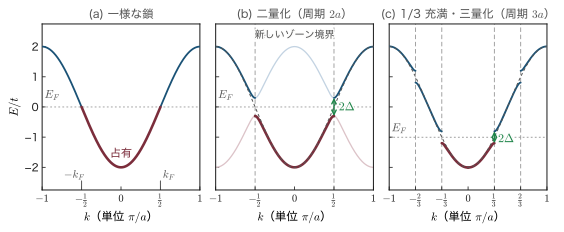
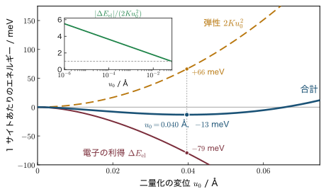
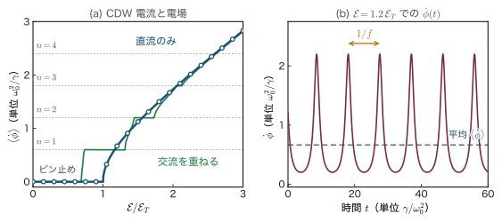
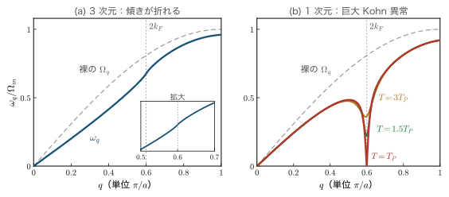
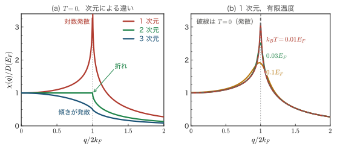
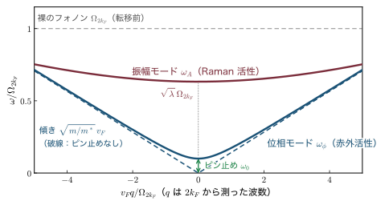
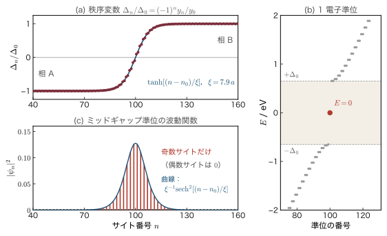
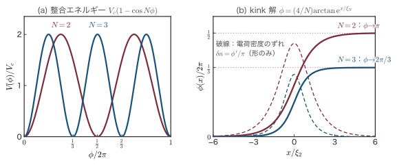

第29章1次元電子系の物理 — Peierls 不安定性・電荷密度波・ソリトン
原子が1列にだけつながった鎖を考えよう．プラスチックの仲間であるポリアセチレンの炭素の鎖，白金錯体の結晶の中で白金だけが1列に並んだ鎖，平たい有機分子が硬貨を積み重ねたように並んだ柱——こうした「1次元の金属」は実在する．第15〜18章で学んだバンド理論をそのまま当てはめると，電子がバンドの途中まで詰まっているので金属になるはずである．ところが実験では，こうした鎖の多くは冷やすと自分から絶縁体（半導体）になってしまう．原子がわずかに位置をずらして周期を2倍（一般には $\pi/k_F$．$k_F$ は次に述べる Fermi（フェルミ）準位にいる電子の波数で，Fermi 波数とよぶ）に変え，ちょうど Fermi 準位（電子をエネルギーの低い状態から順に詰めたときの，最も高いエネルギー）のところにギャップ（電子の入れないエネルギーの帯）を開けるのである．これを Peierls（パイエルス）不安定性（Peierls instability）という．3次元の金属ではふつう起こらないこの現象が，1次元では電子と格子の結合がどんなに弱くても必ず起こる．
第IV部のこれまでの章では，バンドギャップは結晶が「最初から持っているもの」だった．本章で出会うギャップは違う．電子が自分のエネルギーを下げるために格子を歪ませ，その歪みが電子にギャップを開けるという，電子と格子が互いに相手を決め合う（自己無撞着な）ギャップである．歪んだ格子の上には電子の密度の波——電荷密度波（charge density wave，CDW）——が乗る．この波は格子とは別の「電子の結晶」であり，電場をかけると格子の中を滑って電流を運ぶ．ポリアセチレンでは2つの歪み方の境目にソリトン（soliton）という粒子が生まれ，それが「電荷はあるのにスピンを持たない」という奇妙な性質を示す．ポリアセチレンにヨウ素などを加えると金属のように電気を通すことを見いだした白川英樹・Heeger（ヒーガー）・MacDiarmid（マクダイアミッド）の仕事（2000年ノーベル化学賞）は，有機 EL や有機トランジスタにつながる導電性高分子の出発点になった．半導体の素子でも，電子の通り道が十分に細くなると（ナノワイヤやカーボンナノチューブ），電子は鎖の方向にだけ動ける本章の1次元の電子に近づく．
本章の構成は次のとおりである．29.1節で1次元の強束縛バンドに二量化の歪みを入れ，ギャップ $2\Delta$ が開くこと，電子のエネルギーの利得が $-\Delta^2\ln(W/\Delta)$ という対数を含むために弾性エネルギー $\propto\Delta^2$ に必ず勝つことを，途中の式を省かずに導く．29.2節で実在する物質（ポリアセチレン，KCP，TTF–TCNQ，$\mathrm{NbSe_3}$，Bechgaard（ベクゴー）塩，スピン Peierls 系）を見る．29.3節では CDW そのものを扱い，滑る CDW が電流を運ぶという Fröhlich（フレーリッヒ）の考えと，不純物によるピン止め・しきい電場・狭帯域雑音を学ぶ．29.4節と29.5節はこの不安定性の「根」を掘る．フォノンの振動数が $2k_F$ でへこむ Kohn（コーン）異常，そして Fermi 面の nesting（入れ子）を測る Lindhard（リンドハルト）関数を，1・2・3次元で実際に計算して比べる．29.6節では CDW の集団運動（振幅モードと位相モード）と，超伝導・強誘電体との類比を見る．最後の29.7節では SSH 模型（Su–Schrieffer–Heeger（スー・シュリーファー・ヒーガー）模型．ポリアセチレンの電子と格子の歪みを一緒に扱う模型）を数値的に解いてソリトンとミッドギャップ準位を目で見て，分数電荷やトポロジーの話題まで進む．
前章（第28章）では乱れが電子を局在させることを見た．本章は乱れのない1次元に焦点を合わせる．使う道具は既に揃っている．第13章のフォノン，第16章16.5節の $2\times2$ 永年方程式，第18章18.4節の強束縛近似と Fermi 面，第19章のソフトモードと Landau（ランダウ）理論，第20章の反強磁性である．本章はこれらを総動員する第IV部の締めくくりである．
- 1次元強束縛バンド $E(k)=-2t\cos ka$ の Fermi 波数 $k_F=\pi\nu/2a$，Fermi 速度，状態密度を数え，周期 $\pi/k_F$ の歪みが $k=\pm k_F$ にギャップ $2\Delta$ を開けることを $2\times2$ 永年方程式から導く
- 電子のエネルギーの利得 $-N(0)\Delta^2\left[\ln(2\Lambda/\Delta)+\tfrac12\right]$ の対数の導出と，Peierls の定理（どんなに弱い結合でも不安定）
- BCS 型のギャップの式 $\Delta=2\Lambda\,\ee^{-1/\lambda}$，平均場の転移温度 $k_BT_P=1.13\Lambda\,\ee^{-1/\lambda}$，$2\Delta(0)/k_BT_P=3.53$
- ポリアセチレン・KCP・TTF–TCNQ・$\mathrm{NbSe_3}$・青色ブロンズ・Bechgaard 塩・$\mathrm{CuGeO_3}$ で何が起きているか，整合と不整合の区別
- 電荷密度波 $\rho(x)=\rho_0+\rho_1\cos(2k_Fx+\phi)$，Fröhlich 伝導，ピン止め，washboard 模型としきい電場，狭帯域雑音 $j_{\mathrm{CDW}}=n_ce\lambda_{\mathrm{CDW}}f$，Shapiro（シャピロ）段差
- フォノンの自己エネルギー $\omega_q^2=\Omega_q^2[1-(2g^2/\hbar\Omega_q)\chi(q)]$ と Kohn 異常，1次元でのソフト化 $\omega_{2k_F}^2\propto T-T_P$
- Lindhard 関数を1・2・3次元で解析的に計算し，nesting・不完全 nesting・SDW との関係を理解する
- 振幅モード $\omega_A=\sqrt\lambda\,\Omega_{2k_F}$ と位相モード $\omega_\phi=\sqrt{m/m^*}\,v_Fq$，Lee–Rice–Anderson（リー・ライス・アンダーソン）の有効質量 $m^*/m\sim10^2$〜$10^3$，巨大誘電率
- SSH 模型のソリトン：$\Delta(x)=\Delta_0\tanh(x/\xi)$，ミッドギャップ準位，電荷とスピンの逆転した関係，分数電荷，sine-Gordon の kink，Zak（ザック）位相
29.1 1次元電子系の伝導帯と Peierls 不安定性
29.1.1 1次元の金属は実在する
結晶の中には，ある方向にだけ原子や分子が密に並び，その方向にだけ電子が動きやすいものがある．たとえば白金の錯体 $\mathrm{K_2Pt(CN)_4Br_{0.3}\cdot3H_2O}$（略して KCP）では，平たい $\mathrm{Pt(CN)_4}$ の単位が積み重なって白金が $2.89\,\text{Å}$ 間隔で1列に並び，隣の列とは $10\,\text{Å}$ 近く離れている．電子の波動関数の重なり（第18章の飛び移り積分）は距離とともに急に小さくなるので，電子は事実上その1列の上だけを動く．実際，こうした物質の電気伝導度は鎖の方向と鎖に垂直な方向で2桁以上も違う．有機物の結晶やポリアセチレンのような高分子も同じである．このような物質を 準1次元導体（quasi-one-dimensional conductor）とよぶ．
準1次元導体の多くは，室温では金属のように電気を通すのに，冷やしていくとある温度で急に電気を通さなくなる．X 線を当てると，その温度以下で元の格子にはなかった新しい周期（超格子，superlattice）の回折斑点が現れる．つまり原子が自発的に並び方を変え，同時に電子がギャップを持つ．本節では，この現象がなぜ起こるかを最も簡単な模型で理解する．鍵は「1次元では Fermi 面が2つの点しかない」という事実である．
記号の約束：本章で使う記号
- 格子定数 $a$，サイト（原子）の番号 $n$，鎖方向の原子の変位 $u_n$．サイトの数を $N_s$ と書き，鎖の長さは $L=N_sa$ である．
- 飛び移り積分 $t\gt0$（第18章18.4節の $\gamma$ を本章では $t$ と書く）．バンド幅 $W=4t$．エネルギーは本部の約束どおり $E$ と書き，原子のエネルギー準位を原点にとる（第18章の $\alpha$ を省く）．
- $\nu$（ニュー）：1サイトあたりの伝導電子数（スピン↑↓を合わせて数える．バンドが満ちると $\nu=2$）．本章では振動数（周波数）に $\nu$ を使わず，$f$ と書く．第21章・第24章の Landau 準位の占有率 $\nu$ とは別の量である．$k_F$：Fermi 波数，$v_F$：Fermi 速度．
- $\varepsilon_k$（イプシロン．誘電率の $\epsilon$ と同じ文字の別の字体で，本章では区別して使う）：Fermi 準位から測った，ギャップが開く前の電子のエネルギー．ギャップが開いた後のエネルギーを $E_k$ と書く．
- $N(0)$：Fermi 準位での1スピンあたり・単位長さあたりの状態密度．両スピンを合わせた状態密度は $D(E_F)=2N(0)$ と書く（第15章と同じ $D$）．
- $\Delta$（デルタ）：ギャップの半分（ギャップは $2\Delta$）．$\delta$（小文字のデルタ）：結合交替の割合（飛び移りが $t(1\pm\delta)$ と交互に変わる）．$\lambda$：無次元の電子–格子結合定数．$\lambda_{\mathrm{CDW}}$：電荷密度波の波長．
- $\alpha$：29.2節・29.7節の SSH 模型の電子–格子結合定数（単位 eV/Å）．本章では吸収係数の意味では使わない．
- $m$ は電子のバンドの質量で，$\hbar k_F=mv_F$ で定める（本部の他の章では $m$ は自由電子の質量だが，本章では1次元のバンドの質量の意味で使う）．自由電子の質量は $m_e=9.109\times10^{-31}\,\mathrm{kg}$ と書き分け，数値例では，とくに断らない限りバンドの質量を $m_e$ で近似する．$m^*$ は29.3節以降の CDW の有効質量（Fröhlich 質量）であり，第17章のバンドの有効質量とは別物である．
記号の約束：二つの意味を持ちやすい記号
- $N$：29.1.7項以降，CDW の整合度（$\lambda_{\mathrm{CDW}}=Na$ のときの $N$）に使う．サイト数 $N_s$ とは別である．
- $\Omega$：電子の効果を除いた「裸の」フォノンの角振動数 $\Omega_q$（29.4節以降．$\Omega_m$ はその最大値）．29.1.6項の $\Omega_{\mathrm{pair}}$ は大正準ポテンシャルで，これとは別物である．29.3.4項の washboard 模型で電場が位相を押す強さは $F_E$，交流の部分は $F_{ac}$ と書く（自由エネルギーの $F$ とも別）．
- $\GG$（太字の G）：逆格子ベクトル．29.4節以降の電子–格子結合の強さ（単位の変位あたりの電子のポテンシャルの変化）は $\mathcal{G}$（スクリプトの G）と書いて区別する．$g$ は電子–フォノン結合の行列要素である．
- $\phi$：CDW の位相（角度）．29.7.2項の二量化の秩序変数は $\Delta_n/\Delta_0$（$\pm1$ をとる実数）と書き，$\phi$ とは区別する．
- $\epsilon_0$：真空の誘電率（29.6.5項）．29.5.3項の不完全 nesting のエネルギーは $\varepsilon_{\mathrm{w}}$ と書く．
- $T$：温度．29.3.4項で位相が1周する時間は $T_\phi$ と書く．
- $n_0$：平均の電子密度．29.7.5項のミッドギャップ準位の電子数は $n_{\mathrm{mg}}$ と書く．29.7.7項でソリトンが運ぶ電子の数は $\Delta N_e$ と書く．
- $b$：29.2.3項の TTF–TCNQ では結晶学の慣用に従って鎖の方向の分子の間隔を $b$ と書くが，29.5.3項の $b$ は鎖と鎖の間隔である．29.5.5項の Cr の不整合のずれは $\delta_{\mathrm{Cr}}$ と書く（結合交替の $\delta$ とは別）．
29.1.2 1次元の強束縛バンドと Fermi 波数
原子が間隔 $a$ で1列に並び，各原子の軌道が最近接の原子とだけ重なっているとする．第18章18.4節の強束縛近似の結果を再掲すると，バンドは
である（第18章の $\epsilon(k)=-\alpha-2\gamma\cos ka$ で $\alpha\to0$，$\gamma\to t$ とした．本部ではエネルギーを $E$ と書く）．$k=0$ で最低の $-2t$，ゾーン境界 $k=\pm\pi/a$ で最高の $+2t$ をとるので，バンド幅は $W=4t$ である．
導出：Fermi 波数 $k_F=\pi\nu/2a$
ステップ1：$k$ の数．長さ $L=N_sa$ の鎖に周期境界条件を課すと，$k$ は $2\pi/L$ おきに並ぶ（第15章15.2節と同じ）．Brillouin（ブリルアン）域の幅は $2\pi/a$ なので，その中の $k$ の数は
$$ \frac{2\pi/a}{2\pi/L}=\frac{L}{a}=N_s $$個，すなわちサイトの数と同じである．各 $k$ にはスピン↑と↓の2個の電子が入れるので，バンド全体の定員は $2N_s$ 個．
ステップ2：詰め方．式 \eqref{eq:29-tb} は $\abs{k}$ が大きいほどエネルギーが高い．絶対零度では下から詰めるので，占有されるのは $-k_F\le k\le k_F$ の区間である．この区間に入る $k$ の数は
$$ \frac{2k_F}{2\pi/L}=\frac{k_FL}{\pi} $$ステップ3：電子の数と等置する．1サイトに $\nu$ 個の電子があれば全体で $\nu N_s=\nu L/a$ 個．スピンの2を掛けて等置すると
$$ 2\times\frac{k_FL}{\pi}=\frac{\nu L}{a} \qquad\Longrightarrow\qquad k_F=\frac{\pi\nu}{2a} $$∎ 1サイトに1個（$\nu=1$，半充満，half filling）なら $k_F=\pi/2a$，すなわち Brillouin 域のちょうど半分まで詰まる．このとき $E_F=-2t\cos(\pi/2)=0$ で，Fermi 準位はバンドの中央にある．
3次元の Fermi 面は球面だった（第15章）．1次元では「Fermi 面」は $k=+k_F$ と $k=-k_F$ の2つの点にすぎない（図29.2(a) の $\pm k_F$）．このことが本章のすべての出発点になる．
導出：Fermi 速度 $v_F$ と状態密度 $N(0)$
Fermi 速度．群速度は $v=\hbar^{-1}\dd E/\dd k$（第17章17.2節）．式 \eqref{eq:29-tb} を微分すると $\dd E/\dd k=2ta\sin ka$ なので
$$ v_F=\frac{1}{\hbar}\frac{\dd E}{\dd k}\bigg|_{k=k_F}=\frac{2ta}{\hbar}\sin k_Fa \qquad(\text{半充満では }v_F=2ta/\hbar) $$状態密度．1スピンについて，エネルギーが $E$ と $E+\dd E$ のあいだにある状態を数える．$k$ が正の側と負の側の2か所から寄与があり，それぞれ $k$ の幅 $\abs{\dd k}$ の中に $L\abs{\dd k}/2\pi$ 個の状態があるから
$$ \dd N_\sigma=2\times\frac{L}{2\pi}\abs{\dd k}=\frac{L}{\pi}\frac{\dd E}{\abs{\dd E/\dd k}}=\frac{L}{\pi\hbar\abs{v}}\,\dd E $$単位長さあたりに直し（$L$ で割る），$E=E_F$ で評価すると
半充満では $\hbar v_F=2ta$ なので $D(E_F)=1/(\pi ta)$．これは第18章で導いた1次元鎖の状態密度（第18章の記号で $g(\epsilon)=\dfrac{2N_s}{\pi}\dfrac{1}{\sqrt{4\gamma^2-\epsilon^2}}$．サイト数は本章の記号 $N_s$ に直した）を $\epsilon=0$ で評価して $L=N_sa$ で割ったもの $\dfrac{2N_s}{\pi\cdot2\gamma\cdot N_sa}=\dfrac{1}{\pi\gamma a}$ と一致する．
例題29.1 ポリアセチレンの π 電子の Fermi 波数と Fermi 速度
ポリアセチレン $\mathrm{(CH)}_x$ の炭素は π 電子を1個ずつ出し，鎖方向に射影した炭素間隔 $a=1.22\,\text{Å}$，飛び移り積分 $t=2.5\,\mathrm{eV}$ の1次元バンドを作るとみなせる．(1) $\nu$，$k_F$ を求めよ．(2) $v_F$ を求め，銅の Fermi 速度 $1.57\times10^6\,\mathrm{m/s}$ と比べよ．(3) 1サイトあたり・両スピンの状態密度 $D(E_F)a$ を求めよ．
解答．(1) 炭素1個に π 電子1個なので $\nu=1$（半充満）．
$$ k_F=\frac{\pi}{2a}=\frac{3.1416}{2\times1.22\times10^{-10}\,\mathrm{m}}=1.29\times10^{10}\,\mathrm{m^{-1}} $$(2) $\hbar=6.582\times10^{-16}\,\mathrm{eV\,s}$ を使うと
$$ v_F=\frac{2ta}{\hbar}=\frac{2\times2.5\,\mathrm{eV}\times1.22\times10^{-10}\,\mathrm{m}}{6.582\times10^{-16}\,\mathrm{eV\,s}}=9.3\times10^{5}\,\mathrm{m/s} $$銅の6割程度で，普通の金属と同じ桁である．光速の $3\times10^{-3}$ 倍にあたる．
(3) 式 \eqref{eq:29-dos} に $\hbar v_F=2ta$ を入れて
$$ D(E_F)a=\frac{2a}{\pi\hbar v_F}=\frac{2a}{\pi\cdot2ta}=\frac{1}{\pi t}=\frac{1}{3.1416\times2.5\,\mathrm{eV}}=0.127\,\mathrm{eV^{-1}} $$∎ 1次元の鎖でも，鎖の上の電子は金属の電子と同じくらい速く動く．違うのは Fermi 面の形（2点）だけである．この「形」がどれほど大きな違いを生むかを，これから見ていく．
29.1.3 格子を歪ませるとギャップが開く
半充満の鎖で，原子を1つおきに逆向きに少しずらしてみよう（図29.1）．$n$ 番目の原子を $u_n=(-1)^nu_0$ だけ動かすと，隣り合う原子の間隔は $a-2u_0$ と $a+2u_0$ が交互に並ぶ．間隔が短い結合では波動関数の重なりが増えて飛び移りが強くなり（$t(1+\delta)$），長い結合では弱くなる（$t(1-\delta)$）．これを 二量化（dimerization）または 結合交替（bond alternation）という．原子2個が1組になるので，周期は $a$ から $2a$ に倍増する．
周期が $2a$ になると，逆格子ベクトルは $2\pi/2a=\pi/a$ になり，Brillouin 域の境界は $k=\pm\pi/2a$ に移る．半充満の Fermi 波数 $k_F=\pi/2a$ とちょうど同じ場所である．第16章で学んだように，周期ポテンシャルは Brillouin 域の境界にギャップを開ける．すると Fermi 準位の真上にギャップが開き，その下の占有された状態はすべてエネルギーが下がる．これが Peierls 不安定性の核心である．まず，ギャップの開き方を式で確かめよう．
一般に，波数 $Q$ の周期ポテンシャル $V(x)=2\Delta\cos(Qx+\phi)$ が電子に働くとする．Euler（オイラー）の公式で書き直すと $V(x)=\Delta\ee^{i\phi}\ee^{iQx}+\Delta\ee^{-i\phi}\ee^{-iQx}$ なので，Fourier（フーリエ）成分は $V_Q=\Delta\ee^{i\phi}$，$V_{-Q}=\Delta\ee^{-i\phi}$ である．第16章16.5節の中心方程式を $C(k)$ と $C(k-Q)$ の2成分に切り詰めた $2\times2$ 永年方程式を再掲すると（第16章の $G$ を $Q$，$U$ を $V_{\pm Q}$ と読み替える），
である．$E^0_k$ はポテンシャルがないときのエネルギーである．
導出：Fermi 点にギャップ $2\Delta$ が開き，$E_k=\pm\sqrt{\varepsilon_k^2+\Delta^2}$ になること
ステップ1：行列式．自明でない解があるためには行列式が0でなければならない（付録A の A.6節）．
$$ (E^0_k-E)(E^0_{k-Q}-E)-\Delta\ee^{i\phi}\cdot\Delta\ee^{-i\phi}=0 \quad\Longrightarrow\quad (E^0_k-E)(E^0_{k-Q}-E)-\Delta^2=0 $$位相 $\phi$ は $\ee^{i\phi}\ee^{-i\phi}=1$ で消えた．エネルギーは $\phi$ によらない．これは後で重要になる．
ステップ2：解く．第16章と同じ計算で
$$ E=\frac{E^0_k+E^0_{k-Q}}{2}\pm\sqrt{\left(\frac{E^0_k-E^0_{k-Q}}{2}\right)^2+\Delta^2} $$ステップ3：$Q=2k_F$ にとる．$k=k_F$ では $k-Q=-k_F$ で，$E^0(k_F)=E^0(-k_F)=E_F$ なので平方根の中の第1項が消え，$E=E_F\pm\Delta$．Fermi 点にちょうど幅 $2\Delta$ のギャップが開く．
ステップ4：Fermi 点の近くで線形化する．$k=k_F+p$（$\abs{p}\ll k_F$）とおき，Fermi 準位から測ったエネルギーを Taylor（テイラー）展開の1次まで書くと
$$ \varepsilon_k\equiv E^0_k-E_F\simeq\hbar v_Fp $$相手の $k-Q=-k_F+p$ は左の Fermi 点の近くにあり，そこでは $\abs{k-Q}=k_F-p$ なので（エネルギーは $\abs{k}$ だけで決まる）
$$ E^0_{k-Q}-E_F\simeq\hbar v_F\bigl[(k_F-p)-k_F\bigr]=-\hbar v_Fp=-\varepsilon_k $$これをステップ2に入れると $\dfrac{E^0_k+E^0_{k-Q}}{2}=E_F$，$\dfrac{E^0_k-E^0_{k-Q}}{2}=\varepsilon_k$ なので，Fermi 準位から測ったエネルギー $E_k\equiv E-E_F$ は
$$ E_k=\pm\sqrt{\varepsilon_k^2+\Delta^2} $$∎ 下の枝は $-\sqrt{\varepsilon_k^2+\Delta^2}\le-\Delta$，上の枝は $\ge+\Delta$ で，あいだの $2\Delta$ には状態がない．絶対零度では下の枝がすべて占有される．
実は，この $E_k=\pm\sqrt{\varepsilon_k^2+\Delta^2}$ は超伝導の BCS 理論で準粒子のエネルギーとして現れる式と同じ形をしている．超伝導では $k$ と $-k$ の電子がギャップを作り，ここでは $k$ と $k-2k_F$ の電子がギャップを作る．この類比は本章でくり返し現れる（BCS 理論については次の補足を見よ）．
補足：BCS 理論と準粒子
金属を冷やすと，ある温度で電気抵抗がちょうど0になることがある．これを 超伝導（superconductivity）という．その仕組みを1957年に説明したのが Bardeen（バーディーン）・Cooper（クーパー）・Schrieffer（シュリーファー）の理論で，3人の頭文字をとって BCS 理論とよぶ．BCS 理論では，Fermi 準位の近くの電子が格子の振動を仲立ちにして2個ずつ組（Cooper 対）を作り，Fermi 準位のところに幅 $2\Delta$ のギャップが開く．ギャップの上に励起された「電子（正確には電子と正孔が混ざったもの）」を 準粒子（quasiparticle）とよび，そのエネルギーが $\sqrt{\varepsilon_k^2+\Delta^2}$ である．本章では「同じ形の式が出る」ことだけを使い，超伝導そのものには立ち入らない（姉妹シミュレーター「Cooper 対」も参照）．
二量化した強束縛の鎖では，線形化しなくても厳密にバンドを求められる．飛び移りの強弱は原子の上のポテンシャルではなく「結合の上」の変化なので，$2\times2$ 行列の非対角成分が $k$ によって変わる点だけが少し違う．
導出：二量化した鎖のバンド $E=\pm2t\sqrt{\cos^2ka+\delta^2\sin^2ka}$
ステップ1：ハミルトニアン．$c_n^\dagger$，$c_n$ を $n$ 番目の原子の軌道に電子を生成・消滅させる演算子とする（姉妹編『量子力学』の第57章57.5節の記法．$c_{n+1}^\dagger c_n$ は「電子を $n$ から $n+1$ へ移す」と読めばよい）．$n$ と $n+1$ のあいだの飛び移りを $t_n=t+(-1)^n\delta t$（$\delta t\equiv t\delta$）とすると
$$ \Ham=-\sum_n t_n\left(c_{n+1}^\dagger c_n+c_n^\dagger c_{n+1}\right) $$ステップ2：Bloch（ブロッホ）波で書き直す．$c_n=N_s^{-1/2}\sum_k\ee^{ikna}c_k$ を代入する．一様な部分 $t$ からは，第18章と同じく対角成分 $E^0_k=-2t\cos ka$ が出る．交替する部分 $\delta t(-1)^n$ を調べる．$(-1)^n=\ee^{i\pi n}$ と書けるので
$$ \sum_n(-1)^nc_{n+1}^\dagger c_n=\frac1{N_s}\sum_{k,k'}\ee^{-ik'a}\Bigl[\sum_n\ee^{i(k-k'+\pi/a)na}\Bigr]c_{k'}^\dagger c_k $$角かっこの中の和は $k'=k+\pi/a$ のとき $N_s$，それ以外は0（第11章・第13章で何度も使った「位相の和」の性質）．よって
$$ \sum_n(-1)^nc_{n+1}^\dagger c_n=\sum_k\ee^{-i(k+\pi/a)a}c_{k+\pi/a}^\dagger c_k=-\sum_k\ee^{-ika}c_{k+\pi/a}^\dagger c_k $$（$\ee^{-i\pi}=-1$ を使った．）エルミート共役の項も同じように計算する．$c_n^\dagger=N_s^{-1/2}\sum_{k'}\ee^{-ik'na}c_{k'}^\dagger$ と $c_{n+1}=N_s^{-1/2}\sum_k\ee^{ik(n+1)a}c_k$ を掛けて $n$ について足すと
$$ \sum_n(-1)^nc_n^\dagger c_{n+1}=\frac1{N_s}\sum_{k,k'}\ee^{ika}\Bigl[\sum_n\ee^{i(k-k'+\pi/a)na}\Bigr]c_{k'}^\dagger c_k=\sum_k\ee^{ika}c_{k+\pi/a}^\dagger c_k $$（ここでも角かっこの和は $k'=k+\pi/a$ の項だけを残す）．2つを合わせ，$-\delta t$ を掛けて
$$ \Ham_{\delta}=-\delta t\sum_k\left(\ee^{ika}-\ee^{-ika}\right)c_{k+\pi/a}^\dagger c_k=-2i\,\delta t\sum_k\sin ka\;c_{k+\pi/a}^\dagger c_k $$ステップ3：$2\times2$ 行列．交替する飛び移りは $k$ と $k+\pi/a$ だけを結ぶ．この2つを組にした行列は
$$ \begin{pmatrix} -2t\cos ka & 2i\,\delta t\sin ka\\ -2i\,\delta t\sin ka & +2t\cos ka \end{pmatrix} $$（右下は $E^0_{k+\pi/a}=-2t\cos(ka+\pi)=+2t\cos ka$．非対角成分は互いに複素共役．）固有値は，トレースが0なので $E=\pm\sqrt{(2t\cos ka)^2+(2\delta t\sin ka)^2}$，すなわち
$$ E_\pm(k)=\pm2t\sqrt{\cos^2ka+\delta^2\sin^2ka} $$ステップ4：ギャップ．$k=\pi/2a$ では $\cos ka=0$，$\sin ka=1$ なので $E_\pm=\pm2t\delta$．ギャップは
$$ 2\Delta=4t\delta\qquad\Longleftrightarrow\qquad\Delta=2t\delta=2\,\delta t $$∎ 半充満の強束縛バンドでは $E^0_{k+\pi/a}=-E^0_k$ がバンド全体で厳密に成り立つ．これは29.5節で「完全な nesting」とよぶ性質の最も簡単な例である．
補足：2原子の単位胞で考える別の導き方
同じ結果は，生成・消滅演算子を使わなくても出せる．隣り合う2つの原子（偶数番目の A と奇数番目の B）をまとめて1つの単位胞（長さ $2a$）とみなし，$j$ 番目の単位胞の A（サイト $2j$）と B（サイト $2j+1$）の振幅を Bloch の形 $\psi_{2j}=A\,\ee^{ik\cdot2ja}$，$\psi_{2j+1}=B\,\ee^{ik\cdot2ja}$ とおく．単位胞の中の結合（$2j$ と $2j+1$ のあいだ）の飛び移りは $t_1=t+\delta t=t(1+\delta)$，単位胞のあいだの結合（$2j+1$ と $2j+2$ のあいだ）は $t_2=t-\delta t=t(1-\delta)$ である．第18章の強束縛の式（各サイトで $E\psi_n=-t_{n-1}\psi_{n-1}-t_n\psi_{n+1}$）をサイト $2j$ と $2j+1$ に書くと
$$ EA\,\ee^{ik\cdot2ja}=-t_1B\,\ee^{ik\cdot2ja}-t_2B\,\ee^{ik\cdot2(j-1)a},\qquad EB\,\ee^{ik\cdot2ja}=-t_1A\,\ee^{ik\cdot2ja}-t_2A\,\ee^{ik\cdot2(j+1)a} $$（サイト $2j$ の左隣はひとつ前の単位胞の B，サイト $2j+1$ の右隣はひとつ後の単位胞の A である）．両辺を $\ee^{ik\cdot2ja}$ で割ると
$$ \begin{pmatrix}0&-(t_1+t_2\ee^{-2ika})\\-(t_1+t_2\ee^{2ika})&0\end{pmatrix}\begin{pmatrix}A\\B\end{pmatrix}=E\begin{pmatrix}A\\B\end{pmatrix} $$となる．非対角成分は互いに複素共役で，トレースは0だから，固有値は $E=\pm\abs{t_1+t_2\ee^{2ika}}$ である．絶対値の2乗を計算すると
$$ \begin{aligned} \abs{t_1+t_2\ee^{2ika}}^2&=t_1^2+t_2^2+2t_1t_2\cos2ka=2t^2\left[(1+\delta^2)+(1-\delta^2)\cos2ka\right]\\ &=4t^2\left(\cos^2ka+\delta^2\sin^2ka\right) \end{aligned} $$（$t_1^2+t_2^2=2t^2(1+\delta^2)$，$t_1t_2=t^2(1-\delta^2)$，$1+\cos2ka=2\cos^2ka$，$1-\cos2ka=2\sin^2ka$ を使った）．よって $E=\pm2t\sqrt{\cos^2ka+\delta^2\sin^2ka}$ となり，上の導出と一致する．この $2\times2$ 行列は29.7.10項でもう一度使う（そこでの $v,w$ がここの $t_1,t_2$ にあたる）．

29.1.4 電子のエネルギーはどれだけ下がるか — 対数の導出
ギャップが開くと，占有された状態はすべて下がる（図29.2(b)）．下がり方の合計を計算しよう．大事なのは Fermi 点の近くの状態である．遠くの状態は少ししか下がらない．そこで Fermi 準位の上下 $\Lambda$（ラムダ）の範囲だけを線形化したバンドで扱う．$\Lambda$ は「線形化が使えるエネルギーの幅」で，バンド幅の半分 $W/2$ 程度の大きさである．$\Lambda$ の正確な値は最後の結果の対数の中に入るだけで，結論には効かない．
数学の道具：双曲線関数
$\sinh s=\dfrac{\ee^{s}-\ee^{-s}}{2}$，$\cosh s=\dfrac{\ee^{s}+\ee^{-s}}{2}$ と定義する（「ハイパボリック・サイン」「ハイパボリック・コサイン」）．定義から直接
$$ \cosh^2s-\sinh^2s=\frac{(\ee^s+\ee^{-s})^2-(\ee^s-\ee^{-s})^2}{4}=\frac{4}{4}=1 $$ $$ \frac{\dd}{\dd s}\sinh s=\cosh s,\qquad \frac{\dd}{\dd s}\cosh s=\sinh s $$が出る．同じく定義から
$$ 2\sinh s\cosh s=\frac{\ee^{2s}-\ee^{-2s}}{2}=\sinh2s,\qquad\cosh^2s=\frac{\ee^{2s}+2+\ee^{-2s}}{4}=\frac{1+\cosh2s}{2} $$である．逆関数は，$y=\sinh s$ を $\ee^s$ の2次方程式 $\ee^{2s}-2y\ee^s-1=0$ とみて解き，$\ee^s=y+\sqrt{y^2+1}$（正の根）より $\sinh^{-1}y=\ln\bigl(y+\sqrt{y^2+1}\bigr)$．ついでに $\tanh s=\sinh s/\cosh s$ も29.1.6項と29.7節で使う．三角関数の $\cos^2+\sin^2=1$ の符号が1か所だけ変わった仲間だと思えばよい．
導出：電子のエネルギーの利得 $\Delta E_{\mathrm{el}}/L=-N(0)\Delta^2\left[\ln(2\Lambda/\Delta)+\tfrac12\right]$
ステップ1：組を数える．ギャップを開けるポテンシャルは，右の Fermi 点の近くの状態 $k$ と，左の Fermi 点の近くの状態 $k-2k_F$ を1組にして混ぜる（前項の導出）．組は右の Fermi 点の近くの $k$ で名前を付ければよい．$\varepsilon_k=\hbar v_F(k-k_F)$ なので $\dd k=\dd\varepsilon/\hbar v_F$，$k$ の幅 $\dd k$ の中の $k$ の数は $L\,\dd k/2\pi$．よって $\varepsilon$ と $\varepsilon+\dd\varepsilon$ のあいだにある組の数は
$$ \frac{L}{2\pi}\frac{\dd\varepsilon}{\hbar v_F} $$ステップ2：1組あたりの変化．ギャップが開く前，組の2つの状態のエネルギーは $+\varepsilon$ と $-\varepsilon$ で，低いほう（$-\abs{\varepsilon}$）に電子が入っていた．開いた後は低いほうの $-\sqrt{\varepsilon^2+\Delta^2}$ に入る．1組・1スピンあたりのエネルギーの変化は
$$ -\sqrt{\varepsilon^2+\Delta^2}-\left(-\abs{\varepsilon}\right)=\abs{\varepsilon}-\sqrt{\varepsilon^2+\Delta^2}\ \lt\ 0 $$ステップ3：足し上げる．スピンの2を掛け，$\varepsilon$ について $-\Lambda$ から $\Lambda$ まで積分する．被積分関数は $\varepsilon\to-\varepsilon$ で変わらないので，$0$ から $\Lambda$ の積分の2倍に直せる．
$$ \Delta E_{\mathrm{el}}=2\times\frac{L}{2\pi\hbar v_F}\int_{-\Lambda}^{\Lambda}\left(\abs{\varepsilon}-\sqrt{\varepsilon^2+\Delta^2}\right)\dd\varepsilon =\frac{2L}{\pi\hbar v_F}\int_0^{\Lambda}\left(\varepsilon-\sqrt{\varepsilon^2+\Delta^2}\right)\dd\varepsilon $$式 \eqref{eq:29-dos} の $N(0)=1/\pi\hbar v_F$ を使うと $\Delta E_{\mathrm{el}}/L=2N(0)\,(I_1-I_2)$，ただし $I_1=\int_0^\Lambda\varepsilon\,\dd\varepsilon=\Lambda^2/2$，$I_2=\int_0^\Lambda\sqrt{\varepsilon^2+\Delta^2}\,\dd\varepsilon$．
ステップ4：$I_2$ を計算する．$\varepsilon=\Delta\sinh s$ と置換する（上の「数学の道具」）．$\dd\varepsilon=\Delta\cosh s\,\dd s$，$\sqrt{\varepsilon^2+\Delta^2}=\Delta\sqrt{\sinh^2s+1}=\Delta\cosh s$ なので
$$ \begin{aligned} I_2&=\Delta^2\int_0^{s_\Lambda}\cosh^2s\,\dd s=\Delta^2\int_0^{s_\Lambda}\frac{1+\cosh2s}{2}\,\dd s\\ &=\frac{\Delta^2}{2}\left[s_\Lambda+\frac{\sinh2s_\Lambda}{2}\right]=\frac{\Delta^2}{2}\left[s_\Lambda+\sinh s_\Lambda\cosh s_\Lambda\right] \end{aligned} $$上端は $\sinh s_\Lambda=\Lambda/\Delta$，$\cosh s_\Lambda=\sqrt{1+\Lambda^2/\Delta^2}=\sqrt{\Lambda^2+\Delta^2}/\Delta$，$s_\Lambda=\sinh^{-1}(\Lambda/\Delta)$ だから
$$ I_2=\frac12\left[\Delta^2\sinh^{-1}\frac{\Lambda}{\Delta}+\Lambda\sqrt{\Lambda^2+\Delta^2}\right] $$ステップ5：$\Delta\ll\Lambda$ で展開する．$\sinh^{-1}y=\ln\bigl(y+\sqrt{y^2+1}\bigr)$ に $y=\Lambda/\Delta\gg1$ を入れると $\sqrt{y^2+1}\simeq y$ なので $\sinh^{-1}(\Lambda/\Delta)\simeq\ln(2\Lambda/\Delta)$．また
$$ \Lambda\sqrt{\Lambda^2+\Delta^2}=\Lambda^2\sqrt{1+\Delta^2/\Lambda^2}\simeq\Lambda^2\left(1+\frac{\Delta^2}{2\Lambda^2}\right)=\Lambda^2+\frac{\Delta^2}{2} $$よって
$$ I_2\simeq\frac{\Lambda^2}{2}+\frac{\Delta^2}{2}\ln\frac{2\Lambda}{\Delta}+\frac{\Delta^2}{4}, \qquad I_1-I_2\simeq-\frac{\Delta^2}{2}\left[\ln\frac{2\Lambda}{\Delta}+\frac12\right] $$ステップ6：まとめる．$2N(0)$ を掛けて
なぜ：対数が出るのは1次元だけ
Fermi 準位から遠い状態（$\abs{\varepsilon}\gg\Delta$）では $\sqrt{\varepsilon^2+\Delta^2}\simeq\abs{\varepsilon}+\dfrac{\Delta^2}{2\abs{\varepsilon}}$ なので，1組あたりの下がりは $-\Delta^2/2\abs{\varepsilon}$ である．これは2次の摂動論の「（行列要素）$^2$／（エネルギー差）」そのもので，エネルギー差 $2\abs{\varepsilon}$ が小さい組ほどよく下がる．1次元では Fermi 点の近くの組が「一定の密度」$N(0)$ で並んでいるので，足し上げると $\int\dd\varepsilon/\varepsilon$ となり，下端を $\Delta$ で打ち切った対数 $\ln(\Lambda/\Delta)$ が残る．
3次元ではそうならない．Fermi 球の上の点 $\kk$ と $\kk-\qq$ のエネルギー差が小さい組は，$\qq$ をどう選んでも Fermi 面のごく一部（線や点）にしかない．エネルギー差の小さい組が少ないので積分は発散せず，下がりは $\Delta^2$ に比例するだけになる．このとき弾性エネルギー（$\propto\Delta^2$）との勝負は係数の大小で決まり，ふつうの金属では弾性が勝つ．1次元の「Fermi 面が2点で，1つの $Q=2k_F$ で丸ごと重ね合わせられる」性質が，対数を生む．これを29.5節で nesting とよぶ．
例題29.2 利得の積分を数値で確かめる
$\Delta=1$ とし，$\Lambda=10$ と $\Lambda=100$ のそれぞれについて，ステップ4の厳密な $I_1-I_2$ と，近似式 $-\frac{\Delta^2}{2}\left[\ln(2\Lambda/\Delta)+\frac12\right]$ を比べよ．
解答．$\Lambda=10$：$\sqrt{\Lambda^2+\Delta^2}=\sqrt{101}=10.0499$，$\sinh^{-1}10=\ln(10+10.0499)=2.99822$．
$$ I_1-I_2=\frac{100}{2}-\frac12\left[2.99822+10\times10.0499\right]=50-\frac12\times103.4972=-1.7486 $$近似式は $-\frac12[\ln20+0.5]=-\frac12[2.9957+0.5]=-1.7479$．差は $0.04\%$．$\Lambda=100$ では厳密値・近似値とも $-2.8992$ で，4桁一致する．
∎ $\Lambda$ を10倍にしても利得は $\frac12\ln10=1.15$ だけしか増えない．利得の大部分は Fermi 点のすぐ近くの状態から来ていることがわかる．
線形化せずに強束縛のバンド全体で計算することもできる．二量化した鎖の占有状態のエネルギー $-2t\sqrt{\cos^2ka+\delta^2\sin^2ka}$ を Brillouin 域で積分すると，1サイトあたりの利得は
$$ \frac{\Delta E_{\mathrm{el}}}{N_s}=-\frac{2t}{\pi}\delta^2\left[\ln\frac{4}{\delta}-\frac12\right]+\cdots $$となる（演習29.1．完全楕円積分の展開を使う）．$\Delta=2t\delta$，$N(0)a=1/2\pi t$ を使って式 \eqref{eq:29-gain} に $a$ を掛けたもの $-\dfrac{\Delta^2}{2\pi t}\left[\ln\dfrac{2\Lambda}{\Delta}+\dfrac12\right]$ と比べると，$\ln(4/\delta)-\frac12=\ln(8t/\Delta)-\frac12=\ln(2W/\Delta)-\frac12$ なので，$2\Lambda=2W/\ee$，すなわち $\Lambda=W/\ee\simeq0.37W$ とおけば両者は一致する．$\Lambda$ を「バンド幅の半分程度」とした見積もりは，桁として正しい．
29.1.5 Peierls の定理と BCS 型のギャップの式
歪みにはエネルギーの損もある．原子をずらすとバネが伸び縮みするからである．ギャップは歪みの振幅 $u_0$ に比例し（$\Delta=g_1u_0$，$g_1$ は電子–格子結合の強さ），弾性エネルギーは $u_0^2$ に比例する（単位長さあたり $\frac12\kappa u_0^2$，$\kappa$ はバネ定数に相当する量）．したがって弾性エネルギーは $\Delta^2$ に比例する．その比例係数を，次のように無次元の数 $\lambda$ を使って書く．
定義：無次元の電子–格子結合定数 $\lambda$
$$ \frac{E_{\mathrm{latt}}}{L}=\frac{\kappa}{2g_1^2}\Delta^2\equiv\frac{N(0)}{\lambda}\Delta^2 \qquad\Longleftrightarrow\qquad \lambda=\frac{2N(0)g_1^2}{\kappa} $$$\lambda$ は「電子が歪みからどれだけ得をしたがるか（$N(0)g_1^2$）」と「格子がどれだけ硬いか（$\kappa$）」の比である．格子が軟らかく，電子と格子の結合が強いほど $\lambda$ は大きい．典型的には $0.1$〜$1$ 程度．
電子の利得 \eqref{eq:29-gain} と弾性エネルギーを足すと，全エネルギーは
定理29.1 Peierls の定理
半充満（一般に，Fermi 点が2つの）1次元金属は，電子–格子結合 $\lambda\gt0$ がどんなに小さくても，周期 $\pi/k_F$ の歪みに対して不安定である．
証明．式 \eqref{eq:29-etot} の角かっこの中で，$\Delta\to0$ のとき $\ln(2\Lambda/\Delta)\to+\infty$ となる．したがって $1/\lambda$ がどれほど大きくても，十分小さい $\Delta$ では角かっこは負になる．具体的には $\ln(2\Lambda/\Delta)\gt1/\lambda-\frac12$，すなわち
$$ \frac{2\Lambda}{\Delta}\gt\ee^{1/\lambda-1/2} \qquad\Longleftrightarrow\qquad \Delta\lt2\Lambda\,\ee^{-1/\lambda}\,\ee^{1/2} $$のとき $E_{\mathrm{tot}}\lt0$．右辺は $\lambda$ が小さいほど小さくなるが，正の数であることに変わりはない．歪みのない状態（$E_{\mathrm{tot}}=0$）よりエネルギーの低い状態が必ずあるので，歪みのない状態は基底状態ではない．∎
この結論は Peierls が1955年の教科書『Quantum Theory of Solids』で示した（同じ頃 Fröhlich も1次元の電子–格子系を論じた）．$\lambda$ が小さいと得られるエネルギーは指数関数的に小さくなるが，決して0にはならない．エネルギーが最低になる $\Delta$ を求めよう．
導出：ギャップの式 $\Delta_0=2\Lambda\,\ee^{-1/\lambda}$ と凝縮エネルギー
ステップ1：微分する．$\Delta^2\ln(2\Lambda/\Delta)=\Delta^2\ln2\Lambda-\Delta^2\ln\Delta$ の微分は $2\Delta\ln2\Lambda-2\Delta\ln\Delta-\Delta=2\Delta\ln(2\Lambda/\Delta)-\Delta$．よって
$$ \frac{1}{L}\frac{\dd E_{\mathrm{tot}}}{\dd\Delta}=N(0)\left[\frac{2\Delta}{\lambda}-2\Delta\ln\frac{2\Lambda}{\Delta}+\Delta-\Delta\right]=2N(0)\,\Delta\left[\frac1\lambda-\ln\frac{2\Lambda}{\Delta}\right] $$ステップ2：0とおく．$\Delta\ne0$ の解は $\ln(2\Lambda/\Delta_0)=1/\lambda$，すなわち
導出（つづき）：凝縮エネルギー
ステップ3：最低のエネルギー．式 \eqref{eq:29-etot} に $\ln(2\Lambda/\Delta_0)=1/\lambda$ を代入すると，角かっこは $\frac1\lambda-\frac1\lambda-\frac12=-\frac12$．
$$ \frac{E_{\mathrm{tot}}(\Delta_0)}{L}=-\frac12N(0)\,\Delta_0^2 $$∎ これを 凝縮エネルギー（condensation energy）という．2階微分は $\dd^2E_{\mathrm{tot}}/\dd\Delta^2\big|_{\Delta_0}=2N(0)L\gt0$ で，確かに極小である（29.6節で振幅モードの振動数を出すときに使う）．
式 \eqref{eq:29-gap} は超伝導の BCS 理論のギャップの式 $\Delta=2\hbar\omega_D\ee^{-1/N(0)V}$ （$\omega_D$ は Debye（デバイ）振動数，$V$ は電子どうしの引力の強さ）と同じ形をしている（29.1.3項の補足，姉妹シミュレーター「Cooper 対」参照）．$\lambda$ が指数の分母にあるので，$\lambda$ が少し変わるだけで $\Delta_0$ は大きく変わる．前因子は $\Lambda$ の取り方で変わるが（強束縛の鎖では $2\Lambda=2W/\ee$），実用上は $\Delta_0\approx W\ee^{-1/\lambda}$ と覚えておけばよい．
SSH 模型での $\lambda$．ポリアセチレンの標準的な模型（29.7節の SSH 模型）では，飛び移りが結合の伸び縮み $u_{n+1}-u_n$ に比例して変わり（比例係数 $\alpha$），バネ定数は $K$ である．二量化 $u_n=(-1)^nu_0$ では $u_{n+1}-u_n=\mp2u_0$ なので飛び移りは $t\pm2\alpha u_0$，すなわち $\delta t=2\alpha u_0$ で，$\Delta=2\delta t=4\alpha u_0$．弾性エネルギーは1サイトあたり $\frac K2(2u_0)^2=2Ku_0^2=K\Delta^2/8\alpha^2$．これを $a$ で割ったものを $N(0)\Delta^2/\lambda$（$N(0)=1/2\pi ta$）と等置すると
$$ \frac{K\Delta^2}{8\alpha^2a}=\frac{\Delta^2}{2\pi ta\,\lambda} \qquad\Longrightarrow\qquad \lambda=\frac{8\alpha^2}{2\pi tK}=\frac{4\alpha^2}{\pi tK} $$$t=2.5\,\mathrm{eV}$，$\alpha=4.1\,\mathrm{eV/Å}$，$K=21\,\mathrm{eV/Å^2}$ を入れると
$$ \lambda=\frac{4\times(4.1)^2}{3.1416\times2.5\times21}=\frac{67.24}{164.9}=0.41 $$となる（文献では $\lambda_{\mathrm{SSH}}=2\alpha^2/\pi tK\approx0.2$ を結合定数とよぶことが多い．本章の $\lambda$ はその2倍である）．このとき $\Delta_0=(2W/\ee)\ee^{-1/\lambda}=(20/2.718)\,\ee^{-2.45}\,\mathrm{eV}=0.63\,\mathrm{eV}$ となる．線形化しない厳密な計算（図29.3）では $\Delta_0=0.65\,\mathrm{eV}$，$u_0=0.040\,\text{Å}$ で，ギャップ $2\Delta_0=1.3\,\mathrm{eV}$ は実測の光学ギャップ（約 $1.4$〜$1.5\,\mathrm{eV}$）に近い．

例題29.3 結合定数からギャップと転移温度を見積もる
バンド幅 $W=1\,\mathrm{eV}$（有機導体の典型）で $\lambda=0.3$ の1次元金属がある．(1) $\Delta_0\approx W\ee^{-1/\lambda}$ でギャップ $2\Delta_0$ を見積もれ．(2) 次項の式 \eqref{eq:29-ratio} $2\Delta_0=3.53\,k_BT_P$ から平均場の転移温度 $T_P$ を求めよ．(3) $\lambda$ が $0.25$ に下がると $\Delta_0$ は何倍になるか．
解答．(1) $1/\lambda=3.333$，$\ee^{-3.333}=0.0357$ なので $\Delta_0=0.0357\,\mathrm{eV}=36\,\mathrm{meV}$，ギャップ $2\Delta_0=71\,\mathrm{meV}$．
(2) $k_B=8.617\times10^{-5}\,\mathrm{eV/K}$ を使い
$$ T_P=\frac{2\Delta_0}{3.53\,k_B}=\frac{0.0714\,\mathrm{eV}}{3.53\times8.617\times10^{-5}\,\mathrm{eV/K}}=2.3\times10^{2}\,\mathrm{K} $$(3) $\ee^{-1/0.25}/\ee^{-1/0.3}=\ee^{-4+3.333}=\ee^{-0.667}=0.51$．約半分になる．
∎ 結合定数がわずか $0.05$ 変わるだけでギャップと転移温度が半分になる．指数関数の感度の高さのため，$\lambda$ を第一原理から正確に予言するのは難しく，実際の物質の $T_P$ が数 K から数百 K まで大きくばらつくのはこのためである．
29.1.6 有限温度：転移温度 $T_P$ と $2\Delta/k_BT_P=3.53$
温度を上げると，ギャップの上の状態にも電子が熱で励起され，ギャップを開ける得が減る．ある温度 $T_P$ でついに $\Delta=0$ になり，鎖は金属に戻る．これが Peierls 転移（Peierls transition）である．$T_P$ を求めるには，エネルギーの代わりに自由エネルギーを最小にする．
導出：有限温度のギャップ方程式
ステップ1：1組の自由エネルギー．1組・1スピンには $+E$ と $-E$（$E=\sqrt{\varepsilon^2+\Delta^2}$）の2つの準位があり，化学ポテンシャルはその中央0にある（電子と正孔の対称性による）．Fermi 粒子の1準位の大正準ポテンシャルは $-k_BT\ln(1+\ee^{-E_i/k_BT})$（付録A の A.11節）だから，2準位の合計は
$$ \Omega_{\mathrm{pair}}=-k_BT\ln\left[(1+\ee^{E/k_BT})(1+\ee^{-E/k_BT})\right] $$かっこの中は
$$ 2+\ee^{E/k_BT}+\ee^{-E/k_BT}=2+2\cosh\frac{E}{k_BT}=4\cosh^2\frac{E}{2k_BT} $$なので $\Omega_{\mathrm{pair}}=-2k_BT\ln\left[2\cosh\dfrac{E}{2k_BT}\right]$．
ステップ2：$\Delta$ で微分する．$\dfrac{\dd}{\dd s}\ln\cosh s=\tanh s$，$\dfrac{\partial E}{\partial\Delta}=\dfrac{\Delta}{E}$ より
$$ \frac{\partial\Omega_{\mathrm{pair}}}{\partial\Delta}=-2k_BT\cdot\tanh\frac{E}{2k_BT}\cdot\frac{1}{2k_BT}\cdot\frac{\Delta}{E}=-\frac{\Delta}{E}\tanh\frac{E}{2k_BT} $$ステップ3：全体の自由エネルギーを極小にする．電子の部分はスピンの2と組の数（29.1.4項のステップ1）を掛けて足し，弾性エネルギー $LN(0)\Delta^2/\lambda$ を加える．$\varepsilon$ の積分は $-\Lambda$ から $\Lambda$ で，被積分関数が偶関数なので $\int_{-\Lambda}^{\Lambda}=2\int_0^\Lambda$．
$$ \frac{\partial F}{\partial\Delta}=2\cdot\frac{L}{2\pi\hbar v_F}\cdot2\int_0^\Lambda\left(-\frac{\Delta}{E}\tanh\frac{E}{2k_BT}\right)\dd\varepsilon+\frac{2LN(0)\Delta}{\lambda}=0 $$$\dfrac{2L}{\pi\hbar v_F}=2LN(0)$ で全体を割ると
$T=0$ では $\tanh=1$ で，左辺は $\int_0^\Lambda\dd\varepsilon/\sqrt{\varepsilon^2+\Delta^2}=\sinh^{-1}(\Lambda/\Delta)\simeq\ln(2\Lambda/\Delta)$．これを $1/\lambda$ と等置すれば式 \eqref{eq:29-gap} に戻る．
導出：平均場の転移温度 $k_BT_P=1.13\Lambda\,\ee^{-1/\lambda}$
ステップ1．$T=T_P$ では $\Delta\to0$ なので，式 \eqref{eq:29-gapeq} は $\displaystyle\int_0^\Lambda\frac{\dd\varepsilon}{\varepsilon}\tanh\frac{\varepsilon}{2k_BT_P}=\frac1\lambda$．
ステップ2：無次元化．$x=\varepsilon/2k_BT_P$，$X=\Lambda/2k_BT_P$ とおくと $\dd\varepsilon/\varepsilon=\dd x/x$ なので，左辺は $\int_0^X\dfrac{\tanh x}{x}\dd x$．
ステップ3：部分積分．$\tanh x$ を「微分する側」，$1/x$ を「積分する側」（原始関数 $\ln x$）にとると，$\dfrac{\dd}{\dd x}\tanh x=\dfrac{1}{\cosh^2x}$ より
$$ \int_0^X\frac{\tanh x}{x}\dd x=\Bigl[\tanh x\,\ln x\Bigr]_0^X-\int_0^X\frac{\ln x}{\cosh^2x}\dd x $$下端では $\tanh x\simeq x$ なので $x\ln x\to0$．上端では $X\gg1$ で $\tanh X\simeq1$ なので $\ln X$．残りの積分は $1/\cosh^2x$ が速く減衰するので上端を $\infty$ にしてよく，その値は定数
$$ \int_0^\infty\frac{\ln x}{\cosh^2x}\dd x=-\ln\frac{4\ee^{\gamma_E}}{\pi}=-0.8188 $$である（$\gamma_E=0.5772$ は Euler の定数）．この定積分の値はここでは公式として認める．数値積分（たとえば $x=10^{-6}$ から $30$ までを細かく分けて台形公式で足し上げる）で確かめられるほか，29.5.3項の導出の最後の補足で，ステップ4の結果を別の方法で導く．
ステップ4．以上から左辺は $\ln X+\ln\dfrac{4\ee^{\gamma_E}}{\pi}=\ln\dfrac{4\ee^{\gamma_E}}{\pi}\dfrac{\Lambda}{2k_BT_P}=\ln\dfrac{2\ee^{\gamma_E}\Lambda}{\pi k_BT_P}$．これが $1/\lambda$ に等しいので，両辺の指数をとって
$\Lambda$ も $\lambda$ も比から消え，$3.53$ という普遍的な数が残る．BCS 理論の $2\Delta(0)/k_BT_c=3.53$ と同じ数である．ギャップ方程式 \eqref{eq:29-gapeq} を数値的に解くと，$\Delta(T)$ は低温ではほとんど $\Delta_0$ のままで，$T_P$ の近くで $\Delta(T)\simeq1.74\,\Delta_0\sqrt{1-T/T_P}$ のように0に近づく（$T=0.9T_P$ で $0.53\Delta_0$）．
注意：本当の1次元系は有限温度で秩序を持てない
ここまでの計算は 平均場近似（mean-field approximation）であり，秩序変数 $\Delta$ のゆらぎを無視している．厳密に1次元の系では，熱ゆらぎのために有限温度で長距離秩序は保たれない（Landau と Peierls が指摘した一般則）．実在の準1次元導体で鋭い転移が見えるのは，隣の鎖との弱い結合が3次元的な秩序を助けるからである．そのため実際の $T_P$ は平均場の値 $T_P^{\mathrm{MF}}$ より低く，Lee，Rice，Anderson（1973）によれば $T_P^{\mathrm{MF}}$ の数分の1になる．$T_P$ の上でも鎖の上には短い距離だけ CDW が育っており（ゆらぎ），電子の状態密度にはギャップの名残（擬ギャップ，pseudogap）が見える．実測の $2\Delta/k_BT_P$ が $3.53$ より大きいことが多いのはこのためである．
29.1.7 一般の充満率 — 超周期 $\pi/k_F$，整合と不整合
半充満でなくても，波数 $Q=2k_F$ の歪みは Fermi 点にギャップを開ける（図29.2(c)）．このとき格子に現れる新しい周期，すなわち 超周期 は
である（$k_F=\pi\nu/2a$ を代入した）．半充満 $\nu=1$ なら $\lambda_{\mathrm{CDW}}=2a$ で，$u_n=u_0\cos(\pi n+\phi)=(-1)^nu_0\cos\phi$ は図29.1 の二量化そのものになる．$\phi$ は歪みの波の「位相」で，格子に対して波をどこに置くかを表す．
定義：整合と不整合
超周期 $\lambda_{\mathrm{CDW}}$ が格子定数 $a$ の簡単な有理数倍（$2a$，$3a$，$\frac52a$ のように，分母も分子も小さい整数の分数を $a$ に掛けたもの）のとき，歪みは格子と 整合（commensurate）しているという．$\lambda_{\mathrm{CDW}}/a$ が無理数（あるいは分母の大きい有理数）のときは 不整合（incommensurate）という．$2k_F$ が逆格子ベクトル $2\pi/a$ の $1/N$ 倍になる場合（$\lambda_{\mathrm{CDW}}=Na$）の $N$ を 整合度（commensurability）とよぶ（サイト数 $N_s$ とは別の記号である）．半充満は $N=2$ である．
不整合のとき，$\phi$ をずらすことは歪みの波を格子に対して平行移動することにあたり，波と格子の位置関係はどの $\phi$ でも「同じくらいずれている」ので，エネルギーは $\phi$ によらない（29.1.3項のステップ1で $\phi$ が消えたことと同じ）．整合のときは，波の山が原子の真上に来るか結合の中央に来るかでエネルギーが変わり，$\phi$ は特定の値に固定される．この違いは，29.3節で CDW が電流を運べるかどうかを分け，29.7節でソリトンの種類を決める．
例題29.4 1/3充満と不整合の超周期
(1) 1サイトあたりの電子が $\nu=2/3$（バンドの $1/3$ が詰まった状態）の鎖では，Peierls 転移でどんな周期の歪みが生じるか．(2) $\nu=0.59$ ではどうか．(3) $\nu=1.7$ ではどうか．
解答．(1) $k_F=\pi\nu/2a=\pi/3a$，$\lambda_{\mathrm{CDW}}=2a/\nu=3a$．原子3個が1組になる 三量化（trimerization）が起こる（図29.2(c)）．整合度は $N=3$．
(2) $\lambda_{\mathrm{CDW}}=2a/0.59=3.39a$．格子定数の簡単な有理数倍ではないので不整合．
(3) $\lambda_{\mathrm{CDW}}=2a/1.7=1.18a$ と格子定数より短くなる．しかし原子は $a$ おきにしかないので，原子の位置で見た変位の模様は，波数 $2k_F$ と $2k_F-2\pi/a$ で区別がつかない（第13章13.3節で $\omega(k+G)=\omega(k)$ を示したのと同じ理由）．$2k_F=1.7\pi/a$ から $2\pi/a$ を引いた $-0.3\pi/a$ の波とみなせるので，見かけの超周期は $2\pi/(0.3\pi/a)=6.67a$ である．$2-\nu=0.3$ は1サイトあたりの正孔の数で，正孔の Fermi 波数で考えても同じ答えになる．
∎ 充満率は物質の組成（電荷移動量，ドーピング量）で決まり，一般には不整合になる．(2) は29.2節の TTF–TCNQ，(3) は KCP の場合である．
29.2 Peierls 転移の例
Peierls 不安定性は紙の上の話ではない．1970年代以降，準1次元の物質が次々に合成され，「冷やすと絶縁体になる1次元金属」がいくつも見つかった．本節ではその代表を見ていく．表29.1 に要点をまとめておく．数値は確立したものだけを載せ，物質によってまちまちなギャップの値などは空欄にした．
| 物質 | 鎖をつくるもの | 転移温度 | $2k_F$ | 備考 |
|---|---|---|---|---|
| trans-$\mathrm{(CH)}_x$（ポリアセチレン） | 炭素の π 電子（半充満） | （分解する温度まで二量化したまま） | $\pi/a$（整合，$N=2$） | 光学ギャップ約 $1.4$〜$1.5\,\mathrm{eV}$．ドーピングで金属的に |
| KCP（$\mathrm{K_2Pt(CN)_4Br_{0.3}\cdot3H_2O}$） | Pt の $d_{z^2}$ 軌道（Pt–Pt $2.89\,\text{Å}$） | 鋭い転移を示さない | $1.7\pi/c$（不整合） | 室温で巨大 Kohn 異常（29.4節） |
| TTF–TCNQ | TTF の柱と TCNQ の柱（分離積層） | $54\,\mathrm{K}$，$49\,\mathrm{K}$，$38\,\mathrm{K}$ | $0.295\,b^*$（不整合） | 最初の本格的な有機金属（1973年） |
| $\mathrm{NbSe_3}$ | Nb と Se の三角柱の鎖（3種類） | $145\,\mathrm{K}$，$59\,\mathrm{K}$ | $0.243\,b^*$ ほか（不整合） | 転移後も金属．CDW が滑る（29.3節） |
| o-$\mathrm{TaS_3}$ | Ta と S の三角柱の鎖 | 約 $220\,\mathrm{K}$ | （不整合） | 転移で半導体に．CDW が滑る |
| $\mathrm{K_{0.3}MoO_3}$（青色ブロンズ） | $\mathrm{MoO_6}$ 八面体のつながった鎖 | $183\,\mathrm{K}$ | （不整合） | 転移で半導体に．CDW が滑る |
| $\mathrm{(TMTSF)_2PF_6}$（Bechgaard 塩） | TMTSF 分子の積層 | $12\,\mathrm{K}$（SDW） | — | 加圧（約 $12\,\mathrm{kbar}$）すると SDW が消え約 $0.9\,\mathrm{K}$ で超伝導 |
| $\mathrm{CuGeO_3}$ | $\mathrm{Cu^{2+}}$（スピン $1/2$）の鎖 | $14\,\mathrm{K}$（スピン Peierls） | — | スピンギャップ約 $2\,\mathrm{meV}$ |
29.2.1 ポリアセチレン — 最も簡単な Peierls 系
ポリアセチレン $\mathrm{(CH)}_x$ は，CH の単位が鎖状につながった最も簡単な共役高分子である．安定な trans 型では炭素がジグザグに並び，各炭素は σ 結合で2個の炭素と1個の水素につながる．残りの価電子1個が鎖の面に垂直な $p_z$ 軌道に入り，隣の炭素の $p_z$ と重なって π バンドを作る．炭素1個に π 電子1個なので半充満である．29.1節の議論が文字どおり当てはまり，鎖は自発的に二量化して，短い結合（約 $1.36\,\text{Å}$，二重結合）と長い結合（約 $1.44\,\text{Å}$，単結合）が交互に並ぶ（模型の $u_0$ との関係は下の補足）．化学で「共役二重結合」とよぶものは，物理の言葉では Peierls 二量化にほかならない．光学ギャップは約 $1.4$〜$1.5\,\mathrm{eV}$ で，ポリアセチレンは純粋なときは半導体である（姉妹編『量子力学』第40章40.5節・第41章41.9節にも Hückel（ヒュッケル）法からの説明がある．シミュレーター「分子軌道からバンドへ」で結合交替とギャップの関係を試せる）．
補足：模型の $u_0$ と実測の結合の長さ
29.1.3項の $u_0$ は，鎖の方向に測った原子の変位である．ジグザグの結合はこの方向から約 $30^\circ$ 傾いているので，結合の長さの差は $4u_0$ ではなく，その $\cos30^\circ\approx0.87$ 倍になる．29.7節の SSH 模型の $u_0\approx0.04\,\text{Å}$ を結合の長さの差に直すと約 $0.14\,\text{Å}$ で，実測の差（約 $0.08\,\text{Å}$）より大きい．SSH 模型はギャップの大きさなどを再現するようにパラメータを選んだ簡単な模型なので，歪みの大きさは目安と考えておく．
二量化の向きには2通りある（図29.4）．A と B のどちらでもエネルギーは同じで，基底状態は2重に縮退している．これがポリアセチレンを特別な物質にしている．A の領域と B の領域が1本の鎖の中で出会うと，その境目に「結合交替の乱れた部分」ができる．この境目こそ29.7節で扱う ソリトン である．
ポリアセチレンの研究は，白川英樹が1970年代に薄膜の合成法を見いだしたことで大きく進んだ．1977年，白川・MacDiarmid・Heeger らは，この薄膜にヨウ素や $\mathrm{AsF_5}$ を加える（ドーピング）と，伝導度が何桁も上がって金属並み（$10^{2}$〜$10^{3}\,\mathrm{S/cm}$ 程度）になることを示した．高分子（プラスチック）が金属のように電気を通すというこの発見で，3人は2000年のノーベル化学賞を受けた．ドープした電荷が何になるかは29.7節で見る．
応用：導電性高分子
今日では，同じ仲間のポリチオフェン，ポリアニリン，PEDOT:PSS などの 導電性高分子（conducting polymer）が，有機 EL ディスプレイの正孔注入層，有機トランジスタ，有機太陽電池，コンデンサの電極，帯電防止膜に使われている．軽く，曲げることができ，溶液から塗って膜にできることが，無機の半導体にない長所である．ドープした高分子の中で電荷を運ぶもの（ソリトンやポーラロン）は29.7節で扱う．
例題29.5 ポリアセチレンのギャップと結合交替
SSH 模型（29.7節）では飛び移りが $t_0-\alpha(u_{n+1}-u_n)$ と変わり，二量化 $u_n=(-1)^nu_0$ に対してギャップは $2\Delta_0=8\alpha u_0$ になる（29.1.5項）．$\alpha=4.1\,\mathrm{eV/Å}$，$t_0=2.5\,\mathrm{eV}$ とする．(1) 実測の光学ギャップ $1.4\,\mathrm{eV}$ を再現する $u_0$ はいくらか．(2) 長い結合と短い結合の飛び移りはそれぞれいくらか．結合交替の割合 $\delta$ はいくらか．(3) ギャップの光の波長はいくらか．
解答．(1) $u_0=\dfrac{2\Delta_0}{8\alpha}=\dfrac{1.4\,\mathrm{eV}}{8\times4.1\,\mathrm{eV/Å}}=0.043\,\text{Å}$．鎖方向の炭素間隔 $a=1.22\,\text{Å}$ の $3.5\%$ にすぎない．
(2) $u_{n+1}-u_n=-2(-1)^nu_0$ なので飛び移りは $t_0+2\alpha u_0(-1)^n$，すなわち
$$ t_0\pm2\alpha u_0=(2.5\pm2\times4.1\times0.043)\,\mathrm{eV}=2.85\,\mathrm{eV}\ (\text{短い結合}),\qquad 2.15\,\mathrm{eV}\ (\text{長い結合}) $$結合交替の割合は $\delta=2\alpha u_0/t_0=0.35/2.5=0.14$ である．
(3) 光の波長は $hc/E=1239.8\,\mathrm{eV\,nm}/1.4\,\mathrm{eV}=886\,\mathrm{nm}$（近赤外）である（本章では $\lambda$ を結合定数に使うので，光の波長には記号を付けない）．
∎ 原子がわずか $0.04\,\text{Å}$ 動くだけで，飛び移りが $14\%$ も交替し，$1.4\,\mathrm{eV}$ ものギャップが開く．格子の小さな歪みが電子の状態を劇的に変えることが，Peierls 系の特徴である．29.1.5項で見たように，$K=21\,\mathrm{eV/Å^2}$ と組み合わせてエネルギーを最小にすると $u_0=0.040\,\text{Å}$，$2\Delta_0=1.30\,\mathrm{eV}$ が自然に出てくる．
29.2.2 KCP — 白金の鎖と不整合な超周期
KCP（$\mathrm{K_2Pt(CN)_4Br_{0.3}\cdot3H_2O}$）は，平面正方形の $\mathrm{Pt(CN)_4}$ が積み重なり，白金が $c=2.89\,\text{Å}$ 間隔で鎖を作る結晶である（金属白金の最近接距離 $2.77\,\text{Å}$ に近い）．Pt の $5d_{z^2}$ 軌道が鎖方向に重なって1次元バンドを作る．臭素を含まない $\mathrm{K_2Pt(CN)_4}$ では Pt は $2+$ 価で $d_{z^2}$ バンドは満ちており（$\nu=2$），絶縁体である．臭素が Pt 1個あたり $0.3$ 個入ると，その分だけ電子が抜けてバンドは $\nu=1.7$ の部分充満になり，鎖方向には金属的な伝導が生じる．
$\nu=1.7$ は半充満ではないので，Peierls の歪みは不整合な超周期を持つ（例題29.4(3)）．KCP では1970年代前半に，X 線散乱でこの波数の位置に散漫な散乱が，中性子非弾性散乱で $2k_F$ のフォノンの大きなへこみ（巨大 Kohn 異常，29.4節）が見つかり，「1次元金属の Peierls 不安定性」が初めて実験で直接確かめられた．KCP は鎖のあいだの結合が弱いため1次元のゆらぎが強く，はっきりした転移温度を示さないまま，低温へ向かってしだいに CDW の秩序が育つ．
例題29.6 KCP の超周期を組成から予言する
(1) 臭素の量 $0.3$ から $\nu$ と $2k_F$ を求めよ（$c=2.89\,\text{Å}$）．(2) 原子の位置で見た歪みの周期は何 Å か．格子定数の何倍か．
解答．(1) 満ちた $d_{z^2}$ バンド（$\nu=2$）から Pt 1個あたり $0.3$ 個の電子が抜けるので $\nu=1.7$．$k_F=\pi\nu/2c=0.85\pi/c$，$2k_F=1.7\pi/c=0.85\times(2\pi/c)$．
(2) $2k_F$ から逆格子ベクトル $2\pi/c$ を引くと $-0.15\times(2\pi/c)$．原子の位置での変位の模様はこの波数の波と同じなので，周期は
$$ \frac{2\pi}{0.15\times2\pi/c}=\frac{c}{0.15}=6.67\,c=6.67\times2.89\,\text{Å}=19.3\,\text{Å} $$∎ $6.67$ は簡単な整数ではないので不整合である．超周期が組成（臭素の量）だけで決まり，格子の都合とは無関係に決まることは，それが「電子が決めた周期」であることの何よりの証拠である．
29.2.3 TTF–TCNQ — 最初の本格的な有機金属
TTF（テトラチアフルバレン）は電子を出しやすい平たい分子（ドナー），TCNQ（テトラシアノキノジメタン）は電子を受け取りやすい平たい分子（アクセプター）である．この2つを1:1で混ぜた結晶 TTF–TCNQ は1973年に合成され，室温で数百 $\mathrm{S/cm}$ の伝導度を示し，冷やすとさらに伝導度が上がる「有機物の金属」として大きな注目を集めた．
結晶の中で，TTF は TTF どうし，TCNQ は TCNQ どうしで硬貨のように積み重なり，$b$ 軸方向に別々の柱を作る（分離積層，segregated stack．図29.5）．分子の π 軌道は積み重ねの方向に重なるので，それぞれの柱が1次元のバンドを持つ．TTF から TCNQ へ1分子あたり $0.59$ 個の電子が移る（電荷移動，charge transfer）ので，TCNQ の柱のバンドには下から $0.59$ 個の電子が，TTF の柱のバンドには上から $0.59$ 個の正孔が入り，両方の柱が部分的に詰まった1次元金属になる．
TTF–TCNQ は $54\,\mathrm{K}$ で急に絶縁体に変わる．これは TCNQ の柱の Peierls 転移で，このとき CDW は鎖に垂直な方向（結晶の $a$ 軸の方向）にもそろい，その方向の周期は格子定数の2倍になる．$49\,\mathrm{K}$ では TTF の柱にも秩序が加わり，$49\,\mathrm{K}$ から $38\,\mathrm{K}$ のあいだでは鎖に垂直な方向の周期が温度とともに連続的に変わる．$38\,\mathrm{K}$ でその周期が格子定数の4倍に固定される（lock-in 転移）．X 線の散漫散乱では，転移の上でも $2k_F=0.295\,b^*$ に1次元的な散乱が見え，さらに $4k_F=0.59\,b^*$ にも散乱が現れる．$4k_F$ の散乱は電子どうしの Coulomb（クーロン）反発が強いことの表れで，単純な Peierls の描像を超える話題であるが，本章では立ち入らない．
例題29.7 TTF–TCNQ の $2k_F$ と超周期
電荷移動量を $0.59$，積層の間隔を $b=3.82\,\text{Å}$ とする．(1) TCNQ の柱の $\nu$，$k_F$，$2k_F$ を求め，$2k_F$ を $b^*=2\pi/b$ を単位として表せ．(2) Peierls 歪みの周期は何 Å か．(3) $4k_F$ の周期はいくらか．
解答．(1) TCNQ 1分子あたり電子 $0.59$ 個なので $\nu=0.59$．
$$ k_F=\frac{\pi\nu}{2b}=\frac{0.59\pi}{2\times3.82\times10^{-10}\,\mathrm{m}}=2.43\times10^{9}\,\mathrm{m^{-1}}, \qquad 2k_F=\frac{0.59\pi}{b}=0.295\times\frac{2\pi}{b}=0.295\,b^* $$(2) $\lambda_{\mathrm{CDW}}=2\pi/2k_F=b/0.295=3.39\,b=12.9\,\text{Å}$．
(3) $4k_F=0.59\,b^*$ なので周期は $b/0.59=1.69\,b=6.5\,\text{Å}$．これは「電子1個あたりの長さ」$b/\nu$ に等しい．
∎ 逆に，X 線で $2k_F$ を測れば電荷移動量 $\nu=2\times0.295=0.59$ が求まる．実際，$0.59$ という値はこうして決められた．TTF の柱でも正孔 $0.59$ 個で Fermi 点は同じ位置にあるので，2種類の柱が同じ波数で歪める．
29.2.4 $\mathrm{NbSe_3}$，$\mathrm{TaS_3}$，青色ブロンズ — 滑る CDW の舞台
無機物にも準1次元の金属がある．遷移金属のカルコゲン化物 $\mathrm{NbSe_3}$ は，Nb のまわりを Se が三角柱に囲んだ単位が鎖状につながった結晶で，3種類の鎖を含む．$145\,\mathrm{K}$ と $59\,\mathrm{K}$ で2つの不整合な CDW が順に現れるが，どちらも Fermi 面の一部にしかギャップを開けないので，転移の後も金属のままである．斜方晶の $\mathrm{TaS_3}$（o-$\mathrm{TaS_3}$）は約 $220\,\mathrm{K}$ で，モリブデン酸化物 $\mathrm{K_{0.3}MoO_3}$（光沢のある青色の結晶なので 青色ブロンズ，blue bronze とよばれる）は $183\,\mathrm{K}$ で CDW を作り，転移の下では半導体になる．
これらの物質の CDW は不整合で，29.3節で見るように電場をかけると格子の中を滑って電流を運ぶ．1976年に $\mathrm{NbSe_3}$ で電流–電圧特性が小さな電場で急に非線形になることが見つかり，CDW の「滑り」が初めて観測された．以後，この3つの物質は CDW の動力学の標準物質になっている．
29.2.5 Bechgaard 塩 — スピン密度波と超伝導
平たい有機分子 TMTSF（テトラメチルテトラセレナフルバレン）が積み重なり，その2分子あたり1個の陰イオン $\mathrm{PF_6^-}$ が入った塩 $\mathrm{(TMTSF)_2PF_6}$ を，発見者にちなんで Bechgaard 塩 とよぶ．これも準1次元の金属であるが，$12\,\mathrm{K}$ で起こる転移は格子の歪みではなく，電子のスピンの向きが周期的に変わる スピン密度波（spin density wave，SDW）の形成である（29.3.8項）．SDW は電子–格子結合ではなく電子どうしの Coulomb 反発が駆動する．
1980年，Jérome（ジェローム）らはこの塩に約 $12\,\mathrm{kbar}$（$1.2\,\mathrm{GPa}$）の圧力をかけると SDW が消え，約 $0.9\,\mathrm{K}$ で超伝導になることを発見した．最初の有機超伝導体である．圧力は鎖のあいだの飛び移りを強め，Fermi 面のうねりを大きくして nesting を悪くする（29.5.3項）．そのため SDW が抑えられ，代わりに超伝導が現れる．「1次元の不安定性」と超伝導が隣り合っていることは，Fröhlich が1954年に CDW の滑りを超伝導の理論として提案した（29.3.2項）こととも響き合っている．
29.2.6 スピン Peierls 転移 — $\mathrm{CuGeO_3}$
電子が動けない絶縁体でも，同じ種類の不安定性が起こる．反強磁性的な交換相互作用 $J$ でつながったスピン $1/2$ の鎖を考える（第20章20.8節の Heisenberg（ハイゼンベルク）模型）．格子が二量化して交換相互作用が $J(1\pm\delta)$ と交替すると，強い結合でつながった2つのスピンは一重項（スピン0の対）を作り，磁気的なエネルギーが下がる．スピン $1/2$ の XY 型の鎖は，Jordan–Wigner（ジョルダン・ウィグナー）変換という技法で「スピンを持たない Fermi 粒子の半充満の鎖」に厳密に書き直せるので，29.1節の議論がそのまま使え，やはりどんなに弱い結合でも二量化が起こる．等方的な Heisenberg 鎖でも結論は同じである．これを スピン Peierls 転移（spin-Peierls transition）という．
転移の下では，一重項を壊して三重項にするのに有限のエネルギー（スピンギャップ）が要るので，磁化率は温度を下げると急に0に向かう．無機物で最初に見つかったスピン Peierls 物質は $\mathrm{CuGeO_3}$ で，$T_{SP}=14\,\mathrm{K}$（長谷正司・寺崎一郎・内野倉國光，1993年）である．$\mathrm{Cu^{2+}}$（スピン $1/2$）が鎖を作り，スピンギャップは約 $2\,\mathrm{meV}$ である．
物理的意味：2次元の CDW へ
層状の結晶 $2H$-$\mathrm{NbSe_2}$ や $1T$-$\mathrm{TaS_2}$ では，1次元ではなく2次元の層の中に CDW ができる．2次元では Fermi 面は線であり，1次元ほど完全に重ね合わせることはできない．それでも CDW ができる理由は単純な Peierls の描像だけでは説明しきれず，29.5節の「nesting」の考え方とその限界の話題になる．
29.3 電荷密度波（Charge Density Wave）
29.3.1 秩序変数と電荷密度の波
Peierls 転移の下で，格子が歪むだけでなく，電子の密度も波打つ．歪みが作るポテンシャル $V(x)=2\Delta\cos(2k_Fx+\phi)$ の谷に電子が集まるからである．こうしてできる電子の密度の波を 電荷密度波（charge density wave，CDW）とよぶ（図29.6(a)）．
ここで $\rho_0$ は平均の電荷密度，$\rho_1$ は変調の振幅である（電子の電荷は $-e$ なので $\rho=-en$ と考えてよい．以下，電子の数密度 $n(x)=n_0+n_1\cos(\cdots)$ で計算し，比 $\rho_1/\rho_0=n_1/n_0$ を求める）．CDW を指定するのは，振幅（$\Delta$，したがって $\rho_1$）と位相 $\phi$ の2つである．これをまとめた複素数 $\Delta\ee^{i\phi}$ を 秩序変数（order parameter）という．式 \eqref{eq:29-2x2} の非対角成分がまさにこれだった．$\Delta$ は CDW の「強さ」，$\phi$ は CDW の「位置」を表す．格子の歪み \eqref{eq:29-superperiod} も同じ波長で電子の波に寄り添っており，$\phi$ が変われば一緒に動く．ただし両者の山の位置は1/4波長ずれていて，原子の変位は電子の密度の山と谷の中間で最大になる．その結果，原子は電子の多いところへわずかに寄り集まり，イオンの密度の山が電子の密度の山にそろう（図29.6(a)）．
導出：変調の振幅 $n_1/n_0=\Delta_0/(\hbar v_Fk_F\lambda)$
ステップ1：エネルギーの微分は密度を与える．電子に働くポテンシャルは $\Ham'=\int V(x)\,\hat n(x)\,\dd x$，$V=2\Delta\cos(Qx+\phi)$（$Q=2k_F$）である．エネルギーをパラメータ $\Delta$ で微分すると，その期待値 $\langle\partial\Ham'/\partial\Delta\rangle$ が得られる（Hellmann–Feynman（ヘルマン・ファインマン）の定理．量子力学の1次摂動論と同じ内容）．
$$ \frac{\partial E_{\mathrm{el}}}{\partial\Delta}=\int2\cos(Qx+\phi)\,n(x)\,\dd x $$ステップ2：右辺を計算する．電子の密度を $n(x)=n_0+n_1\cos(Qx+\phi+\theta)$（$\theta$ はポテンシャルとのずれ）とおく．$\cos A\cos(A+\theta)$ の長さ $L$ にわたる平均は $\frac12\cos\theta$，$\cos A$ の平均は0なので
$$ \int2\cos(Qx+\phi)\left[n_0+n_1\cos(Qx+\phi+\theta)\right]\dd x=L\,n_1\cos\theta $$ステップ3：左辺を式 \eqref{eq:29-gain} から計算する．29.1.5項のステップ1と同じ微分で
$$ \frac{\partial E_{\mathrm{el}}}{\partial\Delta}=-L\,N(0)\left[2\Delta\ln\frac{2\Lambda}{\Delta}-\Delta+\Delta\right]=-2LN(0)\Delta\ln\frac{2\Lambda}{\Delta} $$ステップ4：平衡で評価する．平衡では $\ln(2\Lambda/\Delta_0)=1/\lambda$ なので，$n_1\cos\theta=-2N(0)\Delta_0/\lambda$．負号は $\theta=\pi$，すなわち電子の密度の山がポテンシャルの谷に来ることを表す．振幅は $n_1=2N(0)\Delta_0/\lambda$．
ステップ5：平均の密度との比．$n_0=2k_F/\pi$（$k_F=\pi\nu/2a$，$n_0=\nu/a$），$N(0)=1/\pi\hbar v_F$ より
$$ \frac{\rho_1}{\rho_0}=\frac{n_1}{n_0}=\frac{2\Delta_0}{\pi\hbar v_F\lambda}\cdot\frac{\pi}{2k_F}=\frac{\Delta_0}{\hbar v_Fk_F\lambda} $$∎ $\hbar v_Fk_F$ は Fermi エネルギーと同じ桁（自由電子なら $\hbar v_Fk_F=\hbar^2k_F^2/m=2E_F$）なので，$\rho_1/\rho_0$ はおよそ $\Delta_0/(2E_F\lambda)$ である．ギャップが Fermi エネルギーより十分小さければ，密度の変調は数 % から10% 程度にとどまる．
CDW ができたことで得られるエネルギーは，29.1.5項の凝縮エネルギー $-\frac12N(0)\Delta_0^2$（単位長さあたり）である．これは超伝導の凝縮エネルギーとまったく同じ形をしている．
例題29.8 CDW の振幅と凝縮エネルギー
(1) $\Delta_0=50\,\mathrm{meV}$，$v_F=3\times10^5\,\mathrm{m/s}$，$k_F=\pi/(2\times3.0\,\text{Å})$，$\lambda=0.5$ の CDW の $\rho_1/\rho_0$ を求めよ．(2) ポリアセチレン（$\Delta_0=0.65\,\mathrm{eV}$，$t=2.5\,\mathrm{eV}$）の1サイトあたりの凝縮エネルギーを $-\frac12N(0)\Delta_0^2a$ で見積もり，室温の熱エネルギー $k_BT=25.9\,\mathrm{meV}$ と比べよ．
解答．(1) $k_F=5.24\times10^{9}\,\mathrm{m^{-1}}$ なので
$$ \hbar v_Fk_F=(1.055\times10^{-34})(3\times10^5)(5.24\times10^9)\,\mathrm{J}=1.66\times10^{-19}\,\mathrm{J}=1.03\,\mathrm{eV} $$よって
$$ \frac{\rho_1}{\rho_0}=\frac{0.050}{1.03\times0.5}=0.097 $$(2) $N(0)a=a/\pi\hbar v_F=1/2\pi t$ なので，1サイトあたり
$$ -\frac12N(0)\Delta_0^2a=-\frac{\Delta_0^2}{4\pi t}=-\frac{(0.65)^2}{4\times3.1416\times2.5}\,\mathrm{eV}=-13.4\,\mathrm{meV} $$（図29.3 の厳密な値は $-13.1\,\mathrm{meV}$）．室温の $k_BT$ の約半分である．
∎ 密度の変調は1割ほど，得られるエネルギーは1原子あたり十数 meV と，どちらも小さい．それでもギャップ $2\Delta_0=1.3\,\mathrm{eV}$ は大きい．凝縮エネルギーが小さいのは，Fermi 点のごく近くの電子しか得をしないからである．
29.3.2 Fröhlich 伝導 — 滑る CDW は電流を運ぶ
不整合な CDW のエネルギーは位相 $\phi$ によらなかった（29.1.3項）．すると，$\phi$ を時間とともにゆっくり変えても，エネルギーの損はない．$\phi=-\omega t$ とすれば
$$ \rho(x,t)=\rho_0+\rho_1\cos(2k_Fx-\omega t)=\rho_0+\rho_1\cos\bigl[2k_F(x-v_dt)\bigr],\qquad v_d=\frac{\omega}{2k_F} $$となり，CDW は形を変えずに速さ $v_d$ で滑る．このとき電子は電流を運ぶ．Fröhlich は1954年，これが抵抗のない電流，すなわち超伝導の仕組みではないかと考えた．
導出：滑る CDW の電流 $j_{\mathrm{CDW}}=-en_cv_d$（Fröhlich 伝導）
ステップ1：一緒に動く座標系で見る．速さ $v_d$ で CDW と一緒に動く観測者には，格子の歪みもポテンシャルも止まって見える．この系での電子の基底状態は，29.1節で求めたもの，すなわち $k=\pm k_F$ にギャップの開いた状態である．
ステップ2：実験室の座標系に戻る．座標系を速さ $v_d$ で動かすと，すべての電子の運動量は $mv_d$ だけ増える（Galilei（ガリレイ）変換）．波数でいえば分布全体が $q_0=mv_d/\hbar$ だけずれ，ギャップは $k=\pm k_F+q_0$ に移る．占有された状態は $-k_F+q_0$ から $k_F+q_0$ までで，その中心がずれているので，電子全体が平均の速さ $v_d$ で動いている．
ステップ3：電流．ギャップより下の電子は全員がこの運動に参加する．参加する電子の数密度を $n_c$（凝縮した電子の密度．$T=0$ ではバンドの全電子）とすると，電流密度は
$$ j_{\mathrm{CDW}}=(-e)\,n_c\,v_d,\qquad v_d=-\frac{\dot\phi}{2k_F} $$ステップ4：連続の式で確かめる．電荷の保存則 $\partial\rho/\partial t+\partial j/\partial x=0$ に $\rho=\rho_0+\rho_1\cos[2k_F(x-v_dt)]$ を入れると，$\partial\rho/\partial t=-v_d\,\partial\rho/\partial x$ なので $j=v_d\rho+\text{一定}$．すなわち電荷密度全体が速さ $v_d$ で運ばれる．
∎ 散乱で1個の電子が CDW から外れるには，ギャップ $2\Delta$ を越えるエネルギーが要る．$v_d$ が小さいうちはそのような過程は起こらないので，理想的な（不純物のない）不整合 CDW の電流は減衰しない．
以下では向きを気にせず，大きさ $j_{\mathrm{CDW}}=en_cv_d$ で書く．運動する CDW は電子だけでなく，歪んだ格子の波も一緒に運ぶ．そのため CDW を動かすのに必要な運動エネルギーは $\frac12n_cmv_d^2$ よりずっと大きく，$\frac12n_cm^*v_d^2$ と書いたときの Fröhlich 質量（CDW の有効質量）$m^*$ は電子の質量の $10^2$〜$10^3$ 倍にもなる（29.6.4項で導く）．
29.3.3 ピン止め — 不純物と整合性
Fröhlich の夢は実現しなかった．実在の CDW は動かないのである．理由は2つある．
(1) 不純物によるピン止め．位置 $x_i$ にある不純物が電子にポテンシャル $V_0\delta(x-x_i)$ を及ぼすとすると，CDW との相互作用のエネルギーは
$$ \int V_0\delta(x-x_i)\,n_1\cos(2k_Fx+\phi)\,\dd x=V_0n_1\cos(2k_Fx_i+\phi) $$で，位相 $\phi$ に依存する．CDW は不純物の位置に合わせて $\phi$ を選ぶほうが得なので，位相は固定され（ピン止め，pinning），小さな力では動かない．多数の不純物がばらばらな $\phi$ を好むので，CDW は長い範囲でゆるやかに位相を変えながら全体として最も得な配置に落ち着く．
(2) 整合性によるピン止め．CDW が整合度 $N$ で整合しているとき（$2k_F=2\pi/(Na)$，すなわち $\lambda_{\mathrm{CDW}}=Na$．$N=2$ が二量化），CDW の $N$ 倍高調波の波数 $N\cdot2k_F=2\pi/a$ は格子の逆格子ベクトルに一致する．格子の周期ポテンシャルのこの成分と CDW の $N$ 倍高調波が重なると，エネルギーに $\propto-\cos(N\phi)$ の項が加わる．$\phi$ は $2\pi/N$ の整数倍に固定され，CDW は格子に「噛み合って」しまう（lock-in）．
ピン止めされた CDW は，弱い電場では動かず，電子はギャップに阻まれるので，物質は絶縁体（半導体）のようにふるまう．しかし電場が十分強くなり，CDW を押す力がピン止めの力に勝つと，CDW は動き出す．その境の電場を しきい電場（threshold field）$\mathcal{E}_T$ とよぶ．$\mathrm{NbSe_3}$ では $\mathcal{E}_T$ は純度の高い試料で数 mV/cm から，不純物の多い試料で1 V/cm 程度まで変わる．$\mathcal{E}_T$ を超えると電流が急に増え，電流–電場の関係は Ohm（オーム）の法則からはずれる（非線形伝導）．1976年に $\mathrm{NbSe_3}$ で見つかったこの非線形伝導が，「滑る CDW」の最初の証拠である．
例題29.9 整合な CDW と不整合な CDW — どちらが滑るか
ポリアセチレン（$N=2$）と $\mathrm{NbSe_3}$（不整合）の CDW を比べ，(1) 位相 $\phi$ を一様にずらしたときのエネルギーの変化，(2) 電場で滑らせることのできやすさ，(3) 電荷を運ぶ主役，を論ぜよ．
解答．(1) 不整合では，CDW を格子に対してずらしても波と格子の位置関係は平均すると変わらないので，エネルギーは $\phi$ によらない（不純物の寄与を除く）．整合では $-\cos(N\phi)$ の項があり，$\phi$ は $2\pi/N$ の整数倍に強く固定される．ポリアセチレンでは $N=2$ で，$\phi=0$ と $\pi$ の2つが図29.4 の2つの相（A と B）にあたる．
(2) 不整合の CDW を止めるのは弱い不純物ポテンシャルだけなので，小さな $\mathcal{E}_T$ で滑り出す．整合の CDW は格子そのものに噛み合っているので，全体を滑らせるには格子とのかみ合わせ全体を外す大きな力が要り，実際上は滑らない．
(3) 整合な CDW の系では，CDW 全体ではなく，位相が $2\pi/N$ だけ飛ぶ局所的な乱れ（29.7節の位相ソリトン）が動いて電荷を運ぶ．
∎ 「CDW 全体が動くか，CDW の中の欠陥が動くか」の違いは，転位が動いて結晶が塑性変形することと似ている．
29.3.4 washboard 模型としきい電場
ピン止めされた CDW に電場をかけたときの動きを，最も簡単な模型で調べよう．CDW を変形しない1つの剛体とみなし，その位置（ずれ）$X$ を変数にする．位相との関係は $\phi=2k_FX$ である（$\phi$ が $2\pi$ 増えると CDW は1波長 $\lambda_{\mathrm{CDW}}=\pi/k_F$ だけ進む．ここでは電場で押される向きを正にとり，以下の $\phi$ はその向きに増えるようにとる）．
導出：位相の運動方程式（washboard 模型）
ステップ1：電子1個あたりの運動方程式．CDW の電子1個に注目すると，(i) 慣性 $m^*\ddot X$，(ii) 摩擦 $-m^*\gamma\dot X$（$\gamma$ は CDW の運動の減衰率），(iii) ピン止めの復元力 $-\dd U_{\mathrm{pin}}/\dd X$，(iv) 電場の力 $e\mathcal{E}$ がある．
$$ m^*\ddot X=-m^*\gamma\dot X-\frac{\dd U_{\mathrm{pin}}}{\dd X}+e\mathcal{E} $$ステップ2：ピン止めのポテンシャル．$U_{\mathrm{pin}}$ は CDW を1波長ずらすと元に戻るので，周期 $\lambda_{\mathrm{CDW}}$ の周期関数である．その最低次の Fourier 成分だけを残し，小さな振動の角振動数が $\omega_0$（ピン止め振動数）になるように係数を決めると
$$ U_{\mathrm{pin}}(X)=\frac{m^*\omega_0^2}{(2k_F)^2}\bigl[1-\cos(2k_FX)\bigr] $$（$X$ が小さいとき $1-\cos y\simeq y^2/2$ より $U_{\mathrm{pin}}\simeq\frac12m^*\omega_0^2X^2$ となり，確かに角振動数 $\omega_0$ のバネである．）微分すると $\dd U_{\mathrm{pin}}/\dd X=\dfrac{m^*\omega_0^2}{2k_F}\sin(2k_FX)$．
ステップ3：位相の式に直す．運動方程式の両辺に $2k_F/m^*$ を掛け，$2k_FX=\phi$ を使うと
これは振り子（または Josephson（ジョセフソン）接合）の方程式と同じ形である．右辺を $F_E\equiv2k_Fe\mathcal{E}/m^*$ と書こう（電場が位相を押す強さで，振動数の2乗の次元を持つ）．$\phi$ を「粒子の位置」とみなすと，その粒子はポテンシャル $-\omega_0^2\cos\phi-F_E\phi$ の上を動く．余弦の波打ちの上に電場による一様な傾きが加わった形が洗濯板に似ているので，washboard（洗濯板）模型とよばれる（図29.6(b)(c)）．
しきい電場．止まった解 $\dot\phi=\ddot\phi=0$ は $\omega_0^2\sin\phi=F_E$ を満たす $\phi$ で，$\abs{\sin\phi}\le1$ だから $F_E\le\omega_0^2$ のときだけ存在する．したがってしきい値は
$$ F_E=\omega_0^2 \qquad\Longleftrightarrow\qquad \mathcal{E}_T=\frac{m^*\omega_0^2}{2k_Fe}=\frac{m^*\omega_0^2\lambda_{\mathrm{CDW}}}{2\pi e} $$これより強い電場では洗濯板の谷が消え，$\phi$ は進み続ける．
過減衰の解．実際の CDW では摩擦が強く，慣性の項 $\ddot\phi$ は無視できることが多い（過減衰）．このとき $\gamma\dot\phi=F_E-\omega_0^2\sin\phi$ は変数分離で厳密に解ける．
数学の道具：$\displaystyle\int_0^{2\pi}\frac{\dd\phi}{A-B\sin\phi}=\frac{2\pi}{\sqrt{A^2-B^2}}$（$A\gt\abs{B}$）
被積分関数は周期 $2\pi$ なので，積分範囲を $-\pi$ から $\pi$ にずらしてよい．$s=\tan(\phi/2)$ と置換すると，倍角の公式から $\sin\phi=\dfrac{2s}{1+s^2}$，$\dd\phi=\dfrac{2\,\dd s}{1+s^2}$ で，$\phi:-\pi\to\pi$ は $s:-\infty\to\infty$ に移る．
$$ \int_{-\infty}^{\infty}\frac{2\,\dd s}{A(1+s^2)-2Bs}=\frac2A\int_{-\infty}^{\infty}\frac{\dd s}{\left(s-\dfrac BA\right)^2+\left(1-\dfrac{B^2}{A^2}\right)}=\frac2A\cdot\frac{\pi}{\sqrt{1-B^2/A^2}}=\frac{2\pi}{\sqrt{A^2-B^2}} $$（2番目の等号では分母を平方完成し，3番目で $\int_{-\infty}^\infty\dd s/(s^2+c^2)=\pi/c$ を使った．）
導出：$j_{\mathrm{CDW}}=\sigma_\infty\sqrt{\mathcal{E}^2-\mathcal{E}_T^2}$
ステップ1：1周期にかかる時間．$F_E\gt\omega_0^2$ なら $\dot\phi\gt0$ がつねに成り立つので，$\dd t=\gamma\,\dd\phi/(F_E-\omega_0^2\sin\phi)$．$\phi$ が $2\pi$ 進む時間 $T_\phi$ は
$$ T_\phi=\int_0^{2\pi}\frac{\gamma\,\dd\phi}{F_E-\omega_0^2\sin\phi}=\frac{2\pi\gamma}{\sqrt{F_E^2-\omega_0^4}} $$（上の「数学の道具」の積分で $A=F_E$，$B=\omega_0^2$ とした．）
ステップ2：平均の速さ．$\phi$ は時間 $T_\phi$ ごとに $2\pi$ 進むので $\langle\dot\phi\rangle=2\pi/T_\phi=\sqrt{F_E^2-\omega_0^4}/\gamma$．CDW の平均の速さは $v_d=\langle\dot X\rangle=\langle\dot\phi\rangle/2k_F$．
ステップ3：電流．$j_{\mathrm{CDW}}=en_cv_d=\dfrac{en_c}{2k_F\gamma}\sqrt{F_E^2-\omega_0^4}$．$F_E=2k_Fe\mathcal{E}/m^*$，$\omega_0^2=2k_Fe\mathcal{E}_T/m^*$ を入れると $\sqrt{F_E^2-\omega_0^4}=\dfrac{2k_Fe}{m^*}\sqrt{\mathcal{E}^2-\mathcal{E}_T^2}$ なので
強い電場では $j_{\mathrm{CDW}}\to\sigma_\infty\mathcal{E}$ となり，CDW は Drude（ドルーデ）型の伝導度 $\sigma_\infty$（第15章15.6節の $ne^2\tau/m$ で $m\to m^*$，$1/\tau\to\gamma$）を持つ導体になる．実際の試料では，CDW に参加しない電子（熱励起された準粒子や，ギャップが開かなかった Fermi 面の電子）による普通の電流 $\sigma_n\mathcal{E}$ が並列に流れるので，全電流は $j=\sigma_n\mathcal{E}+j_{\mathrm{CDW}}$ である．

例題29.10 しきい電場と非線形伝導
(1) $m^*=10^3m_e$，$\lambda_{\mathrm{CDW}}=1.4\,\mathrm{nm}$，ピン止め振動数 $\omega_0/2\pi=1\,\mathrm{GHz}$ の CDW のしきい電場を washboard 模型で見積もれ．(2) $\mathcal{E}=2\mathcal{E}_T$ のとき，CDW の電流は「しきいがない場合」$\sigma_\infty\mathcal{E}$ の何割か．(3) $\mathcal{E}$ を $\mathcal{E}_T$ のすぐ上から増やすとき，$j_{\mathrm{CDW}}$ はどう立ち上がるか．
解答．(1) $\omega_0=2\pi\times10^9\,\mathrm{s^{-1}}=6.28\times10^9\,\mathrm{s^{-1}}$，$m^*=10^3m_e=9.11\times10^{-28}\,\mathrm{kg}$ より
$$ \mathcal{E}_T=\frac{m^*\omega_0^2\lambda_{\mathrm{CDW}}}{2\pi e}=\frac{(9.11\times10^{-28})(3.95\times10^{19})(1.4\times10^{-9})}{2\pi\times1.602\times10^{-19}}\,\mathrm{V/m}=50\,\mathrm{V/m}=0.5\,\mathrm{V/cm} $$(2) $\sqrt{\mathcal{E}^2-\mathcal{E}_T^2}/\mathcal{E}=\sqrt{1-1/4}=0.866$．約9割．
(3) $\mathcal{E}=\mathcal{E}_T(1+\eta)$（$\eta\ll1$）とおくと $\sqrt{\mathcal{E}^2-\mathcal{E}_T^2}=\mathcal{E}_T\sqrt{2\eta+\eta^2}\simeq\mathcal{E}_T\sqrt{2\eta}$．平方根で立ち上がるので，しきいの直上で $\dd j/\dd\mathcal{E}$ は無限大になる．
∎ (1) の値は $\mathrm{NbSe_3}$ などで測られる $\mathcal{E}_T$ と同じ桁である．ただし実験の立ち上がりは (3) ほど鋭くなく，丸みを帯びる．剛体とみなした単純な模型の限界で，実際の CDW は場所ごとに変形しながら動き出す．
29.3.5 Bardeen のトンネル模型
Bardeen は1979〜80年，CDW が動き出す過程を古典的な「谷を乗り越える運動」ではなく，量子力学的なトンネル効果として扱う模型を提案した．ピン止めは CDW の運動に小さなギャップを作り，電場はそのギャップを Zener（ツェナー）のトンネル（第23章23.4節）と同じ形で越えさせる．その結果，CDW の電流は $j_{\mathrm{CDW}}\propto(\mathcal{E}-\mathcal{E}_T)\exp(-\mathcal{E}_0/\mathcal{E})$（$\mathcal{E}_0$ はトンネルの起こりやすさを決める特性的な電場で，物質ごとの定数）の形になり，$\mathrm{NbSe_3}$ のなめらかな立ち上がりをよく再現した．一方，多数の自由度を持つ古典的な模型（CDW が変形しながら動く）でも実験の多くは説明でき，どちらの描像が正しいかは長く議論された．現在では，多くの現象は CDW が変形しながら動く古典的な集団運動の模型で理解できると考えられている．
29.3.6 狭帯域雑音と Shapiro 段差
CDW が滑っているときの電流には，特定の周波数の振動が乗っている（図29.7(b)）．1979年に Fleming（フレミング）と Grimes（グライムズ）が $\mathrm{NbSe_3}$ で観測したこの振動を 狭帯域雑音（narrow-band noise）という．CDW が1波長進むごとにピン止めの配置が元に戻るので，電流は CDW が1波長進む時間を周期として振動する．その基本周波数は
である．この式は washboard 模型の細部によらない（「1波長ごとに元に戻る」ことだけを使った）．周波数 $f$ を測れば CDW の速さ $v_d$ が直接わかり，電流と周波数の比 $j_{\mathrm{CDW}}/f=en_c\lambda_{\mathrm{CDW}}$ から凝縮した電子の密度 $n_c$ が決まる．
例題29.11 狭帯域雑音から CDW の速さを読む
断面積 $A=5\,\mu\mathrm{m^2}$ の $\mathrm{NbSe_3}$ の細い結晶に，CDW の電流 $I_{\mathrm{CDW}}=10\,\mu\mathrm{A}$ が流れている．$n_c=1\times10^{21}\,\mathrm{cm^{-3}}$，$\lambda_{\mathrm{CDW}}=1.4\,\mathrm{nm}$ として，(1) 狭帯域雑音の周波数，(2) CDW の速さ，(3) $j_{\mathrm{CDW}}/f$ を $\mathrm{A/(cm^2\,MHz)}$ 単位で求めよ．
解答．(1) 電流密度は
$$ j_{\mathrm{CDW}}=\frac{I_{\mathrm{CDW}}}{A}=\frac{10\times10^{-6}\,\mathrm{A}}{5\times10^{-12}\,\mathrm{m^2}}=2.0\times10^6\,\mathrm{A/m^2} $$$n_c=1\times10^{27}\,\mathrm{m^{-3}}$ に直して
$$ f=\frac{j_{\mathrm{CDW}}}{en_c\lambda_{\mathrm{CDW}}}=\frac{2.0\times10^6}{(1.602\times10^{-19})(1\times10^{27})(1.4\times10^{-9})}\,\mathrm{Hz}=8.9\,\mathrm{MHz} $$(2) CDW の速さは
$$ v_d=\lambda_{\mathrm{CDW}}f=1.4\times10^{-9}\,\mathrm{m}\times8.9\times10^6\,\mathrm{s^{-1}}=1.25\times10^{-2}\,\mathrm{m/s}=1.25\,\mathrm{cm/s} $$(3) $en_c\lambda_{\mathrm{CDW}}=0.224\,\mathrm{A/(m^2\,Hz)}$．$1\,\mathrm{m^2}=10^4\,\mathrm{cm^2}$，$1\,\mathrm{MHz}=10^6\,\mathrm{Hz}$ より $0.224\times10^{-4}\times10^{6}=22\,\mathrm{A/(cm^2\,MHz)}$．
∎ 電子の「結晶」が秒速1 cm ほどでゆっくり滑っている．速さは電子の Fermi 速度（$10^5\,\mathrm{m/s}$）の1000万分の1にすぎないが，電子が全員そろって動くので電流は大きい．
Shapiro 段差．直流の電場に交流 $\mathcal{E}_{ac}\cos2\pi f_{ex}t$ を重ねると，CDW の内部の振動（周波数 $f$）が外からの振動に引き込まれ，$f=(p/q)f_{ex}$（$p,q$ は整数）の関係を保ったまま直流電場をある範囲で変えても $f$ が変わらなくなる（図29.7(a) の緑の段差）．電流–電圧特性に平らな段差が現れるこの現象は，超伝導の Josephson 接合で知られる Shapiro 段差（Shapiro step）と同じ仕組みで，モード同期（mode locking）ともよばれる．段差の位置から再び式 \eqref{eq:29-noise} を使って $n_c$ を決められる．なお，図29.7 の単純な模型（変形しない CDW，過減衰，正弦波のピン止め）では，段差は整数倍 $f=nf_{ex}$ の位置にだけ現れる．実際の CDW では分数倍の段差も観測され，その説明には，この模型が省いた慣性や CDW の変形，正弦波からずれたピン止めが要る．
29.3.7 CDW をどう観測するか
X 線・中性子の衛星反射．格子が周期 $\lambda_{\mathrm{CDW}}$ で歪むと，元の格子の Bragg（ブラッグ）反射 $\GG$ のまわりに，波数 $\GG\pm2k_F$ の位置に弱い反射（衛星反射，satellite reflection）が現れる．その強度は歪みの振幅の2乗 $u_0^2\propto\Delta^2$ に比例するので，秩序変数の温度変化を直接追える．転移の上でも，1次元的なゆらぎによって $2k_F$ の位置に散漫な散乱が見える（KCP，TTF–TCNQ）．CDW を最初に「見た」のはこの方法である．
STM（走査トンネル顕微鏡）．STM は表面の電子の密度を原子の分解能で写す．$\mathrm{NbSe_2}$，$\mathrm{TaS_2}$，$\mathrm{NbSe_3}$ などの表面では，原子の並びの上に CDW の超周期の明暗が重なって見える．実空間で CDW を見る最も直接的な方法である．
光電子分光（ARPES）．第18章18.8節の ARPES で $k_F$ の近くの電子の状態を調べると，転移の下でギャップが開く様子が直接見える．
29.3.8 スピン密度波（SDW）との比較
電子にはスピンがある．↑スピンの電子と↓スピンの電子が逆の位相で密度を変調させると，電荷の密度は一様のまま，スピンの密度だけが波打つ．
$$ n_\uparrow(x)=\frac{n_0}{2}+\frac{n_1}{2}\cos(Qx+\phi),\qquad n_\downarrow(x)=\frac{n_0}{2}-\frac{n_1}{2}\cos(Qx+\phi) $$ $$ S_z(x)=\frac{n_\uparrow-n_\downarrow}{2}=\frac{n_1}{2}\cos(Qx+\phi) $$これを スピン密度波（spin density wave，SDW）という．SDW を作る原動力は電子–格子結合ではなく，同じ場所に↑と↓の電子が来るのを嫌う Coulomb 反発（Hubbard（ハバード）の $U$．姉妹編『量子力学』第59章59.6節）である．$Q=\pi/a$ の整合な SDW は，第20章20.9節の2副格子の反強磁性そのものである．Cr は不整合な SDW を持つ代表的な金属である（29.5.5項）．CDW と SDW の違いを表29.2 にまとめる．
| CDW | SDW | |
|---|---|---|
| 波打つもの | 電荷の密度（↑と↓が同じ位相） | スピンの密度（↑と↓が逆の位相） |
| 原動力 | 電子–格子結合（$\lambda$） | 電子間の Coulomb 反発（$U$） |
| 格子の歪み | 波数 $2k_F$ で歪む | 原理的には歪まない（2次の効果で $4k_F$ に弱い歪み） |
| 観測 | X 線の衛星反射，STM | 中性子の磁気散乱，核磁気共鳴（NMR） |
| 例 | $\mathrm{NbSe_3}$，$\mathrm{K_{0.3}MoO_3}$，$\mathrm{(CH)}_x$ | Cr，$\mathrm{(TMTSF)_2PF_6}$ |
29.4 Kohn 異常
29.4.1 フォノンが Fermi 面を「見る」
第13章で学んだフォノンの分散 $\Omega_q$ は，イオンをつなぐバネの性質だけで決まるように見えた．しかし金属では，イオンのあいだを伝導電子が埋めている．イオンが動くと電子が集まったり散ったりしてイオンの電荷を遮蔽し，バネの強さを変える．遮蔽の効き方は波数 $q$ によって違い，とくに $q=2k_F$ で急に変わる．遮蔽を担うのは，運動量 $\hbar q$ を受け取って Fermi 面の内側から外側へ移る電子である．$q\le2k_F$ なら，Fermi 面の上の電子が，エネルギーをほとんど使わずに Fermi 面の上の別の点へ移れる（Fermi 球の直径が $2k_F$ なので，差し渡しが $q$ の2点が Fermi 面の上に見つかる）．$q\gt2k_F$ ではそのような2点がなく，どの電子を移すにも有限のエネルギーが要る．この境目が $q=2k_F$ である（29.5.2項）．
Kohn は1959年，この効果によって金属のフォノンの分散曲線は $q=2k_F$ で「折れ」を持つはずだと指摘した．これを Kohn 異常（Kohn anomaly）という．分散曲線の折れの位置から Fermi 面の大きさが読めることになる（「振動のスペクトルに映った Fermi 面の像」．第18章の de Haas–van Alphen（ド・ハース・ファン・アルフェン）効果（18.6節）や ARPES（18.8節）と並ぶ，Fermi 面を調べる方法の一つ）．実際，1960年代初めに Pb や Nb の中性子非弾性散乱（第13章13.9節）で小さな折れが観測された．第13章13.5.2項で「金属では $k=2k_F$ 付近に微妙な折れ曲がりが出る」と予告したのはこのことである．本節では，この効果を式にし，1次元ではそれが「微妙な折れ」どころか振動数を0まで押し下げることを示す．
29.4.2 フォノンの振動数の繰り込み
波数 $q$ のフォノンに対応する静的な歪み $u_n=u\cos(qx_n)$ を考え，そのエネルギーを電子の応答まで含めて計算する．電子はフォノンよりずっと速く動くので，各瞬間の歪みにすぐ追随するとみなせる（断熱近似）．次の導出は長いので，初めて読むときは結果の式 \eqref{eq:29-kohn} だけを受け入れて先へ進んでもよい．
導出：$\omega_q^2=\Omega_q^2\left[1-\dfrac{2g^2}{\hbar\Omega_q}\chi(q)\right]$
ステップ1：格子だけのエネルギー．電子の応答を除いた「裸の」振動数を $\Omega_q$ とする．モードの位置エネルギーは $\frac12M\Omega_q^2\sum_nu_n^2$ で，$\cos^2$ の平均は $\frac12$ なので $\sum_nu_n^2=N_su^2/2$．単位長さあたり（$L=N_sa$ で割る）
$$ \frac{E_{\mathrm{latt}}}{L}=\frac14\frac{M}{a}\Omega_q^2u^2 $$ステップ2：電子が感じるポテンシャル．歪みはイオンのポテンシャルを変え，電子は $V(x)=\mathcal{G}u\cos(qx)$ を感じる（$\mathcal{G}$（スクリプトの G）は単位の変位あたりの電子のポテンシャルの変化．逆格子ベクトルの $\GG$ とは別の量である）．$V=\frac{\mathcal{G}u}{2}(\ee^{iqx}+\ee^{-iqx})$ なので，状態 $k$ を $k\pm q$ に移す行列要素は $\mathcal{G}u/2$ である．
ステップ3：電子のエネルギーの2次摂動．占有された状態 $k$ が $k'$ と混ざることによるエネルギーの下がりは $\abs{V_{k'k}}^2/(E_k-E_{k'})$ である．$k'$ がすでに占有されていると Pauli（パウリ）原理で移れないが，その場合は「$k\to k'$」と「$k'\to k$」の2項が $\frac{\abs V^2}{E_k-E_{k'}}+\frac{\abs V^2}{E_{k'}-E_k}=0$ と打ち消すので，$k'$ について制限なく足してよい．$f_k$ を占有数（Fermi 分布）として
$$ \Delta E_{\mathrm{el}}=\sum_{k,\sigma}f_k\left(\frac{\mathcal{G}u}{2}\right)^2\left[\frac{1}{E_k-E_{k+q}}+\frac{1}{E_k-E_{k-q}}\right] $$第2項で $k\to k+q$ と付け替えると $\sum f_{k+q}/(E_{k+q}-E_k)$ になるので，2項を合わせて
$$ \Delta E_{\mathrm{el}}=\left(\frac{\mathcal{G}u}{2}\right)^2\sum_{k,\sigma}\frac{f_{k+q}-f_k}{E_{k+q}-E_k}=-\frac{\mathcal{G}^2u^2}{4}\,L\,\chi(q) $$ここで Lindhard 関数（Lindhard function）を次で定義した（スピンも和に含める）．
$$ \chi(q)\equiv\frac1L\sum_{k,\sigma}\frac{f(E_k)-f(E_{k+q})}{E_{k+q}-E_k}\ \gt0 $$ステップ4：合計．ステップ1と3を足すと
$$ \frac{E_{\mathrm{latt}}+\Delta E_{\mathrm{el}}}{L}=\frac14\frac{M}{a}u^2\left[\Omega_q^2-\frac{a\mathcal{G}^2}{M}\chi(q)\right]\equiv\frac14\frac{M}{a}u^2\,\omega_q^2 $$すなわち電子の応答まで含めた「実際の」振動数は $\omega_q^2=\Omega_q^2-\frac{a\mathcal{G}^2}{M}\chi(q)$ で，電子は必ずバネを軟らかくする．
ステップ5：結合定数で書く．$g^2\equiv\dfrac{a\hbar \mathcal{G}^2}{2M\Omega_q}$ と定義すると $\dfrac{a\mathcal{G}^2}{M}=\dfrac{2g^2\Omega_q}{\hbar}$ なので，次の式を得る．∎
$g$ は電子–フォノン結合の行列要素である．$g/\sqrt a=\mathcal{G}\sqrt{\hbar/2M\Omega_q}$ は，原子が零点振動の振幅 $\sqrt{\hbar/2M\Omega_q}$ だけ動いたときの電子のエネルギーの変化にあたる（$\chi$ を単位長さあたりで定義したので，$g^2$ は長さの次元を1つ含む）．$\chi(q)$ は電子系の静的な応答で，ポテンシャル $V_q$ に対して電子の密度が $\delta n_q=-\chi(q)V_q$ だけ変わることを表す．$q\to0$ では $\chi\to D(E_F)$（状態密度．Thomas–Fermi（トーマス・フェルミ）遮蔽と同じ），$q$ が大きくなると小さくなる（姉妹編『線形応答理論入門』第10章10.1節に動的な $\chi^0(\qq,\omega)$ まで含めた導出がある）．Kohn 異常とは，$\chi(q)$ の $q=2k_F$ での特異性がフォノンに映ったものである．$\chi(q)$ の形は次元で大きく違う．29.5節で1・2・3次元の $\chi(q)$ を計算するので，ここでは結果を先に使う．
29.4.3 3次元では傾きが折れる
3次元の自由電子では（29.5節の式 \eqref{eq:29-chi3d}），$x=q/2k_F$ として $\chi(q)=D(E_F)\left[\frac12+\frac{1-x^2}{4x}\ln\left|\frac{1+x}{1-x}\right|\right]$ である．$q=2k_F$（$x=1$）で $\chi$ そのものは有限の $D(E_F)/2$ だが，その傾き $\dd\chi/\dd q$ が対数的に発散する．そのため式 \eqref{eq:29-kohn} の $\omega_q$ は $q=2k_F$ でなめらかさを失い，分散曲線の傾きが急に変わる（図29.8(a)）．ただし折れによる（なめらかな曲線からの）ずれはわずかで，中性子散乱で丁寧に測ってようやく見える程度である．実際の金属の Fermi 面は球ではないので，折れは，$\qq+\GG$（$\GG$ は逆格子ベクトル）が「接平面が互いに平行な，Fermi 面の上の2点」を結ぶ波数（Fermi 面の差し渡しが極大や極小になるところ）に現れ，その配置から Fermi 面の形がわかる．
29.4.4 1次元では対数発散する — 巨大 Kohn 異常とソフトモード
1次元では $\chi(q)$ そのものが $q=2k_F$ で対数的に発散する（29.5節の式 \eqref{eq:29-chi1d}）．発散を抑えるのは温度だけである．
導出：$\chi(2k_F,T)=N(0)\ln(1.134\Lambda/k_BT)$
ステップ1：特異的な寄与を取り出す．$q=2k_F$ のとき，左の Fermi 点の近くの $k$（$\varepsilon_k=\varepsilon$）は右の Fermi 点の近くの $k+2k_F$（$\varepsilon_{k+2k_F}=-\varepsilon$）に移る（29.1.3項ステップ4）．分母は $-\varepsilon-\varepsilon=-2\varepsilon$ で，$\varepsilon\to0$ で0に近づく．この組が発散を生む．他の組の寄与は有限なので無視する．
ステップ2：分子．Fermi 分布 $f(\varepsilon)=1/(\ee^{\varepsilon/k_BT}+1)$ は $f(-\varepsilon)=1-f(\varepsilon)$ を満たし，$1-2f(\varepsilon)=\tanh(\varepsilon/2k_BT)$ である．よって
$$ \frac{f(\varepsilon)-f(-\varepsilon)}{-2\varepsilon}=\frac{2f(\varepsilon)-1}{-2\varepsilon}=\frac{\tanh(\varepsilon/2k_BT)}{2\varepsilon} $$ステップ3：足し上げる．スピンの2，左の Fermi 点の近くの状態密度 $1/2\pi\hbar v_F$（単位長さ・単位エネルギーあたり）を掛けて
$$ \chi(2k_F,T)=2\cdot\frac{1}{2\pi\hbar v_F}\int_{-\Lambda}^{\Lambda}\frac{\tanh(\varepsilon/2k_BT)}{2\varepsilon}\dd\varepsilon=N(0)\int_0^\Lambda\frac{\tanh(\varepsilon/2k_BT)}{\varepsilon}\dd\varepsilon $$ステップ4．最後の積分は29.1.6項で計算した $\ln(2\ee^{\gamma_E}\Lambda/\pi k_BT)=\ln(1.134\Lambda/k_BT)$ そのものである．∎
これを式 \eqref{eq:29-kohn} に入れる．$2k_F$ での結合定数を
$$ \lambda\equiv\frac{2g^2N(0)}{\hbar\Omega_{2k_F}}=\frac{g^2D(E_F)}{\hbar\Omega_{2k_F}} $$と書くと（これは29.1.5項の $\lambda$ と同じものである．不整合な $2k_F$ では $\Delta=\mathcal{G}u_0/2$，$E_{\mathrm{latt}}/L=\frac14\frac Ma\Omega^2u_0^2$ なので，これらを29.1.5項の定義に入れれば確かめられる．半充満の場合は下の補足），
ここで2番目の等号では，$k_BT_P=1.134\Lambda\ee^{-1/\lambda}$（式 \eqref{eq:29-ratio}）から $1=\lambda\ln(1.134\Lambda/k_BT_P)$ と書き，
$$ 1-\lambda\ln\frac{1.134\Lambda}{k_BT}=\lambda\left[\ln\frac{1.134\Lambda}{k_BT_P}-\ln\frac{1.134\Lambda}{k_BT}\right]=\lambda\ln\frac{T}{T_P} $$とした．最後は $T$ が $T_P$ に近いときの展開 $\ln(1+y)\simeq y$ である．
この式は驚くべきことを言っている．(i) 温度を下げると $2k_F$ のフォノンの振動数はどんどん下がり（ソフト化），(ii) ちょうど29.1.6項の $T_P$ で0になる．振動数0のフォノンとは，復元力がなく，歪んだまま戻らない格子のことである．つまり Peierls 転移とは「$2k_F$ のフォノンが凍りついて静的な歪みになる」ことにほかならない．電子のギャップの計算（29.1節）とフォノンの計算（本節）が同じ $T_P$ を与えるのは，同じ現象を電子の側と格子の側から見ているからである．
補足：半充満（整合な $2k_F$）では係数が2倍になる
上の導出では $2k_F$ が不整合（$4k_F$ が逆格子ベクトル $2\pi/a$ に一致しない）として，特異的な組を「左の Fermi 点の近くの $k$ → 右の Fermi 点の近くの $k+2k_F$」の1通りだけ数えた．半充満（$2k_F=\pi/a$）では $k+2k_F$ と $k-2k_F$ が同じ状態になるので，右の Fermi 点から左の Fermi 点へ移る組も同じように特異的に寄与し，
$$ \chi(\pi/a,T)=2N(0)\ln\frac{1.134\Lambda}{k_BT} $$と対数の係数が $2N(0)$ になる．同時に，歪み $u_n=u_0\cos(\pi n)=(-1)^nu_0$ が作るポテンシャルの $+\pi/a$ と $-\pi/a$ の2つの Fourier 成分が同じ2つの状態を結ぶので行列要素は $\mathcal{G}u_0$（したがって $\Delta=\mathcal{G}u_0$）に，$\cos^2(\pi n)=1$ なので弾性エネルギーは $E_{\mathrm{latt}}/L=\frac12\frac Ma\Omega^2u_0^2$ に変わる．29.4.2項の2次のエネルギーの前の係数（$\frac14\to\frac12$）と格子のエネルギーの係数（$\frac14\to\frac12$）がそろって2倍になるので，式 \eqref{eq:29-kohn} の形はそのままである（$\chi$ の値そのものが2倍になる分は，そのまま $\omega_q$ を下げる）．そして $\lambda$ を29.1.5項の定義どおりにとる限り（半充満では $\lambda=2N(0)a\mathcal{G}^2/M\Omega^2=4g^2N(0)/\hbar\Omega$），式 \eqref{eq:29-soft} と $T_P$ の式も変わらない．本章の主な例であるポリアセチレンの二量化は，この半充満の場合にあたる．

KCP では1973年，室温での中性子非弾性散乱で，$2k_F$ の縦波音響フォノンの大きなへこみが観測された（Renker（レンカー）ら）．Peierls 転移の前触れとしてのソフトモードの最初の観測である．
物理的意味：強誘電体のソフトモードとの類比
式 \eqref{eq:29-soft} の $\omega^2\propto T-T_P$ は，第19章19.6節の Cochran（コクラン）の法則 $\omega_{TO}^2\propto T-T_c$ と同じ形である．強誘電体では $q=0$ の横波光学フォノンが凍りついて一様な分極になり，Peierls 転移では $q=2k_F$ のフォノンが凍りついて CDW になる．どちらも 第19章19.7節の Landau 理論で $T_P$（$T_c$）の上の「秩序変数の2次の係数」が $T-T_P$ に比例して0になることの表れである．凍りつくフォノンの波数が，強誘電体では格子の対称性で，Peierls 転移では電子の Fermi 面で決まる点が違う．第一原理計算でフォノンを計算すると，CDW を作る物質では $2k_F$（一般には nesting ベクトル）のフォノンの振動数の2乗が負（虚数の振動数）になることがあり，これが CDW の兆候として使われる（姉妹編『密度汎関数理論入門』第8章のコーン異常の項，シミュレーター「超伝導」の虚数振動数を有するフォノンのタブ）．
例題29.12 ソフトモードの温度変化
$\lambda=0.3$ の1次元金属で，$2k_F$ のフォノンの振動数 $\omega_{2k_F}$ は裸の値 $\Omega_{2k_F}$ の何倍か．(1) $T=2T_P$，(2) $T=1.1T_P$．(3) (2) を線形近似 $\lambda(T-T_P)/T_P$ で計算した値と比べよ．
解答．式 \eqref{eq:29-soft} より $\omega_{2k_F}/\Omega_{2k_F}=\sqrt{\lambda\ln(T/T_P)}$．
(1) $\sqrt{0.3\times\ln2}=\sqrt{0.3\times0.693}=\sqrt{0.208}=0.456$．
(2) $\sqrt{0.3\times\ln1.1}=\sqrt{0.3\times0.0953}=\sqrt{0.0286}=0.169$．
(3) $\sqrt{0.3\times0.1}=0.173$．$2\%$ の違いで，$T_P$ の近くでは線形近似がよい．
∎ 転移温度の2倍の温度ですでに振動数は半分以下に下がっている．1次元系のソフトモードは広い温度範囲で効く．$T_P$ の上でも $2k_F$ のフォノンが極端に軟らかいので，X 線や中性子で強い散漫散乱（ゆらぎ）が見えるのである．
例題29.13 3次元と1次元の違い — なぜ3次元金属は Peierls 転移しないのか
同じ結合 $2g^2/\hbar\Omega_{2k_F}$ を持つ3次元と1次元の自由電子金属を考え，$\lambda\equiv(2g^2/\hbar\Omega_{2k_F})\cdot\frac12D(E_F)=0.3$ とする．$T\to0$ での $\omega_{2k_F}/\Omega_{2k_F}$ を比べよ．
解答．3次元では $\chi(2k_F)=\frac12D(E_F)$（式 \eqref{eq:29-chi3d} で $x=1$）なので，$\omega_{2k_F}^2/\Omega_{2k_F}^2=1-\lambda=0.7$，$\omega_{2k_F}/\Omega_{2k_F}=0.84$．温度を下げてもこれ以上は下がらない．1次元では $\chi(2k_F,T)=\frac12D(E_F)\ln(1.134\Lambda/k_BT)$ が $T\to0$ で発散するので，$\omega_{2k_F}^2$ は必ずどこかの温度（$T_P$）で0を横切る．
∎ 3次元では，$2k_F$ のフォノンを凍らせるには $\lambda\gtrsim1$ という非常に強い結合が要る（そこまで結合が強いと，ここでの簡単な扱いはもはや成り立たない．また，この例題では結合を $q$ によらない一定値とした簡単な模型で $2k_F$ のフォノンだけを比べている）．1次元では $\lambda$ がどれだけ小さくても凍る．これは定理29.1（Peierls の定理）をフォノンの側から言い直したものである．
29.5 Fermi 面の nesting
29.5.1 nesting とは何か
29.1節の対数も，29.4節の巨大 Kohn 異常も，元をたどれば同じ1つの性質から来ていた．「$\varepsilon_{k+Q}=-\varepsilon_k$ を満たす組が，Fermi 準位の近くにたくさんある」ことである．この性質を一般の次元の Fermi 面について言い表したのが nesting である．
定義：Fermi 面の nesting（入れ子）
ある波数ベクトル $\bm Q$ について，Fermi 準位から測ったエネルギーが
$$ \varepsilon(\kk+\bm Q)=-\varepsilon(\kk) $$を Fermi 面の広い部分で（近似的に）満たすとき，Fermi 面は $\bm Q$ で nesting しているといい，$\bm Q$ を nesting ベクトル（nesting vector）とよぶ．このとき Fermi 面の一部を $\bm Q$ だけ平行移動すると，別の部分にぴったり重なる（入れ子になる）．
1次元では Fermi 面は2点（3次元の結晶の中では2枚の平らな面）なので，$Q=2k_F$ で丸ごと重なる（図29.9(a)）．これが完全な nesting である．円や球の Fermi 面では，$2k_F$ だけずらしても1点で接するだけである（図29.9(d)）．重なる部分が広いほど，$\chi(\bm Q)$ の分母 $\varepsilon_{\kk+\bm Q}-\varepsilon_\kk=-2\varepsilon_\kk$ が小さい組が多くなり，$\chi(\bm Q)$ は大きくなる．
29.5.2 Lindhard 関数を1・2・3次元で計算する
nesting の良し悪しを定量化するのが Lindhard 関数 $\chi(\qq)$（式 \eqref{eq:29-kohn}）である．自由電子 $E_\kk=\hbar^2k^2/2m$ について，絶対零度で計算しよう．まず計算しやすい形に直しておく．以下の4つの導出は長いので，初めて読むときは結果の式 \eqref{eq:29-chi1d}〜\eqref{eq:29-chi3d} と図29.10 だけを見て先へ進んでもよい．
導出：$\chi(\qq)=\dfrac{4}{V}\displaystyle\sum_{\abs\kk\lt k_F}\frac{1}{E_{\kk+\qq}-E_\kk}$（$V$ は系の長さ・面積・体積）
ステップ1．定義の和を2つに分ける：$\sum_\kk\dfrac{f_\kk}{E_{\kk+\qq}-E_\kk}-\sum_\kk\dfrac{f_{\kk+\qq}}{E_{\kk+\qq}-E_\kk}$．
ステップ2．第2項で和の変数を $\kk\to-\kk-\qq$ と付け替える．$E_{-\kk}=E_\kk$ なので $f_{\kk+\qq}\to f_{-\kk}=f_\kk$，分母は $E_{-\kk}-E_{-\kk-\qq}=E_\kk-E_{\kk+\qq}$．よって第2項は $-\sum_\kk f_\kk/(E_\kk-E_{\kk+\qq})=+\sum_\kk f_\kk/(E_{\kk+\qq}-E_\kk)$ となり，第1項と同じである．
ステップ3．2倍にし，スピンの2を掛け，$T=0$ で $f_\kk=1$（$\abs\kk\lt k_F$），$0$（それ以外）とすれば上の式になる．∎ 分母が0になる点は主値（両側から対称に近づける）で扱う．分母は
$$ E_{\kk+\qq}-E_\kk=\frac{\hbar^2}{2m}\left(2\kk\cdot\qq+q^2\right) $$導出1：1次元
和を積分にする（$\frac1L\sum_k\to\int\frac{\dd k}{2\pi}$）．
$$ \chi_{1D}(q)=4\int_{-k_F}^{k_F}\frac{\dd k}{2\pi}\,\frac{2m}{\hbar^2}\,\frac{1}{2kq+q^2}=\frac{4m}{\pi\hbar^2}\cdot\frac{1}{2q}\Bigl[\ln\abs{2kq+q^2}\Bigr]_{-k_F}^{k_F} =\frac{2m}{\pi\hbar^2q}\ln\left|\frac{q+2k_F}{q-2k_F}\right| $$（$\int\dd k/(2kq+q^2)=\frac{1}{2q}\ln\abs{2kq+q^2}$．最後は分子・分母を $q$ で割った．）1次元の状態密度 $D(E_F)=2/\pi\hbar v_F=2m/\pi\hbar^2k_F$ を使い，$x\equiv q/2k_F$ とおくと $\dfrac{2m}{\pi\hbar^2q}=D(E_F)\dfrac{k_F}{q}=\dfrac{D(E_F)}{2x}$ なので，式 \eqref{eq:29-chi1d} を得る．
導出2：3次元
ステップ1：角度の積分．$\qq$ の向きを $z$ 軸にとり，$\kk$ の極座標 $(k,\theta)$ を使う．$\mu=\cos\theta$ として $\dd^3k=2\pi k^2\,\dd k\,\dd\mu$．
$$ \int_{-1}^{1}\frac{\dd\mu}{q^2+2kq\mu}=\frac{1}{2kq}\Bigl[\ln\abs{q^2+2kq\mu}\Bigr]_{-1}^{1}=\frac{1}{2kq}\ln\left|\frac{q+2k}{q-2k}\right| $$ステップ2：まとめる．和を積分に直し（$\frac1V\sum_\kk\to\int\frac{\dd^3k}{(2\pi)^3}$），ステップ1の角度の積分を使うと
$$ \begin{aligned} \chi_{3D}&=4\int_{k\lt k_F}\frac{\dd^3k}{(2\pi)^3}\frac{2m}{\hbar^2}\frac{1}{q^2+2kq\mu} =\frac{4\cdot2\pi}{(2\pi)^3}\frac{2m}{\hbar^2}\int_0^{k_F}k^2\cdot\frac{1}{2kq}\ln\left|\frac{2k+q}{2k-q}\right|\dd k\\ &=\frac{m}{\pi^2\hbar^2q}\int_0^{k_F}k\ln\left|\frac{2k+q}{2k-q}\right|\dd k \end{aligned} $$ステップ3：$k$ の積分．部分積分で次の原始関数が得られる（微分すれば確かめられる）．
$$ \int k\ln\abs{2k\pm q}\,\dd k=\left(\frac{k^2}{2}-\frac{q^2}{8}\right)\ln\abs{2k\pm q}-\frac{k^2}{4}\pm\frac{qk}{4} $$（右辺を微分すると $k\ln\abs{2k\pm q}+\left(\frac{k^2}{2}-\frac{q^2}{8}\right)\frac{2}{2k\pm q}-\frac k2\pm\frac q4$ で，第2項は $\frac{4k^2-q^2}{4(2k\pm q)}=\frac{2k\mp q}{4}$ だから，最後の3項は打ち消し合う．）$+$ と $-$ の差をとって $0$ から $k_F$ まで：
$$ \int_0^{k_F}k\ln\left|\frac{2k+q}{2k-q}\right|\dd k=\left(\frac{k_F^2}{2}-\frac{q^2}{8}\right)\ln\left|\frac{2k_F+q}{2k_F-q}\right|+\frac{qk_F}{2} $$ステップ4．3次元の状態密度 $D(E_F)=mk_F/\pi^2\hbar^2$ を使い，$x=q/2k_F$ で書くと $\dfrac{m}{\pi^2\hbar^2q}\cdot\dfrac{qk_F}{2}=\dfrac{D(E_F)}{2}$，$\dfrac{m}{\pi^2\hbar^2q}\left(\dfrac{k_F^2}{2}-\dfrac{q^2}{8}\right)=D(E_F)\dfrac{1-x^2}{4x}$．これで式 \eqref{eq:29-chi3d} を得る．
導出3：2次元
（2次元を最後に回したのは，角度の積分に29.3.4項の「数学の道具」の公式と，主値の考え方が要るからである．）
ステップ1：角度の積分．$\kk$ と $\qq$ のなす角を $\theta$ とすると，分母は $\frac{\hbar^2}{2m}(q^2+2kq\cos\theta)$．公式 $\displaystyle\int_0^{2\pi}\frac{\dd\theta}{A+B\cos\theta}=\frac{2\pi}{\sqrt{A^2-B^2}}$（$A\gt\abs B$．29.3.4項の「数学の道具」と同じ置換で示せる）を $A=q^2$，$B=2kq$ に使うと，$k\lt q/2$ では $2\pi/(q\sqrt{q^2-4k^2})$．$k\gt q/2$（$B\gt A$）では分母が角度の途中で0を横切るので，主値（付録A の A.8節．分母が0になる点の両側から対称に近づける）で考える．同じ置換 $s=\tan(\theta/2)$（$\cos\theta=\dfrac{1-s^2}{1+s^2}$，$\dd\theta=\dfrac{2\,\dd s}{1+s^2}$）をすると，分母は $A+B\cos\theta=\dfrac{(A+B)-(B-A)s^2}{1+s^2}$ になる．$c_\pm\equiv\sqrt{B\pm A}$ とおくと
$$ \mathrm{P}\!\int_0^{2\pi}\frac{\dd\theta}{A+B\cos\theta}=\mathrm{P}\!\int_{-\infty}^{\infty}\frac{2\,\dd s}{c_+^2-c_-^2s^2}=\left[\frac{1}{c_+c_-}\ln\left|\frac{c_++c_-s}{c_+-c_-s}\right|\right]_{-\infty}^{\infty}=0-0=0 $$である（原始関数は微分して確かめられる．$s\to\pm\infty$ で対数の中は1に近づくので両端とも0になり，分母が0になる $s=\pm c_+/c_-$ の前後は，両側から対称に近づけると打ち消し合う）．
ステップ2：$k$ の積分．角度の積分が0でないのは $k\lt q/2$ のところだけなので
$$ \chi_{2D}=4\int\frac{\dd^2k}{(2\pi)^2}\frac{2m}{\hbar^2}\frac{1}{q^2+2kq\cos\theta}=\frac{2m}{\pi^2\hbar^2}\cdot2\pi\int_0^{k_{\max}}\frac{k\,\dd k}{q\sqrt{q^2-4k^2}} $$ここで上端 $k_{\max}$ は $k_F$ と $q/2$ の小さいほうである．$\displaystyle\int_0^{k_{\max}}\frac{k\,\dd k}{\sqrt{q^2-4k^2}}=\frac14\left(q-\sqrt{q^2-4k_{\max}^2}\right)$（$\sqrt{q^2-4k^2}$ を $k$ で微分すると $-4k/\sqrt{q^2-4k^2}$ になることから）．
ステップ3．$q\le2k_F$ なら $k_{\max}=q/2$ で積分は $q/4$，$\chi_{2D}=\dfrac{2m}{\pi^2\hbar^2}\cdot2\pi\cdot\dfrac14=\dfrac{m}{\pi\hbar^2}=D(E_F)$（2次元の状態密度）．$q\gt2k_F$ なら $k_{\max}=k_F$ で $\chi_{2D}=D(E_F)\left[1-\sqrt{1-(2k_F/q)^2}\right]$．∎
以上の3つの結果をまとめると，次のようになる（どれも $D(E_F)$ はその次元の両スピンの状態密度）．

3つの式の違いは nesting の違いをそのまま映している．1次元では $q=2k_F$ で Fermi 面全体（2点）が重なるので，$\chi$ そのものが発散する．2次元の円も3次元の球も，$2k_F$ ずらすと元の Fermi 面と1点で接するだけで（図29.9(d)），違いは接点のまわりで「ほぼ重なる」部分の割合にある．接点から離れると2つの面のすき間は距離の2乗で開いていくので，すき間がある小さな値より狭い部分の割合は，Fermi 面が線である2次元ではその値の平方根に，面である3次元ではその値そのものに比例し，3次元のほうがずっと小さい．そのため特異性は，2次元では片側で傾きが平方根的に発散する「折れ」，3次元では傾きの対数発散にとどまる．$q\gt2k_F$ では Fermi 面の内側から外側へ移るのに必ず有限のエネルギーが要るので（29.4.1項），どの次元でも $\chi$ は小さい．$q=2k_F$ での非解析性は，遮蔽された不純物のまわりの電子の密度が $\cos(2k_Fr)/r^3$ で振動する Friedel（フリーデル）振動の起源でもある（『線形応答理論入門』第10章10.4節，『密度汎関数理論入門』第8章）．
例題29.14 1次元の Lindhard 関数の対数を数値で読む
1次元の $\chi(2k_F,T)$ は温度を半分にするたびにどれだけ増えるか．$D(E_F)$ を単位として答え，図29.10(b) の $k_BT=0.03E_F$ と $0.01E_F$ のピークの差を見積もれ．
解答．29.4.4項より
$$ \chi(2k_F,T)=N(0)\ln\frac{1.134\Lambda}{k_BT}=\frac12D(E_F)\ln\frac{1.134\Lambda}{k_BT} $$温度を $T\to T/2$ にすると $\ln$ の中が2倍になるので，増分は $\frac12D(E_F)\ln2=0.347\,D(E_F)$．$0.03E_F\to0.01E_F$ では $\frac12\ln3=0.549$ だけ増える．数値積分の値（図29.10(b) の $q=2k_F$ でのピーク）はそれぞれ $2.51$ と $3.06$ で，差は $0.55$ である．
∎ $\Lambda$ がわからなくても，対数の「傾き」$\frac12D(E_F)$ は決まっている．自由電子的な放物線のバンドでも，線形化した式の対数の係数がそのまま正しいことがわかる．
例題29.15 2次元と3次元の $\chi$ を $2k_F$ の近くで比べる
$x=0.99$，$1$，$1.01$ での $\chi_{2D}/D(E_F)$ と $\chi_{3D}/D(E_F)$ を求め，$2k_F$ での「折れ」の様子を比べよ．
解答．2次元：$x\le1$ では1．$x=1.01$ では
$$ 1-\sqrt{1-1/1.0201}=1-\sqrt{0.01970}=1-0.1404=0.860 $$である．$x=1$ の右側で $1-\sqrt{2(x-1)}$ のように平方根で落ちるので，右側の傾きは $-\infty$，左側の傾きは0で，傾きが不連続である．
3次元：$x=1$ では $0.5$ で，その両側では
$$ \begin{aligned} x=0.99:&\quad\frac12+\frac{1-0.9801}{3.96}\ln\frac{1.99}{0.01}=0.5+0.005025\times5.293=0.5266\\ x=1.01:&\quad\frac12-\frac{0.0201}{4.04}\ln\frac{2.01}{0.01}=0.5-0.004975\times5.303=0.4736 \end{aligned} $$である．値はなめらかにつながるが，傾き $\dd\chi/\dd x\simeq-\frac12\ln\frac{2}{\abs{1-x}}+\frac12$ は $x\to1$ で対数的に発散する．
∎ 次元が上がるほど $2k_F$ の特異性は弱くなる．Kohn 異常が3次元の金属では「微妙な折れ」にしか見えないのはこのためである．
29.5.3 準1次元 — 不完全な nesting で $T_P$ が下がる
実在の準1次元導体では，隣の鎖への飛び移り $t_\perp$ がわずかにある（鎖と鎖の間隔を $b$ とする．29.2.3項の TTF–TCNQ の $b$ とは別）．分散は $E(\kk)=-2t\cos k_xa-2t_\perp\cos k_yb$ となり，Fermi 面は平らな面ではなく波打つ（図29.9(b)）．このうねりのうち $\cos k_yb$ に比例する部分は，$\bm Q=(2k_F,\pi/b)$ とずらせば $\cos(k_yb+\pi)=-\cos k_yb$ によって山と谷がそろい，打ち消せる．ところが，うねりには $t_\perp$ の2次の成分も含まれ，それは打ち消せない．
導出：不完全 nesting のエネルギー $\varepsilon_{\mathrm{w}}\simeq\dfrac{t_\perp^2\cos k_Fa}{t\sin^2k_Fa}$
ステップ1：Fermi 面の形．右側の Fermi 面上の点 $(k_x,k_y)$ は
$$ -2t\cos k_xa-2t_\perp\cos k_yb=E_F=-2t\cos k_Fa $$を満たす．$\cos k_xa=\cos k_Fa-\eta$，$\eta\equiv(t_\perp/t)\cos k_yb$ と書ける．
ステップ2：$\eta$ の2次まで展開．$\arccos c$ の1階微分は $-1/\sqrt{1-c^2}$，2階微分は $-c/(1-c^2)^{3/2}$ である．$c_0=\cos k_Fa$，$s_0=\sin k_Fa$ として Taylor 展開すると，右の面の位置 $k_x^{\mathrm{F}}(k_y)$ は
$$ k_x^{\mathrm{F}}a=\arccos(c_0-\eta)=k_Fa+\frac{\eta}{s_0}-\frac{c_0}{2s_0^3}\eta^2 $$ステップ3：nesting の条件．左側の面は右側の面を反転したもの（$k_x\to-k_x$）なので，$k_y$ での左の面の点は $(-k_x^{\mathrm{F}}(k_y),\,k_y)$ である．これを $\bm Q=(Q_x,\pi/b)$ だけずらして右の面の点 $(k_x^{\mathrm{F}}(k_y+\pi/b),\,k_y+\pi/b)$ に重ねるには，$Q_x=k_x^{\mathrm{F}}(k_y)+k_x^{\mathrm{F}}(k_y+\pi/b)$ がすべての $k_y$ で同じ値でなければならない．$\eta(k_y+\pi/b)=-\eta(k_y)$ なので1次の項は打ち消し，
$$ Q_xa=2k_Fa-\frac{c_0}{s_0^3}\eta^2=2k_Fa-\frac{c_0}{2s_0^3}\left(\frac{t_\perp}{t}\right)^2\left(1+\cos2k_yb\right) $$最後に $\cos^2y=\frac12(1+\cos2y)$ を使った．$\cos2k_yb$ の項が $k_y$ によるので，どんな定数の $Q_x$ でも nesting は完全にはならない．
ステップ4：エネルギーに直す．$Q_x$ の $k_y$ による変動の振幅 $\delta Q_x=\dfrac{c_0}{2s_0^3a}\left(\dfrac{t_\perp}{t}\right)^2$ に $\hbar v_F=2tas_0$ を掛けると，重なりそこねた相手の状態のエネルギーのずれの目安
$$ \varepsilon_{\mathrm{w}}=\hbar v_F\,\delta Q_x=\frac{c_0}{s_0^2}\frac{t_\perp^2}{t}=\frac{t_\perp^2\cos k_Fa}{t\sin^2k_Fa} $$を得る（添字の w は Fermi 面のうねり（warping）の頭文字）．∎ 半充満（$k_Fa=\pi/2$，$\cos k_Fa=0$）では $\varepsilon_{\mathrm{w}}=0$ で，nesting は完全なまま残る（実際，半充満では $\bm Q=(\pi/a,\pi/b)$ で $E(\kk+\bm Q)=-E(\kk)$ が厳密に成り立つ）．
nesting がずれると，$\chi(\bm Q,T)$ の対数的な増加は $k_BT\lesssim\varepsilon_{\mathrm{w}}$ の低温で頭打ちになり，$T_P$ が下がる．どれだけ下がるかを，$\bm Q$ を平均の値に固定した平均場の計算で求めよう．必要な数学の道具を先にまとめておく（この先の導出は発展的なので，初めて読むときは結果の式 \eqref{eq:29-tpnest} と，その下の数値だけを受け入れて先へ進んでもよい）．
数学の道具：$\tanh$ の部分分数展開と digamma 関数
(i) $\tanh$ の部分分数展開．$\omega_n\equiv(2n+1)\pi k_BT$（$n=0,1,2,\ldots$）とおくと，次の式が成り立つ．
$$ \tanh\frac{x}{2k_BT}=\sum_{n=0}^{\infty}\frac{4k_BT\,x}{x^2+\omega_n^2} $$左辺の $\tanh=\sinh/\cosh$ は，$\cosh(x/2k_BT)=0$ となる $x=\pm i\omega_n$（$\cosh(i\theta)=\cos\theta$ が0になるのは $\theta=(n+\frac12)\pi$ のとき）で無限大になり，その近くでは $2k_BT/(x\mp i\omega_n)$ のようにふるまう．右辺の各項 $\dfrac{4k_BT\,x}{(x-i\omega_n)(x+i\omega_n)}$ も同じ点で同じようにふるまう．分母が0になる点とそこでのふるまいがすべて一致することから，2つが等しいことが示せる（複素関数論の部分分数展開．付録A の A.8節の留数の考え方に基づく）．ここでは公式として使う．数値で確かめるには，右辺を $n=0$ から数千まで足せばよい．
(ii) digamma 関数．階乗を一般にした Gamma 関数 $\Gamma(z)$（付録A の A.5節）の対数の微分 $\psi(z)\equiv\dfrac{\dd}{\dd z}\ln\Gamma(z)$ を digamma 関数（ディガンマ関数）という．次の級数で計算でき，$z$ は複素数でもよい．
$$ \psi(z)=-\gamma_E+\sum_{n=0}^{\infty}\left[\frac{1}{n+1}-\frac{1}{n+z}\right], \qquad \psi\!\left(\tfrac12\right)=-\gamma_E-2\ln2=-1.9635 $$（$\gamma_E=0.5772$ は Euler の定数．）したがって $\psi(z)-\psi(\frac12)=\displaystyle\sum_{n=0}^{\infty}\left[\frac{1}{n+\frac12}-\frac{1}{n+z}\right]$ である．
(iii) 大きい $y$ での値．$y\gg1$ では $\mathrm{Re}\,\psi(\frac12+iy)\simeq\ln y$ となる（$y=5$ で $1.608$，$\ln5=1.609$）．
導出：不完全 nesting での転移温度（digamma 関数を使う）
ステップ1：組の2つの状態のエネルギーのずれ．右の Fermi 面の位置を上の導出のステップ2と同じく $k_x=k_x^{\mathrm{F}}(k_y)$ と書く．その近くの状態のエネルギーは，線形化すると $\varepsilon_\kk\simeq\hbar v_F\bigl[k_x-k_x^{\mathrm{F}}(k_y)\bigr]$，左の面（$k_x=-k_x^{\mathrm{F}}(k_y)$）の近くでは $\varepsilon_\kk\simeq-\hbar v_F\bigl[k_x+k_x^{\mathrm{F}}(k_y)\bigr]$ である（Fermi 速度の $k_y$ による小さな違いは，Fermi 面の上での重なりのずれには効かないので無視する）．左の面の近くの $\kk$ と，それを $\bm Q=(Q_x,\pi/b)$ だけずらした右の面の近くの $\kk+\bm Q$ について足すと
$$ \varepsilon_{\kk+\bm Q}+\varepsilon_\kk=\hbar v_F\Bigl[Q_x-k_x^{\mathrm{F}}(k_y)-k_x^{\mathrm{F}}(k_y+\pi/b)\Bigr] $$上の導出のステップ3と4より
$$ k_x^{\mathrm{F}}(k_y)+k_x^{\mathrm{F}}(k_y+\pi/b)=2k_F-\delta Q_x\left(1+\cos2k_yb\right) $$である．$Q_x$ をその平均の値 $2k_F-\delta Q_x$ に選ぶと，$\varepsilon_{\kk+\bm Q}+\varepsilon_\kk=\hbar v_F\,\delta Q_x\cos2k_yb=\varepsilon_{\mathrm{w}}\cos2k_yb$，すなわち
$$ \varepsilon_{\kk+\bm Q}=-\varepsilon_\kk+2h,\qquad h\equiv\frac{\varepsilon_{\mathrm{w}}}{2}\cos2k_yb $$となる．完全な nesting（$h=0$）からのずれ $h$ は，$k_y$ によって $-\varepsilon_{\mathrm{w}}/2$ から $+\varepsilon_{\mathrm{w}}/2$ まで変わる（$h$ はこの導出だけで使うエネルギーの記号で，Planck（プランク）定数ではない）．
ステップ2：$2\times2$ の行列．CDW のポテンシャル（非対角成分 $\Delta$）でつながる組 $(\kk,\kk+\bm Q)$ のエネルギーは，29.1.3項の式 \eqref{eq:29-2x2} と同じように
$$ \det\begin{pmatrix}\varepsilon-E&\Delta\\ \Delta&-\varepsilon+2h-E\end{pmatrix}=0 \qquad\Longrightarrow\qquad E=h\pm\sqrt{(\varepsilon-h)^2+\Delta^2} $$から求まる（$\varepsilon=\varepsilon_\kk$．2つの対角成分の平均が $h$，差の半分が $\varepsilon-h$ である）．$\varepsilon'\equiv\varepsilon-h$ と書けば，組の2準位は $h\pm E'$，$E'=\sqrt{\varepsilon'^2+\Delta^2}$ である．$h$ は2つの準位を同じ向きに $h$ だけずらす（超伝導体に磁場をかけたときの Zeeman（ゼーマン）エネルギーと同じ役割）．$\varepsilon$ の積分の範囲 $(-\Lambda,\Lambda)$ は $h$ よりずっと広いので，積分の変数を $\varepsilon'$ に替えても結果は変わらない．
ステップ3：ギャップ方程式．29.1.6項のステップ1と同じく，1組・1スピンの大正準ポテンシャルは
$$ \Omega_{\mathrm{pair}}=-k_BT\ln\Bigl[\bigl(1+\ee^{-(h+E')/k_BT}\bigr)\bigl(1+\ee^{-(h-E')/k_BT}\bigr)\Bigr] $$である．Fermi 分布 $f(x)=1/(\ee^{x/k_BT}+1)$ を使うと
$$ \frac{\partial}{\partial E'}\left[-k_BT\ln\bigl(1+\ee^{-(h\pm E')/k_BT}\bigr)\right]=\pm f(h\pm E') $$なので
$$ \frac{\partial\Omega_{\mathrm{pair}}}{\partial\Delta}=\frac{\partial E'}{\partial\Delta}\Bigl[f(h+E')-f(h-E')\Bigr]=-\frac{\Delta}{E'}\cdot\frac12\left[\tanh\frac{E'+h}{2k_BT}+\tanh\frac{E'-h}{2k_BT}\right] $$（$f(x)=\frac12\bigl[1-\tanh(x/2k_BT)\bigr]$ と，$\tanh$ が奇関数であることを使った．）29.1.6項のステップ2の $\tanh(E/2k_BT)$ が，2つの $\tanh$ の平均に置き換わっただけである．あとは29.1.6項と同じ手順をたどる．$h$ は $k_y$ によるので，組についての和は「$\varepsilon$ についての積分」と「$k_y$ についての平均 $\langle\cdots\rangle$」になる．$T=T_P$（$\Delta\to0$，$E'\to\abs{\varepsilon'}$）では
$$ \frac1\lambda=\bigl\langle K(h)\bigr\rangle,\qquad K(h)\equiv\int_0^\Lambda\frac{\dd\varepsilon}{\varepsilon}\cdot\frac12\left[\tanh\frac{\varepsilon+h}{2k_BT_P}+\tanh\frac{\varepsilon-h}{2k_BT_P}\right] $$（被積分関数は $\varepsilon\to-\varepsilon$ で変わらないので，29.1.6項と同じく $0$ から $\Lambda$ の積分にした）．$h=0$ なら29.1.6項の積分そのもので，$K(0)=\ln(1.134\Lambda/k_BT_P)$ である．
ステップ4：差 $K(h)-K(0)$ を digamma 関数で表す．道具 (i) を2つの $\tanh$ に使うと
$$ \frac{1}{\varepsilon}\cdot\frac12\left[\tanh\frac{\varepsilon+h}{2k_BT}+\tanh\frac{\varepsilon-h}{2k_BT}\right]=\sum_{n=0}^\infty\frac{2k_BT}{\varepsilon}\left[\frac{\varepsilon+h}{(\varepsilon+h)^2+\omega_n^2}+\frac{\varepsilon-h}{(\varepsilon-h)^2+\omega_n^2}\right] $$となる．角かっこを通分すると，分子と分母は
$$ \begin{aligned} \text{分子}&=(\varepsilon+h)\bigl[(\varepsilon-h)^2+\omega_n^2\bigr]+(\varepsilon-h)\bigl[(\varepsilon+h)^2+\omega_n^2\bigr]=2\varepsilon\left(\varepsilon^2+\omega_n^2-h^2\right)\\ \text{分母}&=\bigl[(\varepsilon^2+\omega_n^2+h^2)+2\varepsilon h\bigr]\bigl[(\varepsilon^2+\omega_n^2+h^2)-2\varepsilon h\bigr]=(\varepsilon^2+\omega_n^2-h^2)^2+4\omega_n^2h^2 \end{aligned} $$である（分母の最後の等号は，両辺を展開すると，どちらも $(\varepsilon^2+\omega_n^2)^2+2h^2(\omega_n^2-\varepsilon^2)+h^4$ になることから）．複素数 $z_n=\varepsilon^2+(\omega_n+ih)^2=(\varepsilon^2+\omega_n^2-h^2)+2i\omega_nh$ を使うと，分子は $2\varepsilon\,\mathrm{Re}\,z_n$，分母は $\abs{z_n}^2$ なので，角かっこは $2\varepsilon\,\mathrm{Re}(1/z_n)$ と書ける．よって
$$ K(h)=\sum_{n=0}^\infty4k_BT\,\mathrm{Re}\int_0^\Lambda\frac{\dd\varepsilon}{\varepsilon^2+(\omega_n+ih)^2} $$$h=0$ の式との差をとると，$\varepsilon\gg h$ では2つの被積分関数の差が速く小さくなるので，積分の上端を $\infty$ にしてよい（$h\ll\Lambda$）．実数 $c\gt0$ についての公式 $\displaystyle\int_0^\infty\frac{\dd\varepsilon}{\varepsilon^2+c^2}=\frac{\pi}{2c}$ は，実部が正の複素数 $c=\omega_n+ih$ でもそのまま成り立つ（付録A の A.8節の留数定理で示せる）．よって
$$ \begin{aligned} K(h)-K(0)&=\sum_{n=0}^\infty4k_BT\cdot\frac\pi2\,\mathrm{Re}\left[\frac{1}{\omega_n+ih}-\frac{1}{\omega_n}\right]\\ &=\sum_{n=0}^\infty\mathrm{Re}\left[\frac{1}{n+\frac12+iy}-\frac{1}{n+\frac12}\right],\qquad y\equiv\frac{h}{2\pi k_BT} \end{aligned} $$（2番目の等号では分子と分母を $2\pi k_BT$ で割った．$\omega_n/2\pi k_BT=n+\frac12$．）道具 (ii) の級数と比べると，右辺は $-\bigl[\psi(\frac12+iy)-\psi(\frac12)\bigr]$ の実部である：
$$ K(h)=K(0)-\left[\mathrm{Re}\,\psi\!\left(\frac12+\frac{ih}{2\pi k_BT}\right)-\psi\!\left(\frac12\right)\right] $$ステップ5：転移温度の式．これをステップ3の式に入れ，$\varepsilon_{\mathrm{w}}=0$ のときの転移温度 $T_{P0}$ の式 $1/\lambda=\ln(1.134\Lambda/k_BT_{P0})$（式 \eqref{eq:29-ratio}）を引くと，$\Lambda$ と $\lambda$ が消えて次の式を得る．
ステップ6：転移が消える点．$T_P\to0$ では，ほとんどすべての $k_y$ で $y=h/2\pi k_BT_P\gg1$ なので，道具 (iii) から $\mathrm{Re}\,\psi\simeq\ln(\abs{h}/2\pi k_BT_P)$ である．$k_y$ について平均するには，定積分
$$ \frac{1}{2\pi}\int_0^{2\pi}\ln\abs{\cos\theta}\,\dd\theta=-\ln2 $$を使う．$\langle\ln\abs{\cos2k_yb}\rangle=-\ln2$ なので $\langle\ln\abs{h}\rangle=\ln(\varepsilon_{\mathrm{w}}/2)-\ln2=\ln(\varepsilon_{\mathrm{w}}/4)$ である．$-\psi(\frac12)=\gamma_E+2\ln2$ とあわせて式 \eqref{eq:29-tpnest} は
$$ \ln(k_BT_{P0})-\ln(k_BT_P)=\ln\frac{\varepsilon_{\mathrm{w}}}{4}-\ln(2\pi k_BT_P)+\gamma_E+2\ln2 \qquad\Longrightarrow\qquad k_BT_{P0}=\frac{\ee^{\gamma_E}}{2\pi}\,\varepsilon_{\mathrm{w}} $$となり（$\ln(k_BT_P)$ が両辺から消える），$\varepsilon_{\mathrm{w}}=2\pi\ee^{-\gamma_E}k_BT_{P0}=3.53\,k_BT_{P0}$ で $T_P$ が0に達する．式 \eqref{eq:29-ratio} から $3.53\,k_BT_{P0}=2\Delta_0$（$\Delta_0$ は完全な nesting でのギャップ）なので，これは $\varepsilon_{\mathrm{w}}=2\Delta_0$，すなわち $h$ の最大値 $\varepsilon_{\mathrm{w}}/2$ が $\Delta_0$ に等しくなる点である．∎
補足：29.1.6項の定数をこの方法で確かめる．$k_BT\ll h\ll\Lambda$ では，$\varepsilon\lt h$ で $\tanh\frac{\varepsilon+h}{2k_BT}\simeq1$，$\tanh\frac{\varepsilon-h}{2k_BT}\simeq-1$，$\varepsilon\gt h$ ではどちらも $1$ なので，$K(h)\simeq\int_h^\Lambda\dd\varepsilon/\varepsilon=\ln(\Lambda/h)$ である．一方，ステップ4の式と道具 (iii) から $K(h)\simeq K(0)-\ln\dfrac{h}{2\pi k_BT}-\gamma_E-2\ln2$．2つを等置すると
$$ K(0)=\ln\frac{\Lambda}{h}+\ln\frac{h}{2\pi k_BT}+\gamma_E+2\ln2=\ln\frac{4\ee^{\gamma_E}\Lambda}{2\pi k_BT}=\ln\frac{2\ee^{\gamma_E}\Lambda}{\pi k_BT} $$となり，29.1.6項で定積分 $\int_0^\infty\ln x/\cosh^2x\,\dd x=-\ln(4\ee^{\gamma_E}/\pi)$ を使って得た結果と一致する（したがってその定積分の値もこれで確かめられた）．
式 \eqref{eq:29-tpnest} を数値的に解くと，$T_P/T_{P0}$ は $\varepsilon_{\mathrm{w}}/k_BT_{P0}=1$，$2$，$3$，$3.5$ に対してそれぞれ $0.97$，$0.88$，$0.68$，$0.35$ となり，$\varepsilon_{\mathrm{w}}$ が $2\Delta_0\simeq3.53\,k_BT_{P0}$ に近づくと0に向かう（ステップ6）．すなわち，ずれの最大値 $\varepsilon_{\mathrm{w}}/2$ がギャップ $\Delta_0$ に達すると，ギャップを開けても得にならず，転移は起こらない．Bechgaard 塩に圧力をかけると SDW が消えて超伝導になる（29.2.5項）のは，圧力で鎖のあいだの飛び移りが増えて $\varepsilon_{\mathrm{w}}$ が大きくなるからである．
例題29.16 鎖のあいだの飛び移りと転移温度
$t=0.25\,\mathrm{eV}$，$t_\perp=25\,\mathrm{meV}$ の準1次元導体で，バンドの $1/4$ が詰まっている（$\nu=1/2$）．(1) Fermi 面のうねりの振幅（$k_x$ の変化）を $\pi/a$ を単位として求めよ．(2) $\varepsilon_{\mathrm{w}}$ を meV と K で求めよ．(3) nesting が完全なときの転移温度が $T_{P0}=20\,\mathrm{K}$ なら，$T_P$ はどうなるか．$80\,\mathrm{K}$ ならどうか．
解答．(1) $k_Fa=\pi\nu/2=\pi/4$，$s_0=c_0=1/\sqrt2=0.707$．1次のうねりの振幅は $\eta_{\max}/s_0=(t_\perp/t)/s_0=0.1/0.707=0.141$（rad，すなわち $k_xa$ の変化）で，$\pi/a$ を単位にすると $0.141/\pi=0.045$．Fermi 面の位置 $k_F=0.25\pi/a$ が $\pm0.045\pi/a$（約 $\pm18\%$）もうねる．
(2) $\varepsilon_{\mathrm{w}}=\dfrac{(0.025)^2\times0.707}{0.25\times0.5}\,\mathrm{eV}=3.5\,\mathrm{meV}$．$k_B=8.617\times10^{-5}\,\mathrm{eV/K}$ で割ると $41\,\mathrm{K}$．
(3) $T_{P0}=20\,\mathrm{K}$ なら $\varepsilon_{\mathrm{w}}/k_BT_{P0}=2.05$ で，式 \eqref{eq:29-tpnest} を数値的に解くと $T_P=0.875\,T_{P0}=17.5\,\mathrm{K}$．$T_{P0}=80\,\mathrm{K}$ なら $\varepsilon_{\mathrm{w}}/k_BT_{P0}=0.51$ で $T_P=0.993\,T_{P0}$，ほとんど影響がない．
∎ うねりそのもの（1次の成分）は大きくても $\bm Q$ を傾ければ打ち消せるので害がなく，効くのは2次の小さな成分 $\varepsilon_{\mathrm{w}}\sim t_\perp^2/t$ だけである．$T_P$ の低い（$\Delta_0$ の小さい）物質ほど，わずかな次元性の増加で転移が消えやすい．
29.5.4 2次元正方格子の半充満 — $\bm Q=(\pi/a,\pi/a)$ と反強磁性
2次元正方格子の強束縛バンド $E(\kk)=-2t(\cos k_xa+\cos k_ya)$ では，$\bm Q=(\pi/a,\pi/a)$ だけずらすと $\cos(k_xa+\pi)=-\cos k_xa$ などから
$$ E(\kk+\bm Q)=-2t\left[\cos(k_xa+\pi)+\cos(k_ya+\pi)\right]=+2t(\cos k_xa+\cos k_ya)=-E(\kk) $$がすべての $\kk$ で成り立つ．半充満では $E_F=0$ なので，これはバンド全体での完全な nesting である．Fermi 面 $E=0$ は $\cos k_xa=-\cos k_ya$，すなわち $\abs{k_x}+\abs{k_y}=\pi/a$ の正方形になり，向かい合う辺が $\bm Q$ で重なる（図29.9(c)．第18章の演習18.2で扱った）．さらに正方形の角（$X$ 点）は 鞍点（ある方向にはエネルギーが極大，それと垂直な方向には極小になる点）で，そこでは状態密度が対数的に発散する（van Hove（ファン・ホーヴェ）特異点）．そのため$\chi(\bm Q,T)$ は $\ln^2(t/k_BT)$ のように1次元より速く発散する．
この系に電子間の反発 $U$ があれば，$\bm Q=(\pi/a,\pi/a)$ の SDW，すなわち市松模様の反強磁性（第20章20.9節の2副格子模型）がどんなに小さな $U$ でも生じる．これは Hubbard 模型の平均場の結果（姉妹編『量子力学』第59章59.6節）であり，銅酸化物高温超伝導体の母物質 $\mathrm{La_2CuO_4}$ が反強磁性の絶縁体であることの最も簡単な描像でもある．ただし実際の $\mathrm{La_2CuO_4}$ では電子どうしの反発がバンド幅より大きく，電子が動けなくなる Mott（モット）絶縁体（正確には電荷移動型の絶縁体．第28章28.6節）の性格が強い．弱い $U$ の nesting の描像は，その一面をとらえたものにすぎない．
29.5.5 Cr のスピン密度波
3次元の金属でも，Fermi 面の一部どうしがよく重なれば nesting は効く．体心立方の Cr（クロム）では，$\Gamma$ 点を中心とする電子の Fermi 面と，$H$ 点を中心とする正孔の Fermi 面がほぼ同じ形（八面体に近い形）をしている．電子面を $\bm Q$ だけずらすと正孔面に重なる．$\bm Q$ は $(2\pi/a)(1,0,0)$ に近いが，電子面と正孔面の大きさがわずかに違うため，$(2\pi/a)(1-\delta_{\mathrm{Cr}},0,0)$（$\delta_{\mathrm{Cr}}\approx0.05$）と少しずれた不整合な値になる．その結果，Cr は Néel（ネール）温度 $T_N=311\,\mathrm{K}$ 以下で波数 $\bm Q$ の不整合な SDW を作る．Cr の SDW は「金属の中の反強磁性」の代表であり，nesting の考え方が3次元でも有効であることを示した例である．
29.5.6 2次元の CDW — $2H$-$\mathrm{NbSe_2}$ と $\mathrm{TaS_2}$
層状の遷移金属ダイカルコゲナイド（遷移金属 M と，硫黄・セレン・テルルなどのカルコゲン X が $\mathrm{MX_2}$ の組成で層をなす物質）では，2次元の層の中に CDW ができる．$2H$-$\mathrm{NbSe_2}$ は約 $33\,\mathrm{K}$ で格子のほぼ3倍の周期の CDW を作り，さらに約 $7\,\mathrm{K}$ で超伝導になって，CDW と超伝導が共存する．$1T$-$\mathrm{TaS_2}$ は室温よりかなり高い温度から何段階かの CDW を示し，低温では13個の Ta が「ダビデの星」の形に集まった整合な CDW になる．
これらの CDW の波数は Fermi 面の nesting ベクトルにある程度対応するが，2次元の Fermi 面の nesting は1次元ほど完全ではない．第一原理計算で $\chi(\qq)$ を求めると，$2H$-$\mathrm{NbSe_2}$ では実際の CDW の波数に目立ったピークがなく，むしろ電子–格子結合 $g_\qq$ の波数依存性が CDW の波数を決めているという議論がある（Johannes（ジョハネス）と Mazin（マージン），2008年など）．「CDW は nesting で決まる」という描像は1次元では正しいが，2・3次元では一つの目安にとどまり，物質ごとの検討が要る．
29.5.7 CDW・SDW ができる条件 — Stoner 型の判定
電子系に外からポテンシャル $V^{\mathrm{ext}}_\qq$ をかけると，電子の密度は $\delta n_\qq=-\chi(\qq)V_\qq$ だけ変わる．ここで $V_\qq$ は電子が実際に感じるポテンシャルで，外からのものに加えて，密度の変化 $\delta n_\qq$ そのものが作るポテンシャルを含む．格子が密度の変化に追随して歪むと，歪みが電子を引き寄せる向きのポテンシャル $-\dfrac{2g^2}{\hbar\Omega_\qq}\delta n_\qq$ を生む（29.4.2項で $\omega_q^2$ を下げた項）．
$$ \delta n_\qq=-\chi(\qq)\left[V^{\mathrm{ext}}_\qq-\frac{2g^2}{\hbar\Omega_\qq}\delta n_\qq\right] \qquad\Longrightarrow\qquad \delta n_\qq=\frac{-\chi(\qq)\,V^{\mathrm{ext}}_\qq}{1-\dfrac{2g^2}{\hbar\Omega_\qq}\chi(\qq)} $$分母が0になると，外から何もしなくても有限の $\delta n_\qq$ が生じる．これが CDW の自発的な発生であり，その条件は29.4節のソフトモードの条件 $\omega_\qq=0$ と同じである．スピンの密度について同じ議論をすると，Hubbard の $U$ による SDW の条件が得られる．
最後のものは強磁性の Stoner（ストーナー）の条件（1スピンあたりの状態密度を $N_\sigma$ として $UN_\sigma=1$）であり，最初の2つはその波数 $\bm Q$ 版である．どの不安定性が最初に起こるかは，相互作用の強さと $\chi(\qq)$ の最大値の位置で決まる．nesting がよいと $\chi(\bm Q)$ が大きくなり，弱い相互作用でも条件が満たされる．1次元の完全な nesting では $\chi(\bm Q,T)\to\infty$ なので，相互作用がどれだけ弱くても，十分低温で必ず条件が満たされる．
29.6 Phason とフォノン振幅モード
29.6.1 秩序変数のゆらぎ — 2種類の集団運動
CDW は秩序変数 $\Delta\ee^{i\phi}$ で表される．$T_P$ の下では，自由エネルギーは $\abs{\Delta}=\Delta_0$ で最小になるが，不整合な CDW では位相 $\phi$ によらない．複素平面の上で描くと，自由エネルギーは帽子のつばのような円形の谷を持つ（図29.11(a)．メキシカンハット，「ソンブレロ」とも）．秩序変数が平衡の位置のまわりでゆらぐ仕方は2通りある．谷を横切って $\Delta$ が振動する 振幅モード（amplitude mode，amplitudon）と，谷の底に沿って $\phi$ が変わる 位相モード（phase mode，phason）である．
この「2種類のモード」は，対称性が自発的に破れたときに一般に現れる．第19章の強誘電体，超伝導，さらには素粒子の Higgs（ヒッグス）機構にも同じ構図がある（29.6.6項）．以下では CDW の場合に，それぞれの振動数を自分で導く．
29.6.2 振幅モード — $\omega_A=\sqrt\lambda\,\Omega_{2k_F}$
導出：振幅モードの振動数（$q=0$）
ステップ1：位置エネルギー．CDW の振幅が平衡値から $\delta\Delta$ だけずれたときのエネルギーは，29.1.5項で求めた2階微分 $\dd^2E_{\mathrm{tot}}/\dd\Delta^2=2N(0)L$ を使って
$$ \frac{E_{\mathrm{tot}}}{L}\simeq\frac{E_{\mathrm{tot}}(\Delta_0)}{L}+\frac12\cdot2N(0)\,(\delta\Delta)^2=\text{一定}+N(0)\,(\delta\Delta)^2 $$電子は格子よりはるかに速いので，振幅が変わるたびに新しい $\Delta$ の基底状態に追随する（断熱近似．$\hbar\omega_A\ll2\Delta_0$ なら正しい）．
ステップ2：運動エネルギー．振幅の振動は原子の振動である．歪み $u_n=u(t)\cos(2k_Fx_n+\phi)$ の運動エネルギーは $\frac12M\sum_n\dot u_n^2=\frac12M\dot u^2\cdot\frac{N_s}2$，単位長さあたり $\frac14\frac Ma\dot u^2$．29.4.4項のように $\Delta=\mathcal{G}u/2$ だから $\dot u=2\dot\Delta/\mathcal{G}$ で
$$ \frac{E_{\mathrm{kin}}}{L}=\frac14\frac{M}{a}\cdot\frac{4\dot\Delta^2}{\mathcal{G}^2}=\frac{M}{a\mathcal{G}^2}\,(\delta\dot\Delta)^2 $$ステップ3：振動数．「運動エネルギー $=\frac12\mathcal{M}\dot y^2$，位置エネルギー $=\frac12\mathcal{K}y^2$ なら $\omega^2=\mathcal{K}/\mathcal{M}$」を使う．$\mathcal{M}=2M/a\mathcal{G}^2$，$\mathcal{K}=2N(0)$ なので
$$ \omega_A^2=\frac{2N(0)}{2M/a\mathcal{G}^2}=\frac{N(0)a\mathcal{G}^2}{M} $$ステップ4：$\lambda$ で書く．29.4.2項の $\dfrac{a\mathcal{G}^2}{M}=\dfrac{2g^2\Omega_{2k_F}}{\hbar}$ と $\lambda=\dfrac{2g^2N(0)}{\hbar\Omega_{2k_F}}$ から $N(0)a\mathcal{G}^2/M=\lambda\,\Omega_{2k_F}^2$．∎
位相モード（次項で導く）もあわせて，$q\ne0$ の分散まで書くと次のようになる．
$q\ne0$ の分散まで含めた式 \eqref{eq:29-modes} は Lee，Rice，Anderson（1974）が導いたものである（振幅モードの $q^2$ の係数 $\frac13$ は本書では導かない）．$\Omega_{2k_F}$ は転移の上での裸の $2k_F$ フォノンの振動数で，$\lambda\lt1$ なので振幅モードは元のフォノンより低い．29.4節で $T\to T_P$ でソフト化した $2k_F$ のフォノンは，$T_P$ の下で振幅モードとして再び硬くなる．
振幅モードは CDW の「位置」を変えないので電気双極子を作らず，赤外線では見えない．その代わり，電子の分極率を周期的に変える（ギャップが振動する）ので，Raman（ラマン）散乱で観測される（Raman 活性．第10章10.7節）．$\mathrm{K_{0.3}MoO_3}$ や $\mathrm{TaS_3}$ では，$T_P$ の下で新しい Raman 線が現れ，$T_P$ に近づくとその振動数が下がることが観測されている．
例題29.17 振幅モードの Raman シフト
$\hbar\Omega_{2k_F}=10\,\mathrm{meV}$，$\lambda=0.4$ の CDW の振幅モードの振動数を，meV，$\mathrm{cm^{-1}}$（Raman シフトの単位．$1\,\mathrm{meV}=8.066\,\mathrm{cm^{-1}}$），THz で求めよ．
解答．式 \eqref{eq:29-modes} の $q=0$ の値から
$$ \hbar\omega_A=\sqrt{0.4}\times10\,\mathrm{meV}=0.632\times10\,\mathrm{meV}=6.3\,\mathrm{meV} $$波数で表すと $6.32\times8.066=51\,\mathrm{cm^{-1}}$．振動数（周波数）は
$$ f=\frac{E}{h}=\frac{6.32\times10^{-3}\,\mathrm{eV}}{4.136\times10^{-15}\,\mathrm{eV\,s}}=1.5\times10^{12}\,\mathrm{Hz}=1.5\,\mathrm{THz} $$∎ Raman 分光ではレーザー光の波長から $50\,\mathrm{cm^{-1}}$ ほどしかずれない低い振動数の線になる．入射光のすぐそばなので，Si の $520\,\mathrm{cm^{-1}}$ の線（第11章例題11.6）より測るのに工夫が要る．
29.6.3 位相モード — 不整合な CDW の Goldstone モード
位相モードは CDW が局所的に前後に滑る運動である．一様に滑るだけ（$q=0$）ならエネルギーは要らない（不整合な CDW のエネルギーは $\phi$ によらない）ので，$q\to0$ で $\omega_\phi\to0$ となる．連続的な対称性（ここでは並進）が自発的に破れたときに必ず現れるこのような振動数0のモードを，Goldstone（ゴールドストーン）モード（南部–Goldstone モード．南部は南部陽一郎）という．
導出：位相モードの速さ $v_\phi=\sqrt{m/m^*}\,v_F$
ステップ1：位相の勾配のエネルギー．場所によって位相が $\phi(x)$ と変わると，局所的な CDW の波数は $2k_F+\partial_x\phi$ になる．ギャップが局所的な Fermi 準位に開いたままであるためには，局所的な $k_F$ も $\frac12\partial_x\phi$ だけ変わらなければならず，電子の密度（$n=2k_F/\pi$）が $\delta n=\partial_x\phi/\pi$ だけ変わる．自由な Fermi 粒子の密度を $\delta n$ だけ増やすと，Fermi 準位が $\delta n/D(E_F)$ だけ上がるので，エネルギーは $\int_0^{\delta n}\frac{n'}{D(E_F)}\dd n'=\frac{(\delta n)^2}{2D(E_F)}$ だけ増える．$D(E_F)=2/\pi\hbar v_F$ を使うと
$$ \frac{\dd E_{\mathrm{grad}}}{\dd x}=\frac{1}{2D(E_F)}\left(\frac{\partial_x\phi}{\pi}\right)^2=\frac{\hbar v_F}{4\pi}\left(\partial_x\phi\right)^2 $$ステップ2：位相の運動エネルギー．位相が $\dot\phi$ で変わると CDW は速さ $v=\dot\phi/2k_F$ で動く（29.3.2項）．単位長さに $n=2k_F/\pi$ 個の電子があり，それぞれが質量 $m^*$ を持つとみなせるので
$$ \frac{\dd E_{\mathrm{kin}}}{\dd x}=\frac12\cdot\frac{2k_F}{\pi}\cdot m^*\left(\frac{\dot\phi}{2k_F}\right)^2=\frac{m^*}{4\pi k_F}\dot\phi^2 $$ステップ3：波動方程式．弦の振動（運動エネルギー密度 $\frac12\rho_s\dot y^2$，位置エネルギー密度 $\frac12T_s(\partial_xy)^2$ なら波の速さは $\sqrt{T_s/\rho_s}$）と同じ形なので，$\rho_s=m^*/2\pi k_F$，$T_s=\hbar v_F/2\pi$ として
$$ v_\phi^2=\frac{T_s}{\rho_s}=\frac{\hbar v_F/2\pi}{m^*/2\pi k_F}=\frac{\hbar k_Fv_F}{m^*}=\frac{m}{m^*}v_F^2 $$（最後に $\hbar k_F=mv_F$．）$\omega_\phi=v_\phi q$ で式 \eqref{eq:29-modes} の第2式を得る．∎
位相モードは CDW の電荷を前後に動かすので電気双極子を伴い，光（赤外線・マイクロ波）を直接吸収する（赤外活性）．実際の結晶では不純物のピン止めのために，$q=0$ でも有限の振動数 $\omega_0$ を持つ（図29.11(b)，図29.12）．ピン止めされた位相モードは，マイクロ波から遠赤外（おおよそ GHz から数百 GHz）の領域の吸収として観測される．

29.6.4 Lee–Rice–Anderson の有効質量
位相モードの速さを決めたのは CDW の有効質量 $m^*$ だった．$m^*$ が大きいのは，CDW が滑るときに歪んだ格子の波も一緒に動かさなければならないからである．
導出：$\dfrac{m^*}{m}=1+\dfrac{4\Delta^2}{\lambda\hbar^2\Omega_{2k_F}^2}$（Lee–Rice–Anderson，1974）
ステップ1：滑る CDW の運動エネルギー．CDW が速さ $v$ で滑ると，電子は全員が速さ $v$ で動く．格子の歪みも $u_n=u_0\cos[2k_F(x_n-vt)+\phi]$ と動く．原子そのものはその場で振動するだけだが，その速さは $\dot u_n=2k_Fvu_0\sin[\cdots]$ で，$\sin^2$ の平均 $\frac12$ を使うと $\langle\dot u_n^2\rangle=2k_F^2v^2u_0^2$．単位長さあたりの運動エネルギーは
$$ \frac{E_{\mathrm{kin}}}{L}=\underbrace{\frac12\cdot\frac{2k_F}{\pi}\cdot mv^2}_{\text{電子}}+\underbrace{\frac12\cdot\frac Ma\cdot2k_F^2v^2u_0^2}_{\text{原子}}\equiv\frac12\cdot\frac{2k_F}{\pi}\cdot m^*v^2 $$両辺を比べて $m^*=m+\dfrac{\pi Mk_Fu_0^2}{a}$．
ステップ2：$u_0$ を $\Delta$ で表す．29.4節の関係 $\Delta=\mathcal{G}u_0/2$ と $\lambda=N(0)a\mathcal{G}^2/M\Omega_{2k_F}^2$（29.6.2項ステップ4）から $\mathcal{G}^2=\lambda M\Omega_{2k_F}^2/N(0)a$，よって
$$ u_0^2=\frac{4\Delta^2}{\mathcal{G}^2}=\frac{4N(0)a\,\Delta^2}{\lambda M\Omega_{2k_F}^2} $$ステップ3：代入する．$N(0)=1/\pi\hbar v_F$ を使って
$$ m^*-m=\frac{\pi Mk_F}{a}\cdot\frac{4a\Delta^2}{\pi\hbar v_F\lambda M\Omega_{2k_F}^2}=\frac{4k_F\Delta^2}{\hbar v_F\lambda\Omega_{2k_F}^2} $$$m$ で割り，$\hbar k_F=mv_F$ すなわち $k_F/(mv_F)=1/\hbar$ を使うと
原子の変位 $u_0$ は小さいが，原子は電子より $10^4$〜$10^5$ 倍も重い．その結果 $m^*$ は電子の質量の $10^2$〜$10^3$ 倍にもなる．$\Delta\gg\hbar\Omega_{2k_F}$（ギャップがフォノンのエネルギーよりずっと大きい）であるほど $m^*$ は大きい．
例題29.18 CDW の有効質量と位相モードの速さ
$\Delta=50\,\mathrm{meV}$，$\hbar\Omega_{2k_F}=10\,\mathrm{meV}$，$\lambda=0.4$，$v_F=3\times10^5\,\mathrm{m/s}$ の CDW について，(1) $m^*/m$，(2) 位相モードの速さ $v_\phi$ を求め，固体の音速（$3$〜$5\times10^3\,\mathrm{m/s}$）と比べよ．
解答．(1) $\dfrac{4\Delta^2}{\lambda(\hbar\Omega)^2}=\dfrac{4\times(0.05)^2}{0.4\times(0.01)^2}=\dfrac{0.01}{4\times10^{-5}}=250$．$m^*/m=251$．
(2)
$$ v_\phi=\frac{v_F}{\sqrt{251}}=\frac{3\times10^5\,\mathrm{m/s}}{15.8}=1.9\times10^4\,\mathrm{m/s} $$音速の4〜6倍程度で，電子の Fermi 速度の $1/16$．
∎ CDW の位相の波は，電子の速さと格子の速さの中間の速さで伝わる．$m^*$ が大きいことは，次に見る巨大な誘電率の原因にもなる．
29.6.5 ピン止めされた位相モードと巨大な誘電率
ピン止めされた CDW は，バネにつながれた電荷の集団である．交流電場 $\mathcal{E}\ee^{-i\omega t}$ をかけると，CDW のずれ $X$ は式 \eqref{eq:29-washboard} を $\sin\phi\simeq\phi$ と線形化した $m^*(\ddot X+\gamma\dot X+\omega_0^2X)=e\mathcal{E}$ に従う（第19章・第25章の Lorentz（ローレンツ）振動子と同じ形）．
導出：CDW の誘電率への寄与
ステップ1．$X=X_0\ee^{-i\omega t}$ を代入すると $m^*(-\omega^2-i\gamma\omega+\omega_0^2)X_0=e\mathcal{E}$，すなわち $X_0=\dfrac{e\mathcal{E}/m^*}{\omega_0^2-\omega^2-i\gamma\omega}$．
ステップ2．$X$ は電子が押される向き（電場と逆向き）に測ったずれである．電場の向きを正にとると，単位体積あたり $n_c$ 個の電子（電荷 $-e$）が $-X$ だけずれるので，分極は $P=(-e)\,n_c\,(-X)=en_cX$．これを $P=\epsilon_0\chi_{\mathrm{CDW}}\mathcal{E}$ と書くと $\chi_{\mathrm{CDW}}=\dfrac{n_ce^2}{\epsilon_0m^*}\dfrac{1}{\omega_0^2-\omega^2-i\gamma\omega}$．
ステップ3．比誘電率は $\epsilon(\omega)=\epsilon_b+\chi_{\mathrm{CDW}}$（$\epsilon_b$ は CDW 以外の寄与）．$\omega\to0$ で
$\omega_p^*$ は質量を $m^*$ に置き換えたプラズマ振動数である（第15章15.6.3項の $\omega_p^2=ne^2/\epsilon_0m$）．$n_c$ が金属並みに大きく，$\omega_0$ がマイクロ波程度と小さいので，$\epsilon(0)$ は $10^6$〜$10^8$ という途方もない値になる．実際，CDW を持つ物質では低周波でこのような巨大な誘電率が測られている．
例題29.19 CDW の巨大な誘電率
$n_c=1\times10^{21}\,\mathrm{cm^{-3}}$，$m^*=10^3m_e$，ピン止め振動数 $\omega_0/2\pi=10\,\mathrm{GHz}$ の CDW の $\epsilon(0)$ を見積もれ．比較のため，同じ $n_c$ の普通の電子のプラズマエネルギー $\hbar\omega_p$ も求めよ．
解答．$n_c=10^{27}\,\mathrm{m^{-3}}$．
$$ \omega_p^{*2}=\frac{(10^{27})(1.602\times10^{-19})^2}{(8.854\times10^{-12})(10^3\times9.109\times10^{-31})}\,\mathrm{s^{-2}}=\frac{2.566\times10^{-11}}{8.065\times10^{-39}}\,\mathrm{s^{-2}}=3.18\times10^{27}\,\mathrm{s^{-2}} $$$\omega_0=2\pi\times10^{10}=6.28\times10^{10}\,\mathrm{s^{-1}}$，$\omega_0^2=3.95\times10^{21}\,\mathrm{s^{-2}}$ なので $\epsilon(0)\simeq3.18\times10^{27}/3.95\times10^{21}=8\times10^5$．
普通の電子では $\omega_p^2=10^3\times\omega_p^{*2}=3.18\times10^{30}\,\mathrm{s^{-2}}$，$\omega_p=1.78\times10^{15}\,\mathrm{s^{-1}}$，$\hbar\omega_p=1.17\,\mathrm{eV}$．
∎ 比誘電率がおよそ100万．チタン酸バリウム（$\sim10^3$〜$10^4$，第19章）の数十〜数百倍である．$\omega_0$ を1 GHz にすれば $8\times10^7$ になる．ピン止めの弱い CDW ほど誘電率は大きい．
29.6.6 超伝導と強誘電体との類比
振幅モードと位相モードの組は，秩序変数が複素数で，位相の向きに連続的な自由度があるあらゆる系に現れる．超伝導では秩序変数は Cooper 対の波動関数 $\abs{\psi}\ee^{i\theta}$ で，振幅の振動は Higgs モード，位相の振動は Goldstone モードにあたる．ただし超伝導では Cooper 対が電荷を持つため，位相モードは電磁場と結びついてプラズマ振動数まで押し上げられる（Anderson–Higgs 機構．姉妹編『素粒子物理学入門』第13章13.9節，シミュレーター「超伝導」の Higgs／南部–Goldstone のタブ）．CDW では位相モードは不純物のピン止めで有限の振動数を持つ．強誘電体（第19章19.6節）の秩序変数は実数の分極で，位相の自由度がないので振幅モード（転移の下で硬くなるソフトモード）だけがある．CDW の振幅モードは，$T_P$ の上でソフト化する $2k_F$ フォノン（29.4節）の続きであり，強誘電体のソフトモードと同じ役割を果たす．
29.7 位相ソリトン
29.7.1 縮退した2つの基底状態と，その境界
ポリアセチレンの二量化には A と B の2通りがあり，エネルギーは等しかった（図29.4）．1本の長い鎖の中で，左は A，右は B という状態を考えよう．境目では二重結合と単結合の並びが1つずれ，ある炭素の両側が単結合になる（図29.13(a)）．化学の言葉では，この炭素には相手のいない π 電子（不対電子，ラジカル）が1個残っている．
この境目は簡単には消えない．消すには片側の数千，数万の結合をすべて組み替えなければならないからである．一方，境目を1サイトずらすのは2本の結合を入れ替えるだけで済むので，境目は鎖に沿って動ける．このように「2つの縮退した状態をつなぐ，形を保って動ける局在した構造」を ソリトン（soliton，孤立波）とよぶ．CDW の言葉では，位相 $\phi$ が $0$ から $\pi$ へ飛ぶ場所なので 位相ソリトン（phase soliton）である．奇数個の炭素からなる鎖や環には必ず1個のソリトンが入る．
29.7.2 SSH 模型
Su，Schrieffer，Heeger は1979年，ポリアセチレンを次のハミルトニアンで表した（SSH 模型）．
第1項は π 電子の飛び移りで，結合が伸びる（$u_{n+1}-u_n\gt0$）ほど飛び移りが弱くなるので負号が付く（$\alpha\gt0$ が電子–格子結合定数）．$s$ はスピン．第2項は σ 結合のバネのエネルギー，第3項は CH 単位（質量 $M$）の運動エネルギーである．標準的なパラメータは $t_0=2.5\,\mathrm{eV}$，$\alpha=4.1\,\mathrm{eV/Å}$，$K=21\,\mathrm{eV/Å^2}$，$a=1.22\,\text{Å}$ で，29.1.5項と図29.3 の計算はこの模型の一様な二量化の解であった（$u_0=0.040\,\text{Å}$，$\Delta_0=4\alpha u_0=0.65\,\mathrm{eV}$）．以下，原子を止めたまま（第3項を落として）電子の状態と格子の歪みの組を考える．
二量化の向きと大きさを表すには，$n$ 番目の結合の伸び $y_n=u_{n+1}-u_n$ に $(-1)^n$ を掛けた量
$$ \frac{\Delta_n}{\Delta_0}\equiv\frac{(-1)^ny_n}{y_0} $$が便利である（$y_0=-2u_0$ は一様な二量化での値）．相 A では $\Delta_n/\Delta_0=-1$，相 B では $+1$ がどこでも一定で，ソリトンは $\Delta_n/\Delta_0$ が $-1$ から $+1$ へ移り変わる場所である．$\Delta_n$ は，場所によって変わるギャップのパラメータ $\Delta(x)$ を格子の上で表したもので，$\pm1$ をとる実数の秩序変数 $\Delta_n/\Delta_0$ に $\Delta_0$ を掛けたものである．29.1.7項の $u_n=u_0\cos(\pi n+\phi)$ で表せば $\Delta_n/\Delta_0=\cos\phi$ で，相 A と相 B は CDW の位相 $\phi=\pi$ と $\phi=0$ にあたる．
29.7.3 ソリトンの形とミッドギャップ準位
連続体の近似で SSH 模型の自己無撞着な解を求めると（高山一・Lin-Liu（リン・リュウ）・真木和美，1980年），ソリトンの形は
となる（$\tanh$ の形の kink．29.1.4項の「数学の道具」の $\tanh s=\sinh s/\cosh s$ は $s\to\pm\infty$ で $\pm1$）．幅 $\xi$ は超伝導の コヒーレンス長（Cooper 対の大きさにあたる長さ）$\hbar v_F/\pi\Delta$ と同じ形の長さで，ポリアセチレンでは $\xi=2t_0a/\Delta_0=6.1\,\mathrm{eV\,Å}/0.65\,\mathrm{eV}=9.4\,\text{Å}=7.7a$，すなわち約 $7a$ になる．ソリトンは1つの炭素の上の点ではなく，十数個の炭素にわたって広がった構造である．
ソリトンの最も重要な性質は，ギャップのちょうど中央 $E=0$ に1本の局在した準位を作ることである．これを ミッドギャップ状態（midgap state）とよぶ．その存在は，格子の上で直接，厳密に示せる．
導出：ソリトンには $E=0$ の局在状態がある（格子の上で厳密に）
ステップ1：$E=0$ の方程式．$n$ と $n+1$ のあいだの飛び移りを $t_n$ と書く（$t_n=t_0-\alpha y_n$）．1電子のハミルトニアンは $\Ham=-\sum_nt_n(c_{n+1}^\dagger c_n+c_n^\dagger c_{n+1})$ で，固有値 $E$ の状態 $\psi_n$ は $-t_{n-1}\psi_{n-1}-t_n\psi_{n+1}=E\psi_n$ を満たす．$E=0$ なら
$$ t_{n-1}\psi_{n-1}+t_n\psi_{n+1}=0\qquad(\text{すべての }n) $$ステップ2：片方の副格子だけの解．この式は $n\pm1$ だけ，すなわち $n$ と偶奇の違うサイトだけを含む．そこで偶数サイトの振幅をすべて0とおくと，奇数の $n$ についての式は自動的に満たされる．残る偶数の $n$ についての式から，奇数サイトの振幅は2サイトおきに
$$ \psi_{n+1}=-\frac{t_{n-1}}{t_n}\,\psi_{n-1}\qquad(n\text{ は偶数}) $$と決まる．ステップ3：両側で減衰する．相 A（左）で奇数番目の結合が強く（$t_{\mathrm{odd}}=t_0(1+\delta)$）偶数番目が弱い（$t_{\mathrm{even}}=t_0(1-\delta)$）とすると，$n$ が偶数のとき $\abs{\psi_{n+1}/\psi_{n-1}}=t_{n-1}/t_n=(1+\delta)/(1-\delta)\gt1$ で，振幅は右へ増える，すなわち左へ向かって減衰する．相 B（右）では強弱が入れ替わるので，比は $(1-\delta)/(1+\delta)\lt1$ で右へ減衰する．したがって振幅はソリトンの位置で最大になり，両側へ減衰する：規格化できる $E=0$ の状態がある．
ステップ4：減衰の長さ．2サイト（距離 $2a$）ごとに $\dfrac{1-\delta}{1+\delta}\simeq\ee^{-2\delta}$ 倍になるので，$\abs{\psi}\propto\ee^{-\delta\abs{x}/a}$．減衰の長さは $a/\delta=2t_0a/\Delta_0=\xi$（$\Delta_0=2t_0\delta$）で，式 \eqref{eq:29-kink} の $\xi$ と一致する．∎
この状態がちょうど $E=0$ にあるのは偶然ではない．SSH 模型の飛び移りは必ず偶数サイトと奇数サイトを結ぶので，偶数サイトの振幅の符号を一斉に反転すると，ハミルトニアンは $\Ham\to-\Ham$ になる（副格子対称性，sublattice symmetry．カイラル対称性ともいう）．したがって準位は $E$ と $-E$ が必ず対になって現れる．サイトが奇数個の開いた鎖では，一方の副格子のサイトがもう一方より1つ多いので，対を作れない状態が少なくとも1つ残り，それは $E=0$ にいるしかない．（次項の数値計算は奇数個のサイトの環で行う．環を閉じる1本の結合だけは同じ副格子どうしを結んでこの対称性を破るが，ソリトンから遠く離れているので，その影響は指数関数的に小さい．）
連続体の近似では，SSH 模型は Fermi 点の近くの右向きと左向きの電子を2成分にまとめた1次元の Dirac 方程式 $\left[-i\hbar v_F\sigma_z\partial_x+\Delta(x)\sigma_x\right]\psi=E\psi$（$\sigma_x,\sigma_z$ は Pauli 行列．伝導度の $\sigma$ ではない）になり，上の結果は「質量 $\Delta(x)$ の符号が変わる場所には $E=0$ の束縛状態がある」という Jackiw（ジャッキウ）と Rebbi（レッビ）の定理（1976年）の格子版である（演習29.6）．$\Delta(x)=\Delta_0\tanh(x/\xi)$ の場合，ゼロモードの波動関数は
$$ \abs{\psi_0(x)}^2=\frac{1}{2\xi}\,\mathrm{sech}^2\frac{x}{\xi}\qquad\left(\mathrm{sech}\equiv\frac{1}{\cosh}\right) $$で，片方の副格子だけに乗る（格子の上では，奇数サイトに $\frac{1}{\xi}\mathrm{sech}^2$ の重み）．
29.7.4 数値実験 — SSH 模型を対角化する
以上を数値計算で確かめよう．$N_s=201$ サイトの環（奇数なので必ずソリトンが1個入る）を考える．初期値として $\tanh$ 型の kink を入れ，次の手順で電子と格子を交互に解き直す（自己無撞着な緩和）．
- 与えられた $y_n$ から飛び移り $t_n=t_0-\alpha y_n$ を作り，$201\times201$ の行列を対角化する．
- 電子201個（中性）を下の準位から詰め，結合の「結合次数」$p_n=\sum_s\langle c_{n+1,s}^\dagger c_{n,s}+\mathrm{h.c.}\rangle$ を計算する．
- 全エネルギー $\sum_n\left[-(t_0-\alpha y_n)p_n+\frac K2y_n^2\right]$ を $y_n$ で微分して0とおいた式 $y_n=-\frac{\alpha}{K}(p_n-\bar p)$（$\bar p$ は平均．環の全長を一定にする条件）で $y_n$ を更新し，1. に戻る．

例題29.20 数値実験を読む
図29.14 と，同じ数値計算から得られた次の結果をもとに，本文の解析的な結果と比べよ．〔計算結果〕ギャップの中の準位のエネルギーは $-1\times10^{-11}\,\mathrm{eV}$，そのすぐ下とすぐ上の準位は $-0.650\,\mathrm{eV}$ と $+0.655\,\mathrm{eV}$．ギャップの中の準位の波動関数の重みのうち，偶数サイトにあるものの合計は $1\times10^{-11}$ 以下．ソリトンの中心のまわりの81サイトの電子数から，1サイト1個の背景を引いた値は，電子が201個のとき $0.0000$，200個のとき $-1.000$，202個のとき $+1.000$．
(1) 図29.14(a) からソリトンの幅 $\xi$ を読み取れ．(2) 図29.14(b) と計算結果から，ミッドギャップ準位のエネルギーとバンドの端を述べよ．(3) 図29.14(c) と計算結果から，ミッドギャップ準位がどちらの副格子に乗っているかを述べよ．(4) 計算結果から，ソリトンの電荷を求めよ．
解答．(1) 図29.14(a) の点は $n\approx100$ のまわりで $-1$ から $+1$ へ移り，$\tanh$ のあてはめ（図中に記した値）は $\xi=7.9a=9.6\,\text{Å}$ である．連続体の $\xi=\hbar v_F/\Delta_0=2t_0a/\Delta_0=2\times2.5\,a/0.65=7.7a$ と3% の差で一致する．
(2) 図29.14(b) では，$\pm\Delta_0\approx\pm0.65\,\mathrm{eV}$ の外にバンドがあり，ギャップの中には $E=0$ に1本だけ準位がある．計算結果ではミッドギャップ準位は $E=-1\times10^{-11}\,\mathrm{eV}$，すなわち実質的に0である（わずかなずれは環を閉じる結合の影響で，指数関数的に小さい）．バンドの端は $-0.650\,\mathrm{eV}$ と $+0.655\,\mathrm{eV}$ で，一様な二量化の $\pm\Delta_0=\pm0.650\,\mathrm{eV}$ とほぼ同じである．
(3) 図29.14(c) では奇数サイト（赤）だけが値を持ち，偶数サイト（灰の点）は0である．計算結果でも偶数サイトの重みは $10^{-11}$ 以下で，実質的に0である．29.7.3項の導出のとおり，ミッドギャップ準位は片方の副格子（ここでは奇数サイト）だけに乗る．
(4) 電子が201個のときは，下のバンドの100準位に200個，ミッドギャップ準位に1個が入る．81サイトの電子数の過不足は $0.0000$ なので，ソリトンは電荷を持たない（中性）．電子が200個（ミッドギャップ準位が空）では電子が1個足りないので電荷は $+e$，202個（ミッドギャップ準位に2個）では1個余るので電荷は $-e$ である．29.7.5項の表29.3 と一致する．
∎ 数値計算は，連続体の解析的な議論の結論（$\tanh$ 型，幅 $\hbar v_F/\Delta_0$，$E=0$，片方の副格子，電荷 $0,\pm e$）をすべて裏づける．
29.7.5 電荷とスピンの逆転した関係
普通の電子は「電荷 $-e$ でスピン $1/2$」である．ソリトンでは電荷とスピンの組み合わせが逆転する．その理由は，ミッドギャップ準位が「価電子帯と伝導帯から半分ずつ」できていることにある．
導出：ソリトンの電荷とスピン
ステップ1：状態の数．ソリトンのない（$N_s$ が偶数の）鎖では，1スピンあたり価電子帯と伝導帯にそれぞれ $N_s/2$ 個の状態がある．ソリトンが1個ある（$N_s$ が奇数の）鎖では，副格子対称性により $E\gt0$ と $E\lt0$ の状態は同数で，$E=0$ に1個あるから，それぞれ $(N_s-1)/2$ 個（図29.14(b) の数値計算でも，$E=0$ の上下に100個ずつ）．「1サイトあたり」で比べると，各バンドが1スピンあたり $1/2$ 個ずつ状態を失い，その合計1個がミッドギャップ準位になった．
ステップ2：電荷．価電子帯を満たし（$2\times(N_s-1)/2=N_s-1$ 個），ミッドギャップ準位に $n_{\mathrm{mg}}$ 個（$0,1,2$）の電子を入れると，電子の総数は $N_s-1+n_{\mathrm{mg}}$．中性（1サイト1個）は $N_s$ 個だから，ソリトンの電荷は $-e(n_{\mathrm{mg}}-1)$ である：
$$ n_{\mathrm{mg}}=1:\ \text{電荷}\ 0,\qquad n_{\mathrm{mg}}=0:\ \text{電荷}\ {+e},\qquad n_{\mathrm{mg}}=2:\ \text{電荷}\ {-e} $$ステップ3：スピン．満ちた価電子帯はスピンを持たない．スピンを持つのはミッドギャップ準位の電子だけで，$n_{\mathrm{mg}}=1$ のときだけスピン $1/2$，$n_{\mathrm{mg}}=0,2$ ではスピン0．∎
以上の結果を，普通の電子・正孔と比べて表29.3 にまとめる．
| ミッドギャップ準位の電子数 | 電荷 | スピン | |
|---|---|---|---|
| 中性ソリトン$S^0$ | 1 | $0$ | $1/2$ |
| 正の荷電ソリトン$S^+$ | 0 | $+e$ | $0$ |
| 負の荷電ソリトン$S^-$ | 2 | $-e$ | $0$ |
| （比較）伝導電子・正孔 | — | $\mp e$ | $1/2$ |
電荷とスピンが別々の粒子に担われるこの現象は スピン–電荷分離（spin–charge separation）の最も簡単な例である．実験でも確かめられている．(i) ドープしていない trans-$\mathrm{(CH)}_x$ には，数千個の炭素に1個程度のスピン（中性ソリトン）があり，鋭い ESR（電子スピン共鳴）の信号を出す．線幅が狭いのはソリトンが鎖の上を速く動き回るからだと考えられている．(ii) ヨウ素や $\mathrm{AsF_5}$ をドープすると伝導度は何桁も上がるのに，伝導電子に特有の Pauli 常磁性（第20章20.6節）は数 % のドープ量まで小さいままで，電荷を運ぶのにスピンを持たない担体（荷電ソリトン）が存在することを示した．(iii) ドープすると，ギャップの中央付近（約 $0.7\,\mathrm{eV}\approx\Delta_0$）に新しい光吸収が現れ，その分だけバンド間の吸収が弱くなる．荷電ソリトンのミッドギャップ準位とバンドのあいだの遷移である．(iv) ドープや光照射で，ソリトンに伴う新しい赤外活性の格子振動のモードも現れる．
29.7.6 生成エネルギー，有効質量，ポーラロン
生成エネルギー．ソリトン1個を作るのに要るエネルギーは，連続体の計算で $E_s=2\Delta_0/\pi$ である（高山・Lin-Liu・真木，29.7.3項）．ポリアセチレンでは $0.41\,\mathrm{eV}$ になる．図29.14 と同じ自己無撞着な計算を，偶数サイトの環にソリトンと反ソリトン（$\Delta_n/\Delta_0$ が $+1$ から $-1$ に戻る境目）を1個ずつ離して入れて行うと，一様な二量化との差は $2E_s=0.816\,\mathrm{eV}$，すなわち $E_s=0.408\,\mathrm{eV}$ で，$2\Delta_0/\pi=0.414\,\mathrm{eV}$ とよく一致する．
$E_s$ はギャップの半分 $\Delta_0$ より小さい．光で電子–正孔の対を作るには $2\Delta_0$ が要るが，同じ電荷の配置はソリトン–反ソリトンの対（$2E_s=4\Delta_0/\pi=1.27\Delta_0$）で実現できる．そのため光で励起された電子と正孔は，格子を歪ませてソリトンの対に変わり，エネルギーを下げる．
有効質量．ソリトンが速さ $v$ で動くと，その幅 $\xi$ の範囲の原子が動くので，ソリトンは運動エネルギー，すなわち質量を持つ．格子の運動エネルギーから $M_s=\dfrac{4}{3}\dfrac{Mu_0^2}{\xi a}$ と求まり（例題29.21），ポリアセチレンでは自由電子の質量 $m_e$ の数倍（SSH の評価で約 $6m_e$）である．CH 単位の質量（$2.4\times10^4m_e$）に比べると桁違いに軽い．格子の変位が小さく（$u_0\ll a$），しかも境目を動かすのに各原子はわずかに動くだけでよいからである．
ポーラロンとバイポーラロン．電子を1個だけ加えると，ソリトンではなく，ソリトンと反ソリトンが近くで束縛し合った ポーラロン（polaron）ができる．ポーラロンは二量化を局所的に弱め，ギャップの中に $\pm\Delta_0/\sqrt2$ の2本の準位を作り，電荷 $\mp e$・スピン $1/2$ を持つ．生成エネルギーは連続体の計算で $E_p=(2\sqrt2/\pi)\Delta_0=0.90\Delta_0$ で，伝導帯の底に電子を入れる（$\Delta_0$）より少し得である（図29.14 と同じ方法の数値計算では $0.89\Delta_0$，準位は $\pm0.45\,\mathrm{eV}$）．電子を2個加えると，ポーラロン2個（$1.80\Delta_0$）より荷電ソリトン2個（$1.27\Delta_0$）のほうが安いので，trans-$\mathrm{(CH)}_x$ にドープされた電荷は最終的にスピンを持たない荷電ソリトンになる．これが29.7.5項の実験 (ii) の説明である．
ポリチオフェン，ポリパラフェニレンビニレン（PPV），cis-$\mathrm{(CH)}_x$ などでは，A と B に相当する2つの構造のエネルギーが等しくない（基底状態が縮退していない）．このときソリトンと反ソリトンは，あいだの「エネルギーの高い構造」の長さに比例するエネルギーで引き合い，ばらばらにはなれない．電荷を運ぶのはポーラロンと，電荷 $\pm2e$・スピン0の バイポーラロン（bipolaron）である．
応用：有機 EL と有機トランジスタ
有機 EL（有機発光ダイオード）や有機トランジスタの中で電流を運ぶのは，主にこうした高分子（や有機分子）のポーラロンである．有機 EL では，陽極から正のポーラロン（正孔にあたる），陰極から負のポーラロン（電子にあたる）が注入され，両者が出会うと電子と正孔が束縛し合った 励起子（exciton）ができる．光を出すのはこの励起子で，ポーラロンそのものではない．発光の色は励起子のエネルギーで決まるので，高分子の化学構造（したがってギャップ）を変えて色を選べる．
例題29.21 ソリトンの幅と有効質量
ソリトン $u_n=(-1)^nu_0\tanh[(na-vt)/\xi]$ が速さ $v$ で動くときの格子の運動エネルギーを求め，ソリトンの有効質量 $M_s$ を表す式を導け．$u_0=0.04\,\text{Å}$，$\xi=7a$，$a=1.22\,\text{Å}$，$M=13.0\,\mathrm{u}$（CH の質量，$1\,\mathrm{u}=1823m_e$．$m_e$ は自由電子の質量）として $M_s/m_e$ を求めよ．$\displaystyle\int_{-\infty}^{\infty}\mathrm{sech}^4s\,\dd s=\frac43$ を使ってよい．
解答．$\dfrac{\dd}{\dd s}\tanh s=\mathrm{sech}^2s$ なので $\dot u_n=(-1)^nu_0\,\mathrm{sech}^2\!\left(\dfrac{na-vt}{\xi}\right)\cdot\left(-\dfrac v\xi\right)$．運動エネルギーは
$$ E_{\mathrm{kin}}=\frac M2\sum_n\dot u_n^2=\frac M2\frac{u_0^2v^2}{\xi^2}\sum_n\mathrm{sech}^4\frac{na-vt}{\xi} \simeq\frac M2\frac{u_0^2v^2}{\xi^2}\cdot\frac{\xi}{a}\int_{-\infty}^\infty\mathrm{sech}^4s\,\dd s=\frac12\cdot\frac{4Mu_0^2}{3\xi a}v^2 $$（$\xi\gg a$ なので和を積分 $\sum_n\to\int\dd(na)/a$ に直し，$s=(na-vt)/\xi$ と置いた．）これを $\frac12M_sv^2$ と書けば $M_s=\dfrac{4Mu_0^2}{3\xi a}$．数値は $M=13.0\times1823m_e=2.37\times10^4m_e$ として
$$ \frac{M_s}{m_e}=\frac43\times2.37\times10^4\times\frac{(0.04)^2}{7\times(1.22)^2}=\frac43\times2.37\times10^4\times1.54\times10^{-4}=4.9 $$∎ 約 $5m_e$ で，SSH の詳しい評価（約 $6m_e$）と同じ桁である．ソリトンは CH 単位の約5000分の1の質量しか持たない「軽い粒子」としてふるまう．
例題29.22 光で作った電子–正孔対はソリトン対に変わるか
ポリアセチレン（$\Delta_0=0.65\,\mathrm{eV}$）で，(1) バンド端の電子–正孔対，(2) ソリトン–反ソリトン対（電荷 $+e$ と $-e$），(3) 電子1個がポーラロンになった場合の，それぞれのエネルギーを求めよ．
解答．(1) $2\Delta_0=1.30\,\mathrm{eV}$．(2) $2E_s=4\Delta_0/\pi=4\times0.65/3.1416\,\mathrm{eV}=0.83\,\mathrm{eV}$．(3) $E_p=2\sqrt2\Delta_0/\pi=0.90\times0.65\,\mathrm{eV}=0.59\,\mathrm{eV}$（バンド端の電子1個は $\Delta_0=0.65\,\mathrm{eV}$）．
∎ ソリトン対は電子–正孔対より $0.47\,\mathrm{eV}$ も低いので，光で作られた電子と正孔は格子を歪ませてソリトン対になり，ギャップの中に新しい光吸収（光誘起吸収）を生じる．ポリアセチレンの光物性では，バンド端の励起よりも，こうした「格子をまとった励起」が主役になる．
29.7.7 整合度 $N$ の一般化と分数電荷
ソリトンの電荷は，整合度 $N$（29.1.7項）を一般にすると驚くべき値をとる．出発点は，位相の勾配は電荷を伴うという29.6.3項の事実である．局所的な CDW の波数が $2k_F+\partial_x\phi$ になると，電子の密度は
だけ変わる．整合度 $N$ の CDW では，$\phi$ は $2\pi/N$ の整数倍に固定され（29.3.3項の $-\cos N\phi$），隣り合う谷をつなぐソリトンは $\Delta\phi=2\pi/N$ を持つ．したがってソリトンが運ぶ電子の数は $\Delta N_e=2/N$ である．これにギャップの中の準位を出入りする整数個の電子が加わるので，ソリトンの電荷は $\mp2e/N$ を整数 $e$ だけずらした値をとる．
- $N=2$（ポリアセチレン）：$\Delta N_e=1$．電荷は $\mp e$ と $0$．29.7.5項の結果と一致する．
- $N=3$（1/3充満，三量化）：$\Delta N_e=2/3$．電荷は $\mp\frac23e$ と，$e$ だけずらした $\pm\frac13e$．
$N=3$ で電荷 $\pm e/3$，$\pm2e/3$ のソリトンが生じることは，Su と Schrieffer が1981年に示した．電気素量 $e$（電子の電荷の大きさ）の分数倍の電荷を持つ準粒子が，電子だけからできた系の中に現れるのである．Jackiw と Rebbi の「フェルミオン数 $1/2$」と並ぶ，分数電荷（fractional charge）の最初の例の一つで，翌1982年に発見された分数量子 Hall（ホール）効果の準粒子の分数電荷 $e/3$（第21章21.6.10項）と同じ精神を持つ．
例題29.23 整合度3のソリトンの電荷
(1) $\nu=2/3$ の鎖（三量化）の CDW の3つの基底状態の位相を書き，隣り合う基底状態をつなぐソリトンの $\Delta\phi$ と，それが運ぶ電子数を求めよ．(2) スピンを考えない（1スピンだけの）場合の電荷はどうなるか．(3) $N=4$（$\nu=1/2$，バンドの1/4が詰まった鎖）ではどうか．
解答．(1) $-\cos3\phi$ が最小になる $\phi=0,\ 2\pi/3,\ 4\pi/3$．$\Delta\phi=2\pi/3$ なので，式 \eqref{eq:29-charge} より $\Delta N_e=(2\pi/3)/\pi=2/3$ 個．ギャップ内の準位の占有を変えると $2/3-1=-1/3$ なども可能で，電荷は $\pm\frac23e$，$\pm\frac13e$（符号はソリトンか反ソリトンか，準位の占有で決まる）．
(2) 式 \eqref{eq:29-charge} の $1/\pi$ は2スピン分なので，1スピンでは $\delta n=\partial_x\phi/2\pi$，$\Delta N_e=1/3$．電荷は $1/3$ を整数ずらした $-1/3$ や $+2/3$ になる．実際，1/3充満のスピンのない鎖に位相の kink を入れて数値的に対角化し，kink の近くの電子数を背景から測ると，下のバンドだけを満たしたとき $-0.333$，ギャップ内の準位にも入れたとき $+0.667$ になる．
(3) $\Delta\phi=2\pi/4=\pi/2$ で $\Delta N_e=1/2$．電荷は $\pm e/2$．
∎ 分数電荷は「量子力学のふしぎ」ではなく，位相の勾配と電荷密度の関係 \eqref{eq:29-charge} という，ほとんど幾何学的な事実から出てくる．
29.7.8 sine-Gordon 方程式と kink
整合な CDW で，振幅 $\Delta_0$ を一定に保ったまま位相 $\phi(x)$ だけが変わる場合を考える（整合のエネルギーが小さく，振幅を変えるほうが損なとき．ポリアセチレン（$N=2$）では秩序変数が実数なので，ソリトンは振幅が0を横切る式 \eqref{eq:29-kink} の型になる）．位相の勾配のエネルギー（29.6.3項）と整合のエネルギーを足すと，単位長さあたり
$$ \mathcal{F}[\phi]=\int\left[\frac A2\left(\frac{\partial\phi}{\partial x}\right)^2+V_c\bigl(1-\cos N\phi\bigr)\right]\dd x, \qquad A=\frac{\hbar v_F}{2\pi} $$である（$V_c\gt0$ は整合のエネルギーの強さ）．
導出：kink 解 $\phi(x)=\dfrac4N\arctan\ee^{x/\xi_N}$
ステップ1：極小の条件．$\phi\to\phi+\delta\phi$ とすると，1次までで $(\phi')^2$ は $2\phi'\,\delta\phi'$ だけ，$1-\cos N\phi$ は $N\sin N\phi\,\delta\phi$ だけ変わる．第1項を部分積分すると（両端で $\delta\phi=0$ とする）
$$ \delta\mathcal{F}=\int\left[A\phi'\,\delta\phi'+NV_c\sin N\phi\,\delta\phi\right]\dd x=\int\left[-A\phi''+NV_c\sin N\phi\right]\delta\phi\,\dd x $$どんな $\delta\phi$ に対しても $\delta\mathcal{F}=0$ となるには，角かっこの中が0でなければならない：
$$ A\frac{\dd^2\phi}{\dd x^2}=NV_c\sin N\phi $$ステップ2：$\theta=N\phi$ とおく．両辺に $N/A$ を掛けると $\theta''=\dfrac{\sin\theta}{\xi_N^2}$，$\xi_N\equiv\sqrt{\dfrac{A}{N^2V_c}}$．
ステップ3：1回積分する．両辺に $\theta'$ を掛けると，左辺は $\dfrac{\dd}{\dd x}\left(\dfrac12\theta'^2\right)$，右辺は $\dfrac{\dd}{\dd x}\left(-\dfrac{\cos\theta}{\xi_N^2}\right)$．$x\to-\infty$ で $\theta\to0$，$\theta'\to0$ とすると積分定数が決まり
$$ \frac12\theta'^2=\frac{1-\cos\theta}{\xi_N^2}=\frac{2\sin^2(\theta/2)}{\xi_N^2} \qquad\Longrightarrow\qquad \theta'=\frac{2}{\xi_N}\sin\frac\theta2 $$（$\theta$ が増える kink を選んだ．）
ステップ4：変数分離．$\dfrac{\dd\theta}{2\sin(\theta/2)}=\dfrac{\dd x}{\xi_N}$．左辺の原始関数は $\ln\tan(\theta/4)$ である．実際，微分すると
$$ \frac{\dd}{\dd\theta}\ln\tan\frac\theta4=\frac{1}{4}\frac{1}{\cos^2(\theta/4)\tan(\theta/4)}=\frac{1}{4\sin(\theta/4)\cos(\theta/4)}=\frac{1}{2\sin(\theta/2)} $$となる．中心を $x=0$（$\theta=\pi$）にとると $\ln\tan(\theta/4)=x/\xi_N$，すなわち $\theta=4\arctan\ee^{x/\xi_N}$．$\phi=\theta/N$ で
$x\to-\infty$ で $\phi\to0$，$x\to+\infty$ で $\arctan\infty=\pi/2$ から $\phi\to2\pi/N$ となり，隣の谷へ移る（図29.15）．kink のエネルギーは，勾配のエネルギーと整合のエネルギーが各点で等しいこと（ステップ3の $\frac12\theta'^2=(1-\cos\theta)/\xi_N^2$ に $A/N^2$ を掛けると $\frac A2\phi'^2=V_c(1-\cos N\phi)$）を使って
$$ E_{\mathrm{kink}}=\int A\phi'^2\dd x=\frac{A}{N^2}\int\theta'\cdot\frac{2}{\xi_N}\sin\frac\theta2\,\dd x=\frac{2A}{N^2\xi_N}\int_0^{2\pi}\sin\frac\theta2\,\dd\theta=\frac{8A}{N^2\xi_N}=\frac{8\sqrt{AV_c}}{N} $$と求まる．時間変化を含めると，29.6.3項の運動エネルギーを加えて
$$ \frac{\partial^2\phi}{\partial t^2}-v_\phi^2\frac{\partial^2\phi}{\partial x^2}+\frac{v_\phi^2}{N\xi_N^2}\sin N\phi=0 $$という sine-Gordon 方程式 になる．速さ $v$ で動く kink は $x$ を $(x-vt)/\sqrt{1-v^2/v_\phi^2}$ に置き換えた解で，相対性理論の Lorentz 収縮と同じ形をしている．位相モードの速さ $v_\phi$ が「光速」の役を果たす．

例題29.24 sine-Gordon の kink の幅とエネルギー
(1) 式 \eqref{eq:29-sgkink} が $x\to\pm\infty$ で正しい極限を持ち，$x=0$ で $\phi=\pi/N$ になることを確かめよ．(2) 整合のエネルギーの強さ $V_c$ を4倍にすると，kink の幅とエネルギーはそれぞれ何倍になるか．(3) $N=2$ と $N=3$ で（$A$，$V_c$ が同じとき）kink のエネルギーの比はいくらか．
解答．(1) $x\to-\infty$ で $\ee^{x/\xi_N}\to0$，$\arctan0=0$ より $\phi\to0$．$x\to+\infty$ で $\arctan\infty=\pi/2$ より $\phi\to\frac4N\cdot\frac\pi2=\frac{2\pi}{N}$．$x=0$ で $\arctan1=\pi/4$ より $\phi=\pi/N$（谷と谷の中央）．
(2) $\xi_N\propto V_c^{-1/2}$ なので幅は $1/2$ 倍，$E_{\mathrm{kink}}\propto V_c^{1/2}$ なのでエネルギーは2倍．
(3) $E_{\mathrm{kink}}\propto1/N$ なので $E(N=3)/E(N=2)=2/3$．
∎ 整合のエネルギーが強いほど kink は細く，作るのに高いエネルギーが要る．整合度が高いほど1個の kink が飛び越える位相は小さく，エネルギーも電荷も小さくなる．
29.7.9 ソリトンの仲間たち
「形を保って進む孤立波」は，1834年に Russell（ラッセル）が運河で観測した水の波に始まり，1965年に Zabusky（ザブスキー）と Kruskal（クラスカル）が計算機実験で衝突しても形が壊れない波を見つけて「ソリトン」と名づけた．固体の中のソリトンは，本節の CDW の位相ソリトン（sine-Gordon 型），強磁性体の磁壁，Josephson 接合の磁束量子など多彩である．光の世界では，光ファイバの中で分散と自己位相変調が釣り合って形を保つ光パルス（非線形 Schrödinger（シュレーディンガー）方程式の $\mathrm{sech}$ 型の解）が 光ソリトン である（第27章27.5節）．数学的には方程式も解の形も違うが，「非線形性が分散による広がりを打ち消す」「2つの状態を位相的につなぐ」という共通の考え方がある．姉妹編『量子力学』第40章40.5節にも，ドープしたポリアセチレンのソリトン・ポーラロンの紹介がある．
29.7.10 SSH 模型は最も簡単なトポロジカル絶縁体である
（この項は発展的な話題なので，初めて読むときは飛ばしてもよい．）SSH 模型を，2サイト（A，B）を単位胞とする結晶とみなす．単位胞の中の飛び移りを $v$，単位胞のあいだを $w$ とすると（29.1.3項の補足の $t_1,t_2$ にあたる．ここでの $v$ は速さではない），Bloch ハミルトニアンは $2\times2$ の行列 $h(k)=\begin{pmatrix}0 & -(v+w\ee^{-ik})\\ -(v+w\ee^{ik}) & 0\end{pmatrix}$（$k$ は単位胞の長さを1とした波数）になる．$k$ を $0$ から $2\pi$ まで動かすと，非対角成分の複素数 $v+w\ee^{ik}$ は複素平面で中心 $v$，半径 $w$ の円を描く．$w\gt v$ ならこの円は原点を1回まわり，$w\lt v$ ならまわらない．この「まわる回数」（巻き数，winding number）は，ギャップを閉じない限り $v,w$ を連続的に変えても変わらない整数で，トポロジーの不変量である．これを Bloch 波動関数の位相で表したものが Zak 位相（Zak 1989．Berry（ベリー）位相の1次元版）で，巻き数1なら $\pi$，0なら0になる．
二量化の相 A と相 B は，単位胞の取り方を固定すると巻き数が0と1の「異なるトポロジーの相」にあたる．そして，巻き数の異なる2つの相の境界には必ず $E=0$ の状態ができる．ソリトンのミッドギャップ状態はこの一般則の例であり，鎖の端（真空＝巻き数0との境界）でも同じことが起こる．実際，$v=0.8$，$w=1.2$ の120サイトの開いた鎖を対角化すると，両端に $E\approx10^{-11}$ の端状態が2つ現れ，$v=1.2$，$w=0.8$ では現れない．「バルクの不変量が境界の状態を決める」というこの バルク–境界対応 は，2・3次元のトポロジカル絶縁体の中心的な考え方であり，SSH 模型はその最も簡単な教材として，冷却原子や光導波路の配列でも実現されている．
29.8 まとめと演習
29.8.1 まとめ
- 1次元のバンドと Fermi 面．強束縛の鎖 $E(k)=-2t\cos ka$ に1サイトあたり $\nu$ 個の電子を詰めると $k_F=\pi\nu/2a$．1次元の Fermi 面は $\pm k_F$ の2点で，状態密度は $N(0)=1/\pi\hbar v_F$（1スピン・単位長さあたり）．
- ギャップの開き方．波数 $Q=2k_F$ の歪みが作るポテンシャル $2\Delta\cos(2k_Fx+\phi)$ は，$2\times2$ 永年方程式により Fermi 点にギャップ $2\Delta$ を開け，$E_k=\pm\sqrt{\varepsilon_k^2+\Delta^2}$ となる．半充満の二量化した鎖では $E=\pm2t\sqrt{\cos^2ka+\delta^2\sin^2ka}$，$\Delta=2t\delta$．超周期は $\lambda_{\mathrm{CDW}}=\pi/k_F=2a/\nu$ で，整合と不整合がある．
- Peierls の定理．電子の利得 $-N(0)\Delta^2[\ln(2\Lambda/\Delta)+\frac12]$ は1次元の nesting から来る対数を含むので，弾性エネルギー $N(0)\Delta^2/\lambda$ に必ず勝つ．最適なギャップは $\Delta_0=2\Lambda\ee^{-1/\lambda}$（BCS 型），凝縮エネルギーは $-\frac12N(0)\Delta_0^2$．SSH のパラメータでは $u_0=0.040\,\text{Å}$，$2\Delta_0=1.3\,\mathrm{eV}$．
- 転移温度．有限温度のギャップ方程式から $k_BT_P=1.134\Lambda\ee^{-1/\lambda}$，$2\Delta_0/k_BT_P=3.53$．実際の $T_P$ は1次元のゆらぎのために平均場の値より低い．
- 実在の物質．ポリアセチレン（二量化，2重に縮退した基底状態，ドープで導電性高分子に），KCP（不整合，巨大 Kohn 異常），TTF–TCNQ（電荷移動 $0.59$，$2k_F=0.295b^*$，$54\,\mathrm{K}$），$\mathrm{NbSe_3}$・o-$\mathrm{TaS_3}$・青色ブロンズ（滑る CDW），Bechgaard 塩（SDW と加圧下の超伝導），$\mathrm{CuGeO_3}$（スピン Peierls，$14\,\mathrm{K}$）．
- 電荷密度波と Fröhlich 伝導．$\rho(x)=\rho_0+\rho_1\cos(2k_Fx+\phi)$，$\rho_1/\rho_0=\Delta_0/\hbar v_Fk_F\lambda$．不整合な CDW は位相を動かしても損がないので滑って電流 $j_{\mathrm{CDW}}=en_cv_d$ を運ぶが，実際には不純物や整合性で位相がピン止めされる．
- washboard 模型．$\ddot\phi+\gamma\dot\phi+\omega_0^2\sin\phi=2k_Fe\mathcal{E}/m^*$ から，しきい電場 $\mathcal{E}_T=m^*\omega_0^2\lambda_{\mathrm{CDW}}/2\pi e$ と非線形伝導 $j_{\mathrm{CDW}}=\sigma_\infty\sqrt{\mathcal{E}^2-\mathcal{E}_T^2}$．滑る CDW は狭帯域雑音 $j_{\mathrm{CDW}}=en_c\lambda_{\mathrm{CDW}}f$ と，交流との同期による Shapiro 段差を示す．
- Kohn 異常．電子の遮蔽でフォノンは $\omega_q^2=\Omega_q^2[1-(2g^2/\hbar\Omega_q)\chi(q)]$ と軟らかくなる．3次元では $q=2k_F$ で傾きが折れるだけだが，1次元では $\chi(2k_F,T)=N(0)\ln(1.134\Lambda/k_BT)$ が発散し，$\omega_{2k_F}^2=\lambda\Omega_{2k_F}^2\ln(T/T_P)$ が $T_P$ で0になる．Peierls 転移は $2k_F$ のソフトモードの凍結である．
- Lindhard 関数と nesting．$\chi(q)$ は1次元で $\frac{1}{2x}\ln\abs{\frac{1+x}{1-x}}$（対数発散），2次元で $q=2k_F$ に折れ，3次元で傾きの対数発散（$x=q/2k_F$）．準1次元のうねりの2次の成分 $\varepsilon_{\mathrm{w}}\simeq t_\perp^2\cos k_Fa/t\sin^2k_Fa$ が nesting を壊して $T_P$ を下げ（digamma 関数で表せる），$\varepsilon_{\mathrm{w}}=2\Delta_0$ で転移が消える．2次元正方格子の半充満は $\bm Q=(\pi/a,\pi/a)$ で完全に nesting し，反強磁性（SDW）を生む．CDW・SDW の条件は $(2g^2/\hbar\Omega)\chi(\bm Q)=1$，$(U/2)\chi(\bm Q)=1$（Stoner 型）．
- 集団励起．振幅モード $\omega_A=\sqrt\lambda\,\Omega_{2k_F}$（Raman 活性）と位相モード $\omega_\phi=\sqrt{m/m^*}\,v_Fq$（赤外活性，Goldstone モード，ピン止めで $\omega_0$）．Lee–Rice–Anderson の有効質量 $m^*/m=1+4\Delta^2/\lambda\hbar^2\Omega_{2k_F}^2\sim10^2$〜$10^3$ は格子を引きずることから来て，巨大な誘電率 $\epsilon(0)\simeq\omega_p^{*2}/\omega_0^2\sim10^6$〜$10^8$ を生む．
- ソリトン．SSH 模型の2つの縮退した二量化の境界は $\Delta(x)=\Delta_0\tanh(x/\xi)$，$\xi=\hbar v_F/\Delta_0\approx7a$ の kink で，副格子対称性のために $E=0$ にミッドギャップ準位を作る（Jackiw–Rebbi）．中性ソリトンは電荷0・スピン $1/2$，荷電ソリトンは電荷 $\pm e$・スピン0．生成エネルギー $2\Delta_0/\pi$，質量は自由電子の質量の数倍．縮退のない高分子ではポーラロン・バイポーラロンが担体になる．
- 分数電荷とトポロジー．位相の勾配は電荷 $\delta n=\phi'/\pi$ を伴うので，整合度 $N$ のソリトンは電荷 $2e/N$（を $e$ ずらしたもの）を持ち，$N=3$ で $\pm e/3$，$\pm2e/3$．位相ソリトンは sine-Gordon 方程式の kink $\phi=\frac4N\arctan\ee^{x/\xi_N}$ である．SSH 模型は巻き数（Zak 位相）で区別される2つの相を持つ最も簡単なトポロジカル絶縁体で，相の境界と端に $E=0$ の状態ができる．
29.8.2 演習問題
演習29.1 強束縛の鎖での Peierls エネルギーと二量化の大きさ
飛び移りが $t(1\pm\delta)$ と交替する半充満の鎖を考える．
(1) 1サイトあたりの電子のエネルギーが $\dfrac{E_{\mathrm{el}}}{N_s}=-\dfrac{4t}{\pi}\,\mathrm{E}\!\left(\sqrt{1-\delta^2}\right)$ と書けることを示せ．ここで $\mathrm{E}(\beta)=\displaystyle\int_0^{\pi/2}\sqrt{1-\beta^2\sin^2\theta}\,\dd\theta$ は第2種完全楕円積分である（$\beta$ は楕円積分の母数とよばれる数で，波数ではない）．
(2) $\beta'=\sqrt{1-\beta^2}\ll1$ での展開 $\mathrm{E}(\beta)\simeq1+\dfrac{\beta'^2}{2}\left[\ln\dfrac{4}{\beta'}-\dfrac12\right]$ を使い，二量化による利得が $-\dfrac{2t}{\pi}\delta^2\left[\ln\dfrac4\delta-\dfrac12\right]$ であることを示せ．
(3) SSH 模型の弾性エネルギー（1サイトあたり $2Ku_0^2$，$\delta=2\alpha u_0/t$）を加えて全エネルギーを最小にし，$\delta=4\ee^{-1-1/\lambda}$（$\lambda=4\alpha^2/\pi tK$）を導け．
(4) $t=2.5\,\mathrm{eV}$，$\alpha=4.1\,\mathrm{eV/Å}$，$K=21\,\mathrm{eV/Å^2}$ で $\delta$，$u_0$，$2\Delta_0$ を求めよ．
ヒント：(1) 下の枝を $\abs{k}\lt\pi/2a$ で積分し，$\cos^2x+\delta^2\sin^2x=1-(1-\delta^2)\sin^2x$ を使う．(3) 弾性エネルギーは $Kt^2\delta^2/2\alpha^2$．$\delta$ で微分すると $\ln(4/\delta)=1+\pi tK/4\alpha^2=1+1/\lambda$．(4) $\lambda=0.41$，$\delta=0.127$，$u_0=0.039\,\text{Å}$，$2\Delta_0=4t\delta=1.27\,\mathrm{eV}$（展開しない数値的な最小化では $1.30\,\mathrm{eV}$）．
演習29.2 平均場の転移温度と $2\Delta_0/k_BT_P$
(1) 1組の2準位（$\pm E$，$E=\sqrt{\varepsilon^2+\Delta^2}$）の大正準ポテンシャルから出発して，有限温度のギャップ方程式 \eqref{eq:29-gapeq} を導け．(2) $\Delta\to0$ として $k_BT_P=(2\ee^{\gamma_E}/\pi)\Lambda\ee^{-1/\lambda}$ を導け（$\int_0^\infty\ln x/\cosh^2x\,\dd x=-\ln(4\ee^{\gamma_E}/\pi)$ を使ってよい）．(3) $2\Delta_0/k_BT_P=2\pi/\ee^{\gamma_E}$ を示し，数値を求めよ．(4) ポリアセチレン（$\Delta_0=0.65\,\mathrm{eV}$）の平均場の $T_P$ を求め，表29.1 の「分解する温度まで二量化したまま」と比べよ．(5) TTF–TCNQ の $T_P=54\,\mathrm{K}$ から平均場の関係で $2\Delta$ を見積もれ．
ヒント：(1) 29.1.6項の導出をたどる．(3) $4/1.134=3.53$．(4) $T_P^{\mathrm{MF}}=2\Delta_0/3.53k_B=4.3\times10^3\,\mathrm{K}$．高分子はそのはるか手前で分解するので，二量化が消える転移は見られない．(5) $2\Delta=3.53k_BT_P=16\,\mathrm{meV}$．実測のギャップはこれより大きい傾向があり，ゆらぎで $T_P$ が平均場の値より下がっていることと整合する．
演習29.3 washboard 模型の過減衰解・狭帯域雑音・Shapiro 段差
過減衰の位相の方程式 $\gamma\dot\phi=F_E-\omega_0^2\sin\phi$（$F_E=2k_Fe\mathcal{E}/m^*$）を考える．(1) $F_E\gt\omega_0^2$ のとき，$\phi$ が $2\pi$ 進む時間 $T_\phi$ を求めよ．(2) $j_{\mathrm{CDW}}=\sigma_\infty\sqrt{\mathcal{E}^2-\mathcal{E}_T^2}$ を導け．(3) 電流の振動の基本周波数が $f=v_d/\lambda_{\mathrm{CDW}}$ であることを示し，$j_{\mathrm{CDW}}/f=en_c\lambda_{\mathrm{CDW}}$ が $\gamma$ や $\omega_0$ によらないことを確かめよ．(4) 周波数 $10\,\mathrm{MHz}$ の交流を重ねたとき，第1の Shapiro 段差（$f=f_{ex}$）の CDW 電流を求めよ（$n_c=1\times10^{21}\,\mathrm{cm^{-3}}$，$\lambda_{\mathrm{CDW}}=1.4\,\mathrm{nm}$，断面積 $5\,\mu\mathrm{m^2}$）．
ヒント：(1) $T_\phi=2\pi\gamma/\sqrt{F_E^2-\omega_0^4}$（$\int_0^{2\pi}\dd\phi/(A-B\sin\phi)=2\pi/\sqrt{A^2-B^2}$）．(3) $\phi$ が $2\pi$ 進むと CDW は1波長進み，$\dot\phi(t)$ は周期 $T_\phi$ の関数になる．(4) $j=en_c\lambda_{\mathrm{CDW}}f_{ex}=2.24\times10^6\,\mathrm{A/m^2}$，電流 $11\,\mu\mathrm{A}$．
演習29.4 3次元と2次元の Kohn 異常の形
(1) 3次元の Lindhard 関数 \eqref{eq:29-chi3d} を $x$ で微分し，$x\to1$ で $\dfrac{1}{D(E_F)}\dfrac{\dd\chi_{3D}}{\dd x}\simeq-\dfrac12\ln\dfrac{2}{\abs{1-x}}+\dfrac12$ となることを示せ．(2) この結果から，式 \eqref{eq:29-kohn} のフォノンの分散 $\omega_q$ の傾き $\dd\omega_q/\dd q$ が $q=2k_F$ で対数的に発散することを示せ（$\omega_q$ そのものは連続）．(3) 2次元では $x=1$ の右側で $\chi_{2D}/D(E_F)\simeq1-\sqrt{2(x-1)}$ となることを示し，$\omega_q$ の折れ方を3次元と比べよ．
ヒント：(1) $\dfrac{\dd}{\dd x}\dfrac{1-x^2}{4x}=-\dfrac{1+x^2}{4x^2}$，$\dfrac{\dd}{\dd x}\ln\dfrac{1+x}{1-x}=\dfrac{2}{1-x^2}$．$\abs{1-x}=10^{-3}$ で $-3.30$．(2) $\dd\omega^2/\dd q=2\omega\,\dd\omega/\dd q$ に (1) が入る．(3) $1/x^2\simeq1-2(x-1)$．2次元では左側の傾きは有限，右側で $(x-1)^{-1/2}$ のように発散し，3次元より強い折れになる．
演習29.5 CDW の有効質量・巨大誘電率・しきい電場をつなぐ
(1) $\Delta=30\,\mathrm{meV}$，$\hbar\Omega_{2k_F}=5\,\mathrm{meV}$，$\lambda=0.5$ の CDW の $m^*/m$ を求めよ．(2) $m^*=300m_e$，$n_c=1\times10^{21}\,\mathrm{cm^{-3}}$ の CDW で，低周波の誘電率 $\epsilon(0)=1\times10^8$ が測られた．ピン止め振動数 $\omega_0$ と $f_0=\omega_0/2\pi$ を求めよ．(3) (2) の $\omega_0$ と $\lambda_{\mathrm{CDW}}=1.4\,\mathrm{nm}$ から washboard 模型のしきい電場を見積もれ．(4) 3つの量の関係から何がわかるか．
ヒント：(1) $1+4\times0.03^2/(0.5\times0.005^2)=289$．(2) $\omega_p^{*2}=n_ce^2/\epsilon_0m^*=1.06\times10^{28}\,\mathrm{s^{-2}}$，$\omega_0=\omega_p^*/\sqrt{\epsilon(0)}=1.0\times10^{10}\,\mathrm{s^{-1}}$，$f_0=1.6\,\mathrm{GHz}$．(3) $\mathcal{E}_T=m^*\omega_0^2\lambda_{\mathrm{CDW}}/2\pi e=40\,\mathrm{V/m}=0.4\,\mathrm{V/cm}$．(4) 誘電率・ピン止め振動数・しきい電場はどれも同じピン止めの強さを別の角度から測っている．
演習29.6 Jackiw–Rebbi のゼロモード
SSH 模型の連続体の近似は，右向きと左向きの電子を2成分 $\psi=(\psi_R,\psi_L)$ にまとめた方程式 $\left[-i\hbar v_F\sigma_z\partial_x+\Delta(x)\sigma_x\right]\psi=E\psi$ である（$\sigma_x,\sigma_z$ は Pauli 行列）．(1) $\Delta$ が一定のとき，平面波 $\psi\propto\ee^{ipx}$ を入れて $E=\pm\sqrt{(\hbar v_Fp)^2+\Delta^2}$ を示せ．(2) $E=0$ の解を $\psi=f(x)\chi$（$\chi$ は定数の2成分ベクトル）とおき，$\chi$ が $\sigma_y$ の固有ベクトル（固有値 $s=\pm1$）で $f(x)=\exp\left[s\int_0^x\Delta(x')\dd x'/\hbar v_F\right]$ となることを示せ．(3) $\Delta(x)=\Delta_0\tanh(x/\xi)$，$\xi=\hbar v_F/\Delta_0$ のとき，規格化した $f$ を求めよ．(4) $\xi$ が $\hbar v_F/\Delta_0$ と違っても規格化できるゼロモードがあることを示し，その意味を述べよ．
ヒント：(1) $\left[\hbar v_Fp\,\sigma_z+\Delta\sigma_x\right]^2=(\hbar v_Fp)^2+\Delta^2$．(2) 左から $\sigma_z$ を掛け，$\sigma_z\sigma_x=i\sigma_y$ を使う．(3) $s=-1$，$\int_0^x\tanh(x'/\xi)\dd x'=\xi\ln\cosh(x/\xi)$ より $f=(2\xi)^{-1/2}\mathrm{sech}(x/\xi)$．(4) $f=[\cosh(x/\xi)]^{-p}$，$p=\Delta_0\xi/\hbar v_F\gt0$ はつねに規格化できる．ゼロモードの存在は $\Delta$ が $x\to\pm\infty$ で符号を変えることだけで決まり，形の細部によらない（トポロジカルな頑丈さ）．
演習29.7 整合度 $N$ の位相ソリトン
(1) 局所的な CDW の波数が $2k_F+\partial_x\phi$ になるとき，電子の密度が $\delta n=\partial_x\phi/\pi$（両スピン）だけ変わることを示せ．(2) $N=2,3,4$ のソリトンの電荷（$e$ の整数倍の不定性を含めて）を求めよ．(3) sine-Gordon の kink \eqref{eq:29-sgkink} の中心での電荷密度の最大値 $\delta n_{\max}$ を $N$ と $\xi_N$ で表し，$N=3$，$\xi_3=5a$ のときの値を求めよ．(4) 時間を含む sine-Gordon 方程式に $\phi(x,t)=F\bigl((x-vt)/\sqrt{1-v^2/v_\phi^2}\bigr)$ を代入すると，$F$ が静的な kink と同じ方程式を満たすことを示し，動く kink の幅を求めよ．
ヒント：(1) $n=2k_F/\pi$ で $k_F\to k_F+\frac12\partial_x\phi$．(2) $\Delta N_e=2/N$：$N=2$ で $0,\pm e$，$N=3$ で $\pm e/3,\pm2e/3$，$N=4$ で $\pm e/2$．(3) $\phi'=\frac{2}{N\xi_N}\sin\frac{N\phi}{2}$ の最大は $\frac{2}{N\xi_N}$，$\delta n_{\max}=\frac{2}{\pi N\xi_N}=0.042/a$．(4) $\phi_{tt}-v_\phi^2\phi_{xx}=-v_\phi^2F''$ となり静的な式に戻る．幅は $\xi_N\sqrt{1-v^2/v_\phi^2}$（$v=0.9v_\phi$ で $0.44$ 倍）．
参考文献
- R. E. Peierls, Quantum Theory of Solids, Oxford University Press (1955). —— 29.1節の Peierls 不安定性の原典．1次元金属が格子の歪みに対して不安定であることを示した．
- H. Fröhlich, "On the theory of superconductivity: the one-dimensional case", Proc. R. Soc. London A 223, 296 (1954). —— 29.3.2項の Fröhlich 伝導（滑る CDW による電流）．
- C. Kittel『キッテル 固体物理学入門』第8版，宇野良清ほか訳，丸善出版，第14章「プラズモン，ポラリトン，ポーラロン」の Peierls 不安定性の節．—— 29.1節の導入の水準をそろえるために参照した．本章では利得の対数の導出を補った．
- G. Grüner, Density Waves in Solids, Addison-Wesley (1994)；G. Grüner, "The dynamics of charge-density waves", Rev. Mod. Phys. 60, 1129 (1988). —— 29.1〜29.6節全体（平均場理論，CDW の秩序変数，washboard 模型，狭帯域雑音，Shapiro 段差，集団励起，巨大誘電率）の標準的な教科書と総説．
- P. Monceau, "Electronic crystals: an experimental overview", Adv. Phys. 61, 325 (2012). —— 29.2節・29.3節の物質（$\mathrm{NbSe_3}$，$\mathrm{TaS_3}$，$\mathrm{K_{0.3}MoO_3}$ など）と実験の総説．
- P. Monceau, N. P. Ong, A. M. Portis, A. Meerschaut, J. Rouxel, Phys. Rev. Lett. 37, 602 (1976)；R. M. Fleming, C. C. Grimes, Phys. Rev. Lett. 42, 1423 (1979). —— 29.3節の $\mathrm{NbSe_3}$ の非線形伝導（滑る CDW）と狭帯域雑音の発見．
- J. Bardeen, Phys. Rev. Lett. 42, 1498 (1979). —— 29.3.5項の CDW の動き出しのトンネル模型．
- W. Kohn, "Image of the Fermi surface in the vibration spectrum of a metal", Phys. Rev. Lett. 2, 393 (1959). —— 29.4節の Kohn 異常の原論文．
- B. Renker et al., Phys. Rev. Lett. 30, 1144 (1973). —— 29.2.2項・29.4.4項の KCP の巨大 Kohn 異常の中性子散乱による観測．
- R. Comès, M. Lambert, H. Launois, H. R. Zeller, "Evidence for a Peierls distortion or a Kohn anomaly in one-dimensional conductors of the type K2Pt(CN)4Br0.30·xH2O", Phys. Rev. B 8, 571 (1973). —— 29.2.2項の KCP の X 線散漫散乱（$2k_F$ の位置の1次元的な散乱）．
- J. Ferraris, D. O. Cowan, V. Walatka, J. H. Perlstein, "Electron transfer in a new highly conducting donor–acceptor complex", J. Am. Chem. Soc. 95, 948 (1973). —— 29.2.3項の TTF–TCNQ の合成と高い伝導度．
- J. P. Pouget, S. K. Khanna, F. Denoyer, R. Comès, A. F. Garito, A. J. Heeger, "X ray observation of 2kF and 4kF scatterings in tetrathiafulvalene–tetracyanoquinodimethane (TTF–TCNQ)", Phys. Rev. Lett. 37, 437 (1976). —— 29.2.3項の TTF–TCNQ の $2k_F$ と $4k_F$ の散漫散乱．
- P. A. Lee, T. M. Rice, P. W. Anderson, Phys. Rev. Lett. 31, 462 (1973)；Solid State Commun. 14, 703 (1974). —— 29.1.6項のゆらぎによる $T_P$ の低下と，29.6節の振幅モード・位相モードの分散と有効質量 $m^*$．
- K. Yamaji, "Semimetallic SDW state in quasi one-dimensional conductors", J. Phys. Soc. Jpn. 51, 2787 (1982). —— 29.5.3項の不完全 nesting（鎖のあいだの飛び移りによる Fermi 面のうねり）と SDW の転移温度の考え方．
- M. D. Johannes, I. I. Mazin, "Fermi surface nesting and the origin of charge density waves in metals", Phys. Rev. B 77, 165135 (2008). —— 29.5.6項の2次元 CDW の起源についての議論．
- C. K. Chiang et al.（H. Shirakawa，A. G. MacDiarmid，A. J. Heeger を含む），"Electrical conductivity in doped polyacetylene", Phys. Rev. Lett. 39, 1098 (1977). —— 29.2.1項のドープしたポリアセチレンの高い伝導度．
- W. P. Su, J. R. Schrieffer, A. J. Heeger, Phys. Rev. Lett. 42, 1698 (1979)；Phys. Rev. B 22, 2099 (1980). —— 29.7節の SSH 模型とパラメータ（$t_0$，$\alpha$，$K$），ソリトンの幅・生成エネルギー・質量．
- H. Takayama, Y. R. Lin-Liu, K. Maki, Phys. Rev. B 21, 2388 (1980). —— 29.7.3項の連続体模型での $\tanh$ 型の解と $E_s=2\Delta_0/\pi$．
- R. Jackiw, C. Rebbi, "Solitons with fermion number 1/2", Phys. Rev. D 13, 3398 (1976). —— 29.7.3項と演習29.6 のゼロモード．
- W. P. Su, J. R. Schrieffer, Phys. Rev. Lett. 46, 738 (1981). —— 29.7.7項の整合度3の分数電荷．
- A. J. Heeger, S. Kivelson, J. R. Schrieffer, W.-P. Su, "Solitons in conducting polymers", Rev. Mod. Phys. 60, 781 (1988). —— 29.7節全体（ポーラロン・バイポーラロン，ESR・光吸収などの実験）の総説．
- D. Jérome, A. Mazaud, M. Ribault, K. Bechgaard, J. Physique Lett. 41, L95 (1980). —— 29.2.5項の $\mathrm{(TMTSF)_2PF_6}$ の圧力下の超伝導．
- M. Hase, I. Terasaki, K. Uchinokura, Phys. Rev. Lett. 70, 3651 (1993). —— 29.2.6項の $\mathrm{CuGeO_3}$ のスピン Peierls 転移．
- J. Zak, "Berry's phase for energy bands in solids", Phys. Rev. Lett. 62, 2747 (1989). —— 29.7.10項の Zak 位相．
- 本書 第13章（フォノン），第16章（$2\times2$ 永年方程式），第18章（強束縛と Fermi 面），第19章（ソフトモードと Landau 理論），第20章（反強磁性），付録A（永年方程式と統計力学）．